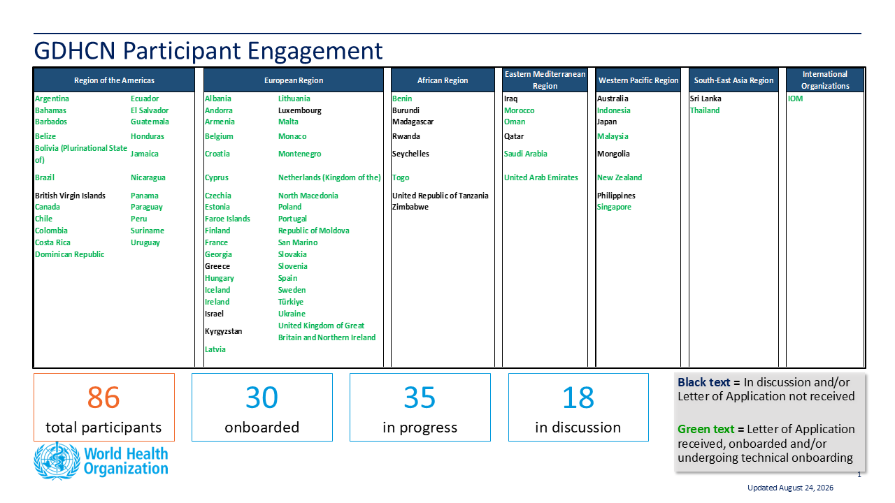

Home
Summary
This guide describes the specifications and on-boarding procedures for WHO's Global Digital Health Certification Network (GDHCN). The GDHCN is a mechanism to support verification of health documents and certifications that are exchanged between participants of the GDHCN. These health certifications may include COVID-19 certificates, routine immunization cards, and home-based records consistent with International Patient Summary standards. This mechanism provides means of harmonizing global health protocol standards and establishing a system for recognition of digital certificates for continuity of care and at point of entry. The GDHCN is designed to leverage existing investments by jurisdictions that were made under the COVID-19 response and provide the digital health infrastructure needed for resiliency in future epidemic and pandemic responses.
The GDHCN is a digital reflection of the trust WHO already has with Member States. The GDHCN is a digital trust network is based on proven concepts which are used to describe the specifications and mechanisms for establishing trust, which allow eligible participants to establish new trust domains for exchange of verifiable digital health records. Eligible participants of the trust network may apply to join by following an on-boarding process. The GDHCN is operated under the GDHCN Administrative and Operational Framework.
Trust Network

Background & Purpose
In response to COVID-19, Governments and organizations across the world have developed and adopted standards and technologies to create, present, and verify digital vaccination and test credentials. However, a global technical framework to enable convenient use and interoperability of these credentials between systems – while also allowing domestic autonomy over their use – does not exist yet and is critically needed.
The WHO Global Digital Health Certification Network is a collection of components that are used to verify interoperable digital health documents or certificates. This system of comprised of three main features:
- A collection of well defined digital health documents that are issued and verified by members of the GDHCN
- A Public Key Infrastructure (PKI) that is used for the publishing and distribution of public keys used for verification of digital signatures of the digital health documents.
- A Knowledge Library used to maintain metadata including terminology codings, product codes and business rules that are used to provide semantic interoperability of these digital health documents
In addition to verifying and validating COVID-19 certificates, a global digital health trust network such as the GDHCN can:
- Establish trust of digitally signed clinical algorithms published by WHO through the SMART Guidelines work.
- Allow for a global product catalogue of trusted medical products and devices.
- Ensure information about a patient can be accessed and trusted regardless of one is in the world.
- Support health systems resiliency to address future outbreaks in a world.
- Empower individuals to manage their own health and well-being.
The interoperable exchange of health information in a trusted environment is a complex task with an increasingly large number of stakeholders (e.g. public health agencies, accredited labs, border control organizations, institutions authorized to verify) that need to ensure that data is transferred safely and securely, that the health content is interoperable, and that information is understandable and actionable. This guide details how to utilize a global technical framework to allow interoperability of health credentials between systems, while preserving domestic autonomy over their use.
Achieving global interoperability of health certificates does not require that all jurisdictions use the same standard. Interoperability can also be achieved when there are pre-arranged mechanisms in place so that certificates issued by one jurisdiction are accepted in another. A number of services and technical artifacts have been developed to address particular criteria for establishing interoperability and a system of trust including:
- Data models, transformations and vocabulary definitions that allow exchange of health data between various standards formats, preserving a jurisdiction's autonomy regarding domestic processes while allowing re-issuance and mutual recognition of credentials between jurisdictions
- Standard specifications for exchanging public keys between various networks for verifying digital signatures on health credentials
- A global trust registry and federated public key infrastructure solution that provides technical interoperability and technical governance between regional trust networks
- Workflows for creating, sharing and executing business rules that evaluate public health policies against health data for cross-border or port of entry requirements
- Open source tools and technical guidance to reduce the burden of implementing the technical infrastructure to participate in the federated trust network, including open source trust network infrastructure for jurisdictions to implement their own regional trust networks
Circular letter to Member States
On Friday, September 29, 2023, WHO’s Director General sent a circular letter to all Member States encouraging participation in the GDHCN.
- C.L.38.2023 (Global Digital Health Certification Network) - Arabic
- C.L.38.2023 (Global Digital Health Certification Network) - Chinese
- C.L.38.2023 (Global Digital Health Certification Network) - English
- C.L.38.2023 (Global Digital Health Certification Network) - French
- C.L.38.2023 (Global Digital Health Certification Network) - Russian
- C.L.38.2023 (Global Digital Health Certification Network) - Spanish
Audience
This guide describes expected workflows for potential actors in a trust ecosystem, namely:
- Issuers that provide verifiable health credentials to individuals,
- Verifiers that consume verifiable health credentials provided by individuals, and
- Trust Networks that establish trust relationships and policies between issuers and verifiers.
The audience for this guide includes decision makers, analysts and technical assets at potential individual issuers, existing trust networks or potential verifiers who may participate in the federated trust network. Stakeholders include Member States, regional networks, and standards development organizations.
Participants
Trust Network Participants

Available Trust Domains
The codes for the GDHCN Trust Domains are contained in the GDHCN Trust Domain Value Set and are described in more detail here.
Ethical Considerations and Data Protection Principles
As with any digital solution, there are ethical considerations, such as potential impacts on equity and on equitable access, and data protection principles that need to inform the design of the technical specifications, as well as provide guidance on how resulting solutions can be ethically implemented. The following page discusses some key ethical considerations and data protection principles that Member States are encouraged to – and, where they have legal obligations, must – include in their respective deployments of digital solutions. These ethical considerations and data protection principles have also informed the design criteria for WHO’s SMART Guidelines and for the utilization of the WHO’s Global Digital Health Certification Network.
Feedback
Feedback specific to this Implementation Guide can provided through:
- Frequently asked questions can be viewed here
- Clicking on one of the Feedbacks link to the right of any section header
- Sending an email to gdhcn-support@who.int
- Creating an issue on GitHub smart-trust repository
Community
Sign up on chat.fhir.org community and follow the stream who-smart-guidelines for questions, queries and chats related to WHO SMART Guidelines
WHO also hosts weekly calls on authoring and implementing WHO SMART Guidelines where participation is welcome. Please send an email at gdhcn-support@who.int in order to get invited.
Disclaimer
The specification herewith documented is for the WHO Gloa demo working specification, and may not be used for any implementation purposes. This draft is provided without warranty of completeness or consistency, and the official publication supersedes this draft. No liability can be inferred from the use or misuse of this specification, or its consequences.
Key ethical considerations
Ethics should be an integral part of the design and deployment of a digital solution. However, policy decisions are often complex and difficult. Many different considerations will need to be made and weighed against each other. Often, the evidence is uncertain and there are many different competing ethical perspectives and positions. Evidence alone will not provide the right answer, nor will a simple set of ethical rules. Public health action requires careful judgement and acceptance of responsibility for the outcomes. A number of different ethical considerations should be taken into account, including both objectives and processes.
Objectives
A good starting point is to identify how the use of a digital solution can contribute to important general duties of any government through public health. Three key objectives of public health action are:
- to protect and promote the welfare of individuals, communities and the population as a whole;
- to ensure equal treatment for all individuals and prevent or mitigate, as far as possible, avoidable and unfair health inequalities (i.e. health inequities) within the boundaries of the state; and
- to create and maintain trust in public health activities as part of the health-care system.
The creation and use of a digital solution can contribute to each of these objectives. For example, in relation to objective 1, a digital solution can promote welfare through the provision of digital health records enabling continuity of care by ensuring that individuals have access to their health data across facilities. Promotion of this objective also contributes to confidence in the health infrastructure of the government, benefitting the whole population. Such an outcome is an important common good – that is, a good for all that cannot be created by each individual alone. Such goods require the coordinated actions of, and support from, governments. In addition, other benefits will follow from the use of a digital solution, because of improved health and subsequent increased opportunities for individuals and communities to make their own choices and pursue their own economic and social goals. In relation to objective 2, equal treatment requires respecting and protecting all persons equally and acting to ensure, as far as possible, that there is no discrimination against anyone. An example of how to work towards this objective is to ensure that appropriate personal data protection safeguards are implemented. Individual health data is private information, and protections need to be in place to ensure that no individual is forced to disclose or publicly display their personal health record (PHR) to access any public area or activity (1). Such a practice and/or the lack of a PHR itself may result in the stigmatization of individuals without a PHR and may exacerbate the risk of harms. Another example of working towards objective 2 is to think about ways to try and achieve equity through the distribution of health resources. While a digital solution may offer a more reliable, accurate and trusted mechanism to record an personal health history, they risk exacerbating health inequities, for the following reasons.
→ A PHR may increase digital exclusion if its application and use and requires that individuals have access to a digital infrastructure or if that digital infrastructure is too burdensome for all Member States to deploy.
→ Individuals with geographical, financial or disability barriers may also be excluded from obtaining and using a PHR, depending on the administration process, cost and design. Ensuring an equitable and inclusive approach to the implementation of a digital solution will mean that those with greater barriers to obtaining and using a PHR are supported to a greater extent than others.
In relation to objective 3, trust is vital to ensuring the benefits of a digital solution for individuals, communities and the whole population. For example, the provision of robust data protection measures and the use of procedural considerations, outlined in section 1.3.4, may contribute to the maintenance of trust in public health systems. This in turn contributes to the delivery of objective 1. Another example might be that a digital solution should only be used for its intended purpose, as inappropriate uses may result in legitimate ones being undermined.
Processes
The pursuit of the objectives above can create ethical problems. One way to mitigate this risk is by ensuring that various processes uphold important procedural values. These values, in turn, also contribute to the pursuit of the objectives above. Such values include:
→ TRANSPARENCY: providing clear, accurate and publicly accessible information about the basis for the policy and the process by which it is made, from the onset – i.e. notifying the public that such a process is underway. Such a process disciplines decision-making and ensures accountability by providing a sound basis for an eventual decision that reasonable members of the public may agree with.
→ INCLUSIVENESS IN DECISION-MAKING: providing opportunities for all relevant stakeholders to participate in policy formulation and design, in particular those affected, and advocates for these individuals and groups.
→ ACCOUNTABILITY: providing a clear framework for who is responsible for what, and how responsibilities will be regulated and enforced.
→ RESPONSIVENESS: providing mechanisms and opportunities to review and revise decisions and policies based on evolving scientific evidence and other relevant data. This may include public consultation or engagement with a wide range of experts, industries and other stakeholders so that the policies are responsive to real and perceived ethical issues and concerns. Particularly important stakeholders are those who are likely to be disadvantaged or face distinct or heightened risks with the creation of a PHR, such as individuals who are unable or unwilling to create a PHR, i.e. individuals with insecure or invalid citizenship or residency status, and individuals who may face other barriers in obtaining or using a PHR (2).
Ethical considerations related to further potential uses of digital personal health records for public health security measures
A number of further possible uses for digital PHRs raise ethical issues. In the context of a public health emergency, a digital PHR might play a role in achieving various public health purposes such as determining vaccination coverage in a given population, which may help to determine when to lift or relax public health and social measures (PHSMs) at a population level. A digital PHR might also be used to facilitate individualized exemption from, or, reduction of PHSMs (e.g. reduced quarantine time post exposure) or individual access to an activity based on proof of vaccination (if such uses are held to be ethical), which we can term a “health pass” function. The potential deployment or utilization of a digital PHR for these purposes, particularly as a health pass, engenders a number of potential ethical problems for individuals and communities, and human rights challenges (3,4).
First, use of a digital PHR as a health pass raises a distinct set of risks because of current scientific uncertainties emergent diseases. For example, during the COVID-19 Public Health Emergency of International Concern (PHEIC), COVID-19 vaccines have demonstrated efficacy and effectiveness in preventing severe disease and death, the extent to which each vaccine prevents transmission of SARS-CoV-2 to susceptible individuals were not fully assessed. How long each vaccine confers protection against severe disease and against infection, and how well each protects against current and future variants of SARS-CoV-2 were not fully known. In this context of scientific uncertainty, use of a digital PHR as a health pass based solely on individual vaccination status may increase the risk of disease spread. This is particularly the case if individuals with a digital PHR are completely exempted from PHSMs or if it is hard to enforce individuals’ compliance with required
PHSMs during an activity (e.g. mask wearing and physical distancing during a concert) to which they are allowed access based on their digital PHR.
Second, some potential behavioural responses to a digital PHR in its role as a health pass could undermine individual and public health. These include the following.
→ Where the benefits of a health pass are significant, it may result in digital PHR fraud. For example, fraudulent vaccination records may increase public health risks if a non-vaccinated person is potentially in contact with vulnerable people.
→ Individuals may be less willing to disclose their medical history and (potential) contraindications to a public health intervention (e.g. vaccine), in order to obtain a corresponding digital PHR, which increases the risk of adverse events.
→ The creation of a digital PHR following vaccination for each individual may incentivize more people to participate in a public health measure (e.g. receive a vaccine) to access the benefits of a digital PHR. However, it may also increase hesitancy to participate in the public health measure because of privacy and other concerns that the vaccination record could be linked to personal data and be used for functions other than those originally intended (e.g. surveillance of individual health status), or be used by unintended third parties (e.g. immigration, commercial entities, researchers) (5).
Third, a digital PHR in its use as a health pass risks introducing unfair disadvantages and injustices. For example, during the COVID-19 PHEIC, the initially limited supply of COVID-19 vaccine within some countries had been distributed to prioritize those at greatest risk of infection (such as health-care workers) or severe outcomes (such as the elderly). There is a danger that those who are willing to be vaccinated but have not yet been offered a vaccine, or those who are unable to be vaccinated for medical reasons, would be unfairly disadvantaged if a digital PHR incorporated health pass functions. Consideration should be given to whether individuals could use other proofs of health status to allow them similar access to the same services while mitigating the risk of disease spread. For example, during the COVID-19 PHEIC, these other proofs may have included a negative COVID-19 test or proof of post-infection-acquired immunity based on tests that are reliable and accurate (which have been called immunity certificates), although this also raises considerable scientific and ethical concerns (6).
Recommendations
The design, development and implementation of a digital solution raises many ethical issues. The following series of recommendations can be reviewed when considering such an implementation.
- THE SCOPE OF USE OF A DIGITAL SOLUTION SHOULD BE CLEARLY DEFINED.
Each Member State that introduces a digital solution should be clear about which uses are proposed and that it should not be used for other purposes. To prevent any potential misuse, any digital solution implementation should set out clear and specific policies, and laws if needed, on the limits to the solutions’ legitimate uses . Use of a digital solution to restrict the right to freedom to movement and other human rights is only justified when it supports the pursuit of a legitimate aim during a public health emergency and is provided for by law, proportionate, of limited duration, based on scientific evidence, and not imposed in an arbitrary, unreasonable or discriminatory manner.
- POTENTIAL BENEFITS, RISKS AND COSTS SHOULD BE ASSESSED BEFORE INTRODUCTION OF A DIGITAL SOLUTION.
The creation or development of a digital solution should be based on an assessment of the benefits and costs of its uses, and the advantages and disadvantages of the proposed infrastructure, in comparison with other potential or existing ways to record, validate and verify vaccination records. Benefit and cost assessment – as a function of stewardship of scarce public health resources – should take short-, medium- and long-term views. A short-term view would consider the utility and opportunity cost of investing in a digital infrastructure over other measures for responding to emergencies and meeting other public health needs during a public health crisis. Consideration should be given to whether the digital infrastructure could hinder the public health response because of the potential inefficiencies it may introduce for processing registrations and/or trainings etc . A long-term view would consider the potential advantages of a digital solution for strengthening the health system, such as enhancing the health information system and its interoperability across jurisdictions. In addition, the ethical issues and risks raised by a digital solution, and the impact of trade-offs between the benefits and burdens accrued to individuals, families, businesses and other relevant stakeholders should be assessed prior to implementation. Community engagement, particularly with representatives of groups who are likely to face increased disadvantages or risks, should also be conducted.
- OBTAINING AND USING A DIGITAL SOLUTION SHOULD BE AS INCLUSIVE AND FAIR AS POSSIBLE.
Digital solutions should be as inclusive as possible and should not create disadvantage. To achieve this, it may be necessary to provide alternative, cost-effective solutions, including paper-based alternatives, for individuals and groups with existing disadvantages, such as those with digital skill or disability barriers, those living in areas with poorer digital connectivity, and undocumented or irregular migrants. No one should be excluded through a requirement for individual payment to obtain and use a digital solution.
- ALL NECESSARY MEASURES SHOULD BE PUT IN PLACE TO PROTECT PARTICIPANTS FOR CONTINUITY OF CARE.
A digital solution will include potentially sensitive data relating to the health of individuals, and this data should therefore be protected by appropriate medical confidentiality and privacy safeguards. Access to or use of the data for continuity of care should be based on the appropriate consent standard (e.g. implied or explicit) in a given health-care system and should be sufficient for the receiving health-care provider or team to continue providing good medical care. These ethical standards will also apply to international transfer of data for continuity of care (such as when a patient accesses medical services abroad). For adults without decisional capacity, use of their personal health records for decisions relating to their health care may be based on their advance decisions or, in the absence of an advance decision, be made in the adult’s best interest by a health-care proxy or an authorized surrogate. Minors with sufficient intelligence and maturity should be able to allow the use of their health record data for continuity of care, where consent is required.
- ALL COMMUNICATION SHOULD BE CLEAR AND TRANSPARENT.
Implementation details of a digital solution relevant to users should be communicated in a transparent manner, which may contribute to the promotion of public trust and acceptance of the solution. This communication includes how the solution would work to benefit individuals and public health, the policies and mechanisms in place to limit access to and use of the solution by third parties, whether personal health data are linked to other types of data and the purposes of any data linkage. If, in the future, the uses of the solution are extended into other scientific or public health purposes (e.g. programme monitoring or research), data subjects and other members of the public should be informed of the nature and occurrences of these activities in advance, the ethics oversight or governance structure in place (including for surveillance activities (7)), and options for controlling or limiting personal health data for these uses. personal health data are sensitive and should, in general, be anonymized (or pseudonymized, or de-identified) for scientific or public health purposes, to minimize risks to the data subjects. Where personal health data need to be retained in an identifiable form for these purposes, consideration should be given to whether consent is required or should be waived based on satisfaction of appropriate ethical criteria (e.g. minimal risk, impracticability of obtaining consent, no adverse effects on the rights and welfare of the data subjects, and serving a public health good).
- THE DIGITAL SOLUTION SHOULD BE CONSTANTLY MONITORED FOR IMPACT AND ADJUSTED AS NECESSARY.
Post implementation, it is important to monitor the effects of digital solution in terms of positive and negative outcomes (e.g. impact on equity) and to consider potential interventions to mitigate negative outcomes. Such monitoring should also review uses that do not fit neatly into legitimate and illegitimate use categories set by policies, to consider whether these uses should be continued, modified or stopped.
Data protection principles for a Digital Solution
This section presents prerequisite fundamental data protection principles for the digital solution . The principles are designed to provide guidance to the national authorities tasked with creating or overseeing the development of the digital solution. The objectives are to encourage Member States to adopt or adapt their national laws and regulations, as necessary, respect personal data protection principles, and ensure respect for the human rights and fundamental freedoms of individuals, in particular the right to privacy, in order to build trust in the implementation of the digital solution.
The data protection principles are as follows.
- LAWFUL BASIS, LEGITIMATE USE AND FAIR PROCESSING
The personal data collected in the interest of the application of the digital solution should be processed in a fair and non-discriminatory manner, based on the consent of the data subject, the necessity to protect the vital interests of the data subject or of another data subject, or explicitly justified by legitimate public health objectives. The processing of personal data in the interest of the application of the digital solution should have a lawful basis; it should comply with applicable laws, including broader human rights standards and data privacy and data protection laws, as well as respecting the highest standards of confidentiality, and moral and ethical conduct. Personal data collected for the application of the digital solution should only be accessed, analysed or otherwise used while respecting the legitimate interests of the data subjects concerned. Specifically, to ensure that data use is fair, data should not be used in a way that violates human rights or in any other ways that are likely to cause unjustified or adverse effects on any individual(s) or group(s) of individuals. Any retention of personal data processed in the interest of the application of the digital solution should have a legitimate and fair basis. Before any data are retained, the potential risks, harms and benefits should be considered. Personal data should be permanently deleted after the time needed to fulfil their purpose, unless their extended retention is justified for specified purposes.
- TRANSPARENCY
The processing of personal data in the interest of the application of the digital solution should be carried out to be transparent to the data subjects. Data subjects should be provided with easily accessible, concise, comprehensible and reader-friendly information in clear and unambiguous language regarding: the purpose of the data processing; the type of data processed; how data will be retained, stored and shared, or made otherwise accessible; who will be the recipients of the data and how long the data will be retained. Information should also be provided to data subjects on applicable data retention schedules, and on how to exercise their data subject rights. A list of entities authorized to process personal data in the interest of the application of the digital solution should be made public.
- PURPOSE LIMITATION AND SPECIFICATION
As the personal data collected in the interest of the digital solution may only be used for the scope and purpose identified, and they should not be processed in ways that are incompatible with identified purposes. The use of data for any other purpose, including the sale and use of personal data for commercial purposes, should be prohibited, except with the explicit, unambiguous and freely given prior consent of the data subject. The purposes for which personal data are processed in the interest of the application of the digital solution should be specified no later than at the time of data collection. The subsequent use of the personal data should be limited to the fulfillment of those specified purposes. When a health worker or verifier of the digital solution is carrying out their mandated activities ; transferring personal data processed in the interest of the application of the digital solution to a third party or allowing access by a third party should only be permitted if the principles underlying the lawful basis, as referred to above, are met; and the third party affords appropriate protection that is equal to or higher than those protections provided by the data controller, for the personal data. Personal data processed in the interest of the application of the digital solution should be relevant to the purposes for which they are to be used and, to the extent necessary for those purposes, be accurate, complete, and kept up to date.
-
PROPORTIONALITY, NECESSITY AND DATA MINIMIZATION
The processing of personal data should be relevant (have a rational link to specified purposes), adequate (sufficient to properly fulfil the specified purposes) and limited to what is required to fulfil the specified purposes. The processing of personal data should not be excessive for the purposes for which those personal data are collected. Data collected and retained on the digital solution should be as limited as possible, respecting proportionality and necessity. Data access, analysis or other use should be kept to the minimum necessary to fulfil their purpose. The amount of data, including their granularity, should be limited to the minimum necessary. Selective disclosure mechanisms should be used to support proportionate data access. Data use should be monitored to ensure that it does not exceed the legitimate use. Personal data retained in the interest of the application of the digital solution should only be retained and stored for the time that is necessary for specified purposes. Personal data accessed at the point of verification of the digital solution should not be retained and stored in a repository, database or otherwise.
-
CONFIDENTIALITY AND SECURITY
Personal data processed in the interest of the application of the digital solution should be kept confidential and not disclosed to unauthorized parties; personal data should only be accessible to the data subject or to other explicitly authorized parties. With regard to the nature and sensitivity of the personal data processed in the interest of the application of the digital solution, appropriate organizational, physical and technical security measures should be implemented for both electronic and paper-based data in order to protect the security and integrity of personal data. This protection includes measures to protect against personal-data breach, and measures to ensure the continued availability of that personal data for the purposes for which it is processed; this applies regardless of whether the data are stored on devices, applications, servers or networks, or if they are sent through services involved in collection, transmission, processing, retention or storage. Taking into account the available technology and cost of implementation, robust technical and organizational safeguards and procedures (e.g. efficient monitoring of data access, data breach notification procedures) should be implemented to ensure proper data management throughout the data life-cycle. Such measures are to prevent any accidental loss, destruction, damage, unauthorized use, falsification, tampering, fraud, forgery, unauthorized disclosure or breach of personal data. In case of a security breach leading to the accidental or unlawful destruction, loss, alteration, unauthorized disclosure of or access to personal data transmitted, stored or otherwise processed, users of the digital solution,n that hold health records (Data Holders) should be notified in an appropriate and timely manner. Data Holders should be notified of: any data breach; the nature of the data breach, which may affect their rights as data subjects; and recommendations to mitigate potential adverse effects.
-
DATA SUBJECT RIGHTS, COMPLAINT AND LEGAL REDRESS
Data Holders, if they have provided sufficient evidence of being the Data Holder, should be able to exercise data subject rights. These data subject rights include the right of access, correction, deletion, objection and restriction of personal data, subject to conditions regulated by national law, decree, regulation or other official act or order. Data subjects have the right to seek redress by a complaint procedure if they suffer harm or loss as a result of misused data or incorrect or incomplete data. Data subjects should be provided with easily accessible, concise, comprehensible and reader-friendly information about how they might exercise their data subject rights and how to seek legal redress, including how they can exercise any rights in the case of alleged fraud.
-
INDEPENDENT OVERSIGHT AND ACCOUNTABILITY
An independent public authority should be responsible for monitoring whether any data controller and data processor involved in the processing of personal data in the interest of the digital solution adhere to the principles, and may recommend revoking the authorization to collect or otherwise process data. Such a public authority should have access to all information necessary to fulfil its task. Adequate policies and mechanisms should be in place to ensure adherence to these principles.
Digital personal health record design criteria
Due to the ethical considerations and data protection principles outlined above, the following design criteria were considered when formulating the requirements for implementing a digital solution.
- Implementation of the digital solution should not increase health inequities or increase the digital divide.
- Every individual in the jurisdiction should have the right to obtain and hold records on a digital solution. The records held by the digital solution need to be in a format that can be accessible to all, for example, in paper and digital formats. Any solution should also work in online and offline environments across multiple platforms – paper and digital.
- Individuals should not be treated differently or given different levels of trust due to the representation format of the data they are using (e.g. there should be no discrimination based on whether someone is presenting a health record on a smartphone or a paper card).
- Any solution should not be at an additional cost to the person. The interoperability specifications used in digital solutions should be based on open standards to ensure equitable access to a range of non-proprietary digital tools.
- The infrastructure that the digital solution solution is built on should ensure that individuals and Member States are not locked into a commitment with only one vendor.
- Any solution should be as environmentally friendly as possible. The most environmentally sustainable options should be pursued to reduce any additional undue harm to the environment.
- Any solution should be designed to augment and work within the context of existing health information systems, as appropriate.
- Any solution should not share or store more data than is needed to successfully execute its tasks. Minimization of health content for purposes not related to health care, and privacy-protecting features, should be built into the system and be respected accordingly.
- Anti-fraud mechanisms should be built into any approach.
Digital technology should not be the only mechanism available for verification. There should always be possible ways to revert to a paper-only manual verification of records. It is important to note that despite the technological design criteria outlined here, it will be essential for Member States to ensure that the legal and policy frameworks are in place to support responsible use of the digital solution as defined by the Member State.
References
- Requiring proof of Covid-19 vaccination (vaccine “passports”/“certificates”): Key ethical, legal, and social issues. Policy brief. In: Swiss National COVID-19 Science Task Force [website]. Zurich: ETH Board; 19 February 2021 (https:// sciencetaskforce.ch/en/policy-brief/requiring-proof-of-covid-19-vaccination-vaccine-passports-certificates-key-ethicallegal- and-social-issues, accessed 27 June 2021).
- What place should COVID-19 vaccine passports have in society? Ada Lovelace Institute; 17 February 2021 (https:// www.adalovelaceinstitute.org/wp-content/uploads/2021/02/COVID-19-vaccine-passports-rapid-expert-deliberation.pdf, accessed 27 June 2021).
- Committee on Bioethics. Statement on human rights considerations relevant to “vaccine pass” and similar documents. Strasbourg: Council of Europe; 4 May 2021 (https://rm.coe.int/dh-bio-2021-7-final-statement-vaccines-e/1680a259dd, accessed 27 June 2021).
- COVID-19 Vaccination certificates and lifting public health and social measures: ethical considerations. Geneva: World Health Organization; forthcoming.
- Twelve criteria for the development and use of COVID-19 vaccine passports. Pre-print paper. London: The Royal Society The Royal Society SET-C (Science in Emergencies Tasking – COVID); 14 February 2021 (https://royalsociety.org/-/media/ policy/projects/set-c/set-c-vaccine-passports.pdf, accessed 27 June 2021).
- Voo TC, Reis AA, Thomé B, Ho CW, Tam CC, Kelly-Cirino C, et al. Immunity certification for COVID-19: ethical considerations. Bulletin of the World Health Organization. 2021;99(2):155–61. doi:10.2471/BLT.20.280701.
- Guidelines on ethical issues in public health surveillance. Geneva: World Health Organization, 2017 (https://www.who.int/ publications/i/item/who-guidelines-on-ethical-issues-in-public-health-surveillance, accessed 27 June 2021).
FAQs
Participation and Roles
Who can serve as the Application Form Representative for GDHCN participation?
A designated public health authority from a WHO Member State, with decision-making authority regarding participation in the GDHCN, should be the representative.
What is the role of the Business Owner Contact?
A senior official with decision-making powers, involved in strategic decisions but not daily operations.
Who should be the Technical Contact?
An individual responsible for addressing technical inquiries and issues during the project’s lifecycle.
What does the Legal Contact do?
Manages legal aspects, including regulatory compliance and contractual matters related to GDHCN participation.
Financial Information
Are there any fees associated with participating in the GDHCN?
Participation in the GDHCN is currently free, supported by existing WHO funding.
Technical Requirements and Infrastructure
How will the transition to WHO’s product catalog management tool affect vaccine codes?
The tool aims to manage vaccine codes effectively, addressing the complexities of medical terminology coding.
Can we continue participation in the UAT environment without moving to production?
Yes, continuing in the UAT environment is possible and does not hinder future transition to the production environment.
How does GDHCN support open-source collaboration?
Through platforms like GitHub, enabling community contributions to enhance technical specifications and documentation.
How is GDHCN integrating existing EU DCC technical specifications?
By incorporating EU DCC specifications like APIs for key access, business rules, and value sets, ensuring compatibility.
What are the plans for future developments and maintenance of the GDHCN infrastructure?
Future developments will be guided by WHO, focusing on compatibility with existing systems and ensuring security and backward compatibility.
Transition and Onboarding
How is the transition of technical assets from EU DCC to GDHCN managed?
This includes moving APIs and sets into GDHCN specifications, with WHO ensuring a smooth integration.
What is the onboarding process for new applications not previously connected to EU DCC?
It involves verifying technical connections and compatibility with existing systems, especially regarding TLS certificates.
Security and Compliance
How is the key material and exchange process managed within GDHCN?
With detailed definitions for key materials, ensuring clarity and visibility in the key exchange process, closely resembling EU DCC definitions.
How are security-related incidents managed during the transition to WHO governance?
The focus is on addressing security incidents, with no changes to the repository unless necessary for security reasons.
Certificate Management
What is the current policy on TLS certificate renewal for national backends?
The policy is under review, with discussions on alternatives to the three-month renewal policy, including longer expiry times or self-signed certificates.
Can WHO host networks use self-signed TLS certificates?
The possibility of WHO using self-signed certificates with extended expiry times is under discussion.
What is the process for proposing alternatives to the current TLS certificate policy?
Proposals for alternatives, like extended expiry times, are being considered to alleviate concerns with short renewal policies.
###!## How does WHO ensure trust without relying solely on the TLS certificate? Trusting the CA rather than the certificate itself may provide a solution to frequent renewals.
Business Requirements
This digital health trust network is a network of stakeholders that securely exchange and uses health information based on trust, security, and privacy principles, and is designed to ensure that health information is handled in a secure, private, and compliant manner. Through the GDHCN, WHO serves as the custodian of a digital health trust network.
It has been broken up into the following sections:
In addition to the key concepts used throughout this document, which are defined below, additional documentation may be found on:
The GDHCN Administrative and Operational Framework should be considered the authoritative source of definitions and concepts in case of any discrepancies.
Concepts Glossary
GDHCN Trust Network
The GDHCN Trust Network is a Trust Network comprised of the GDHCN Secretariat and GDHCN Participants. The GDHCN Trust Network operationalizes Trust Domains through a Trust Network Gateway by enabling bilateral verification and utilization of Verifiable Digital Health Certificates and the utilization of Trusted Services by GDHCN Participants.
GDHCN Secretariat
The WHO Secretariat serves as the operational and management leadership of the GDHCN, and in this role, the GDHCN Secretariat.
GDHCN Participant
A GDHCN Participant is participant of the Trust Network that adheres to the Terms of Participation and manages the necessary technical infrastructure and governance processes. GDHCN Participants are responsible for making bilateral determinations related to the utilization of Trusted Services.
Eligible GDHCN Participant
An Eligible GDHCN Participant is one of the following:
- a WHO Member State or Associate Member, or sub-national unit thereof;
- a State Party recognized by the International Health Regulations, or sub-national unit thereof;
- the United Nations (UN) and other intergovernmental organizations in effective relations with WHO;
- a fund, programme, specialized agency, or related organization within the UN system; or
- an organization officially delegated by one of the organizations mentioned above that can abide by the GDHCN Terms of Participation and fulfils one or more of the following health service functions:
- Public Health Agency;
- Health Professions Education Accreditation Agency;
- Health Services Licensing Agency; or
- Public Health Security Agency. Once accepted to the GDHCN, after the successful conclusion of the Onboarding Process, will be referred to as GDHCN Participant. An Eligible GDHCN Participant that has initiated the Onboarding Process will be referred to as an Eligible GDHCN Applicant.
Terms of Participation (TOP)
Participation in the GDHCN is subject to the Onboarding Process set forth by the GDHCN Secretariat in its sole and absolute discretion, and in accordance with WHO rules, regulations, policies and practices, as may be amended from time to time. The requirements for the GDHCN Terms of Participation are comprised of the following components:
- TOP0 Sharing of necessary credentials to establish an mTLS (mutual transport layer security) connection between a GDHCN Participant’s backend system(s) and the Trust Network Gateway;
- TOP1 Compliance, during initial Onboarding Process and during routine validation periods, with technical specifications required for a PKI;
- TOP2 Compliance, during initial Onboarding Process and during routine validation periods, with technical specifications for Verifiable Digital Health Certificates and APIs of Trusted Services for each applicable Trust Domain;
- TOP3 Compliance with policy and regulatory standards that GDHCN Participants pertaining to Trusted Services that a GDHCN Trust Participants operates or utilizes for each applicable Trust Domain; and
- TOP4 Provision of supporting documentation (e.g. mandate, legal framework) demonstrating that it is an Eligible GDHCN Participant, as may be requested by WHO, at its sole discretion, from time to time.
Business Owner Representative
The individual identified by a GDHCN Participant as having the primary business and programmatic responsibility for the GDHCN Participant for the implementation of the use cases covered by a Trust Domain.
Key Master Representative
The individual identified by a GDHCN Participant as having the primary responsibility for the management of the Public Key Infrastructure, including the generation of any needed public-private key pairs, and the configuration and management of the connections between the GDHCN Participant’s Public Key Infrastructure and the GDHCN Trust Network Gateway.
Legal Representative
The individual designated by a GDHCN Participant as having the primary responsibility for reviewing the requirements related to a Trust Domain on behalf of this GDHCN Participant. This person should be someone that the GDHCN Secretariat can consult in relation to any legal or policy issues that may arise, such as changes to this document or changes to one of its Annexes that defines a Trust Domain.
Technical Representative
The individual designated by a GDHCN Participant as having the primary overall responsibility for the security, technical matters and systems infrastructure of this GDHCN Participant for the applicable Trust Domain including ensuring compliance with technical specifications.
Letter of Application
A formal application sent via a verifiable and secure channel from an Eligible GDHCN Participant to the GDHCN Secretariat to join the GDHCN Trust Network and participate within a particular Trust Domain.
Onboarding Process
The processes required for an Eligible GDHCN Participant to join the GDHCN Trust Network. At the successful conclusion of the Onboarding Process, the Eligible GDHCN Participant shall be considered a GDHCN Participant. Sometimes simply referred to as “Onboarding”.
Health Professions Education Accreditation Agency
An organization or organizational unit that is responsible for establishing and/or implementing procedures for accreditation of health professions education institutions. See https://apps.who.int/iris/rest/bitstreams/1473223/retrieve and https://applications.emro.who.int/docs/em_rc50_r9_en.pdf?ua=1
Health Services Licensing Agency
An organization or organizational unit that is responsible for establishing and/or implementing procedures for licensure, and the licensing of organizations or individuals to provide clinical, health system or public health services within their jurisdiction. Licensing comprises processes through which duly authorized governmental authorities, such as recognized professional organizations, grant permission to an individual or healthcare organization to operate or engage in a medical occupation or profession. See: https://apps.who.int/iris/rest/bitstreams/1473223/retrieve and https://cdn.who.int/media/docs/default-source/documents/health-systems-strengthening-glossary.pdf.
Public Health Agency
An organization, or organizational unit, that is responsible for establishing procedures for and/or implementation of activities related to the protection, promotion, and improvement of public health within a specific jurisdiction or domain. May also be referred to as a Ministry of Health, Department of Health, or Public Health Authority.
Public Health Security Agency
An organization, or organizational unit, that is responsible for establishing procedures for and/or implementing required activities, both proactive and reactive, for minimizing the danger and impact of acute public health events that endanger people’s health across geographical regions and international boundaries. See: https://www.who.int/health-topics/health-security.
Public Key Infrastructure (PKI)
The Public Key Infrastructure (PKI) is the trust model based on public key certificates and certificate authorities. It is the means for publishing and distributing Trust Lists comprising the public keys that can be used to digitally verify the issuer of a Verifiable Digital Health Certificates.
Signing Certificate Authority (SCA)
Each GDHCN Participant maintains one or more Signing Certificate Authority (SCA), certificates of which are relatively long lived. The SCA issues public key certificates for the national, short lived, Document Signers. The SCA acts as a trust anchor such that relying GDHCN Participants can use the SCA certificate to validate the authenticity and integrity of the regularly changing DSC certificates.
Holder
A Holder is an individual that has Verifiable Digtial Health Certificate in their possesion, received from an Issuer. The Holder may choose to share the Verifiable Digital Health Certificate with a Receiver.
Receiver
A Reciever is a system authorized by a Trust Network Participant to receive from a Holder a Veritifable verify, and utilize the content within.
Issuer
An Issuer a system authorized by a Trust Network Participant to generate Verifiable Digital Health Certificates which are provided to a Holder. An Issuer is responsible for generating the content that is digitally signed within the Verifiable Digital Health Certificate. In order to sign this content, an Issuer should either itself be a Document Signer or utilize a Document Signer service, as authorized by the jurisdicitonal policy.
Document Signer
A Document Signer utilizes the private key of a private-public key pair to digitally sign Verifiable Digital Health Certificates. A single private key is expected to sign a large quantity of Verifiable Digital Health Certificates. The corresponding public key is referred to as a Document Signer Certificate (DSC).
Document Signer Certificates (DSCs)
Document Signer Certificates are the public key certificates associated to Document Signers which are issued or recognized by the GDHCN Participant.
Encryption Key Certificate Governance
The process and technical specifications regarding the management and use of encryption keys for Verifiable Digital Health Certificates, Public Key Infrastructure, and for securing connections with Trusted Services and the Trust Network Gateway.
Trust Domain
A Trust Domain consists of:
- Defined use cases and business processes related to the utilization of Verifiable Digital Health Certificates;
- the open, interoperable technical specifications that identify or define the applicable Trusted Services and Verifiable Digital Health Certificates; and
- a set of policy and regulatory standards describing expected behavior of GDHCN Participants in relation to operation of the Trusted Services and utilization of Verifiable Digital Health Certificates (e.g. data minimization, privacy, scope of use).
Trust Lists
Universal verifier applications that support different credential standards are complicated by wide variability in format of the credential payloads, signatures, key formats, and key distribution methods. Public keys formats include x509 certificates, JSON Web Key Sets (JWKS), and DID documents. Signing key distribution methods include API gateways, hosted by issuer at a pre-defined URL, embedded in certificates, and by block-chain based resolution. Establishing root of trust by trust anchor or distributing trust list has been accomplished by API gateway, hosted URL, private dissemination and other bilateral sharing agreements.
While some variability is expected in an approach that preserves sovereignty, there are opportunities for alignment in key format and distribution for the sake of fostering interoperability. With that goal, we provide a unifying trust list format to assemble and share public key infrastructure for all credential specifications used by existing trust networks. Importantly, this format does not enforce a particular policy framework for participants of the trust network.
The GDHCN currently supports two means for key distribution of keys using trust lists
- EU DCC API required
- Decentralized Identifier (DID) optional
Trust Network
A Trust Network is a means to authenticate the encryption public keys used by participants within a network to perform encryption services, verify digital signatures, establish secure connections between systems, and otherwise make use of encryption public keys.
Trust Network
Trust Network Gateway (TNG)
The Trust Network Gateway (TNG) is the open-source software and its IT operational infrastructure, utilizing open standards, for a Public Key Infrastructure and metadata management services which is used to operationalize one or more Trust Domains. The Trust Network Gateway can be interacted with using the API once a mTLS connection has been established.
Trust Network Gateway - Trust Anchor (TNGTA)
The Trust Anchor public key certificate of the TNG. The corresponding private key is used to sign the list of all SCA certificates offline.
Trust Network Gateway - Transport Layer Security (TNGTLS)
The TLS server public key certificate of the TNG.
Trust Network Participant (TNP)
Trust Network Participant (TNP) is an acronym used to label certificates, infrastructure, or technical artifacts made available by GDHCN Participants under the GDHCN Trust Network.
GDHCN Participant Backend System
A GDHCN Participant’s Backend System for managing the local part of information. The implementation of GDHCN Participant’s Backend System is not in the scope of this document. A national backend can be also understood as a trusted party on-boarded in the Trust Network Gateway (can be a script, a proxy or a web server as well).
Trust Network Participant - Data Exchange Certificate Authority (TNPDECA)
The DSCA public key certificate of a GDHCN Participants (could be more than one).
The DECA public key certificate of a GDHCN Participants (could be more than one). The DECA is a certificate which acts a trust anchor in the verification of the certificate chain for the DESCs issued by a Trust Network Participant”
Trust Network Participant - Document Signing Certificate Authority (TNPDSCA)
The DSCA public key certificate of a GDHCN Participants (could be more than one). The DSCA is a certificate which acts a trust anchor in the verification of the certificate chain for the DSCs issued by a Trust Network Participant”
Trust Network Participant - Transport Layer Security (TNPTLS)
The TLS client authentication public key certificate of a GDHCN Participant’s Backend System.
Trust Network Participant - Transport Layer Security (TNPUP)
The public key certificate that a GDHCN Participant uses to sign data packages that are uploaded to the TNG.
Trust Network Participant Verifier
A system utilized by a GDHCN Participant to verify the digital signature of a Verifiable Digital Health Certificate.
Trusted Service
A service (digital or otherwise) related to the issuance, management, verification, exchange, or other relevant processes, of Verifiable Digital Health Certificates which is defined using open, interoperable digital health standards.
Verifiable Digital Health Certificate
Verifiable Digital Health Certificate: A digital representation of a data set comprising a certificate or document, designed for a set of specific clinical or public health use cases which is defined using open, interoperable digital health standards; that contains within, or is associated to, a digital signature which can be verified by the public key of a public-private encryption key pair, and which is issued by a GDHCN Participant.
The specific Verifiable Digital Health Certificates are defined in the Content Profiles
Certificate Governance
This document describes the Public Key Certificate Governance utilized by the WHO GDHCN. See the concepts document for further information.
Note: In the embedded image the following relabels apply:
- DCCG -> TNG
- CSCA -> SCA
- DCC -> GDHCN
- NB -> TNP
Context
The core functionality is the secure and trusted exchange of signature keys for GDHCN Trust Network Gateway (TNG) which acts as a central repository for the public keys. GDHCN Participants are empowered to publish the public keys that they use to sign Verifiable Digital Health Certificate. Relying GDHCN Participants can use the TNG to fetch up-to-date public key material on a timely basis.
The trust model of the GDHCN framework is a Public Key Infrastructures (PKI). Each GDHCN Participant maintains one or more Signing Certificate Authority (SCA), certificates of which are relatively long lived. The SCA issues public key certificates for the short lived, Document Signers (i.e. signers for digital health certificates), which are called Document Signer Certificates (DSCs). The SCA acts as a trust anchor such that relying GDHCN Participants can use the SCA certificate to validate the authenticity and integrity of the regularly changing DSC certificates. Once validated, the GDHCN Participant can provide these certificates (or just the public keys contained therein) to their validation applications.
Besides SCAs and DSCs, the TNG also relies on PKI to authenticate transactions, sign data, as the basis for authentication and as a means to ensure integrity of the communication channels between the GDHCN Participant and the TNG.<
The following picture presents a high-level overview of the system.
Overview

Scope of Document
Digital signatures can be used to achieve data integrity and authenticity. Public Key Infrastructures establish trust by binding public keys to verified identities (or issuers). This is necessary to allow other participants to verify the data origin and the identity of the communication partner and decide about trust. In the TNG, multiple public key certificates are used for authenticity. This document defines which public key certificates are used and how they should be designed in order to allow broad interoperability between the different GDHCN Participants. This document is based on [1] and [2]. It provides more details on the necessary public key certificates and it gives guidance on certificate templates and validity periods for countries that want to operate their own SCA. Since DSCs shall be verifiable for a defined time-frame (starting from the issuing, expire after a given time), it is necessary to define a verification model for all signatures applied on the public key certificates and the digital health certificate. Legal and administrative procedures are not in the scope of this document, they must be defined separately.
Terminology
The key words “MUST”, “MUST NOT”, “REQUIRED”, “SHALL”, “SHALL NOT”, “SHOULD”, “SHOULD NOT”, “RECOMMENDED”, “NOT RECOMMENDED”, “MAY”, and “OPTIONAL” in this document are to be interpreted as described in BCP 14 (RFC2119, RFC8174) when, and only when, they appear in all capitals, as shown here.
These concepts and the following table contains abbreviations and terminology used throughout this document.
| Term | Definition |
|---|---|
| Certificate | Or public key certificate. An X.509 v3 certificate that contains the public key of an entity |
| EC-DSA | Elliptic Curve Digital Signature Algorithm. A cryptographic signature algorithm based on elliptic curves |
| mTLS | Mutual TLS. The Transport Layer Security Protocol with mutual authentication |
| RSA | Asymmetric cryptographic algorithm based on integer factorization used for digital signatures or asymmetric encryption |
TNG communication flows and security services
This section gives an overview of the communication flows and security services in the TNG system. It also defines which keys and certificates are used to protect the communication, the uploaded information, the digital health certificates, and a signed trust list that contains all on-boarded SCA certificates. The following figure gives a high-level overview of the TNG communication flow and security services. The following sub-sections will explain the design in more detail.
Trust Model

General
The TNG works as a data hub that allows the exchange of signed data packages for GDHCN Participants. In the current phase, the signed data packages contain the DSC that are used by the GDHCN Participants. This allows other GDHCN Participant Backends to fetch them and distribute the information to their validation apps. Even if the DSCs are already signed by the SCA, this approach allows to extend the system later to allow Backends the upload of different, potentially unsigned, content (like validation rules).
Uploaded data packages are provided by the TNG “as is”, meaning that the TNG does not add or delete DSCs from the packages it receives. The Backend systems of the GDHCN Participants shall be enabled to verify the end-to-end integrity and authenticity of the uploaded data (see Section “Integrity and authenticity of uploaded data”).
In addition to this - GDHCN Participant Backend systems and the TNG will use mutual TLS authentication to establish a secure connection (see Section “Authentication and connection establishment”). So this is in addition to the signatures in the data exchanged.
Authentication and connection establishment
The TNG uses Transport Layer Security (TLS) with mutual authentication to establish an authenticated encrypted channel between the GDHCN Participant’s Backend and the Trust Network Gateway environment and utitlize its API. Therefore, the TNG holds a TLS server certificate, abbreviated TNGTLS - and the GDHCN Participant’s Backends hold a TLS client certificate – abbreviated TNPTLS. Certificate templates are provided in Section “Certificate Templates”.
Every GDHCN Participant’s Backend can provide their own TLS certificate. This certificate will be whitelisted explicitly and thus may be issued by a publicly trusted certificate authority (e.g. a certificate authority that follows the baseline requirements of the CA Browser forum), by a jurisdictional certificate authority or it can be self-signed. Every GDHCN Participant is responsible for their jurisdictional data and the protection of the private key used to establish the connection to the TNG. Clearly, the “bring your own certificate” approach requires a well-defined registration and identification process as well as revocation and renewal procedures that are described in Section “Registration of GDHCN Participant Backends”.
The TNG uses a whitelist where the TLS certificates of GDHCN Participant Backends are added after their successful registration. Only GDHCN Participant Backends that authenticate themselves with a private key that corresponds to a certificate from the whitelist can establish a secure connection to the TNG.
The TNG will also use a TLS certificate that allows the GDHCN Participant Backends to verify that they are indeed establishing a connection to the “real” TNG and not some malevolent entity posing as TNG. The TNGTLS certificate will be issued from a publicly trusted CA (included in all major browsers). It is the responsibility of the GDHCN Participants to verify that their connection to the TNG is secure (for example by checking the fingerprint of the TNGTLS certificate of the server connected to against the one provided post registration).
Signing Certificate Authorities and Validation Model
All GDHCN Participants that take part in the GDHCN framework MUST use an SCA to issue the DSCs. GDHCN Participants MAY have more than one SCA, e.g. in case of delegation authorities. Each GDHCN Participant can either use existing certificate authorities or they can set up a dedicated (possibly self-signed) certificate authority for the SCA system. The GDHCN Participants MUST present their SCA certificate(s) to the GDHCN Secretariat during the official on-boarding procedure. After successful registration of the GDHCN Participant (see section “Registration of GDHCN Participant Backends” for more details), the GDHCN Secretariat will update a signed trust list that contains all SCA certificates that are active. The GDHCN Secretariat will use a dedicated asymmetric key pair to sign the trust list and the certificates in an offline environment. The private key will not be stored on the online TNG system, such that a compromise of the online system does not enable an attacker to compromise the trust list. The corresponding trust anchor certificate TNGTA will be provided to the GDHCN Participants during the onboarding process. GDHCN Participants can retrieve the trust list from the TNG for their verification procedures.
The SCA is defined as the certificate authority that issues DSCs, hence GDHCN Participants that use a multi-tier CA hierarchy (e.g. Root CA -> SCA -> DSCs) MUST provide the subordinate certificate authority that issues the DSCs. So in that case - if a GDHCN Participant uses an existing certificate authority - the GDHCN system will ignore anything above the SCA – and whitelist only the SCA as the trust anchor (even though it is a sub-ordinate CA). This is as the ICAO model [2] only allows for exactly two levels - a ‘root’ SCA and a single ‘leaf’ DSC signed by just that SCA. In case a GDHCN Participant operates its own SCA, the GDHCN Participant is responsible for the secure operation and key management of that CA. It must be noted that the SCA acts as the trust anchor for DSCs and therefore, protecting the private key of the SCA is essential for the integrity of the Trust Network environment.
The verification model in the Trust Network PKI is the shell model (for example, defined in [3]), which states that all certificates in the certificate path validation must be valid at a given time (i.e. the time of signature validation). Therefore, the following restrictions apply:
- The SCA SHALL NOT issue certificates that are valid longer than the CA certificate itself (see [2, Section 5]).
- The document signer SHALL NOT sign documents that are valid longer than the DSC itself. GDHCN Participants that operate their own SCA MUST define validity periods for their SCA and all issued certificates, and they MUST take care of certificate renewal. Section “Certificate authorities, validity periods and renewal” contains recommendations for validity periods.
Integrity and authenticity of uploaded data
GDHCN Participants can use the TNG to upload and download digitally signed data packages after successful mutual authentication. In the beginning, these data packages contain the DSCs of the GDHCN Participants.
The key pair that is used by the GDHCN Participant’s Backend for the digital signature of uploaded data packages in the TNG system is called Trust Network Participant upload signature key pair and the corresponding public key certificate is abbreviated by TNPUP certificate. Each Trust Network Certificate brings its own TNPUP certificate, which can be self-signed, or issued by an existing certificate authority, such as a public certificate authority (i.e. a certificate authority that issues certificate in accordance with the CAB-Forum baseline requirements). The TNPUP certificate shall be different from any other certificates used by the GDHCN Participant (i.e. SCA, TLS client or DSCs).
The GDHCN Participants MUST provide the upload certificate to the GDHCN Secretariat during the initial registration procedure (see Section “Registration of GDHCN Participant Backends” for more details). Every GDHCN Participant is responsible for their jurisdiction’s data and it must protect the private key that is used for signing the uploads. Other GDHCN Participants can verify the signed data packages using the upload certificates that are provided by the TNG.
The TNG verifies the authenticity and integrity of the uploaded data with the TNPUP certificate before it is provided to other GDHCN Participants.
Requirements on the technical TNG architecture
The requirements on the technical TNG architecture can be summarized as follows:
- The TNG uses mutual TLS authentication to establish an authenticated encrypted connection with the GDHCN Participant Backends. Therefore, the TNG maintains a whitelist of registered TNPTLS client certificates.
- The TNG uses two digital certificates (TNGTLS and TNGTA) with two distinct key pairs. The private key of the TNGTA key pair is maintained offline (not on the online components of the TNG).
- The TNG maintains a trust list of the TNPSCA certificates that is signed with the TNGTA private key.
- The ciphers used MUST meet the requirements from Section “Cryptographic requirements”.
Certificate Life-cycle Management
Registration of GDHCN Participant Backends
GDHCN Participants MUST register with the GDHCN Secretariat to take part in the TNG system. This section describes the technical and operational procedure that MUST be followed to register a GDHCN Participant Backend. Legal and administrative procedures are not in the scope of this document, they must be defined separately.
The GDHCN Secretariat and the GDHCN Participant MUST exchange information on technical contact persons for the on-boarding process. It is assumed that the technical contact persons are legitimated by their GDHCN Participants and identification/authentication is performed through other channels.
The GDHCN Participant MUST provide three digital certificates during the registration and identification process:
- The Trust Network Participant’s TLS certificate TNPTLS
- The Trust Network Participant’s upload certificate TNPUP
- The Trust Network Participant’s SCA certificate(s) TNPSCA
All provided certificate MUST adhere to the requirements defined in Section “Certificate templates”. The GDHCN Secretariat will verify that the provided certificate adheres to the requirements of Section “Certificate templates”.
After the identification and registration, the GDHCN Secretariat
- adds the TNPSCA certificate(s) to the trust list signed with the private key that corresponds to the TNGTA public key
- adds the TNPTLS certificate to the whitelist of the TNG TLS endpoint
- adds the TNPUP certificate to the TNG system
- provides the TNGTA and TNGTLS public key certificate to the GDHCN Participant
Certificate authorities, validity periods and renewal
In case a GDHCN Participant wants to operate its own SCA, the SCA certificates will most probably be self-signed certificates. They act as the trust anchor of the Network Participant state and therefore the GDHCN Participant must strongly protect the private key corresponding to the SCA certificate’s public key. It is recommended that the GDHCN Participants use an offline system for their SCAs, i.e. a computer system that is not connected to any network. Multi-person control should be used to access the system (e.g. following the four eyes principle). After signing DSCs, operational controls should be applied and the system that holds the private SCA key should be stored safely with strong access controls. Hardware Security Modules or Smart Cards can be used to further protect the SCA private key.
Validity periods
Digital certificates contain a validity period that enforces certificate renewal. Renewal is necessary to use fresh cryptographic keys and to adapt the key sizes when improvements in computation or new attacks threaten the security of the cryptographic algorithm that is used. The shell model applies (see Section “Signing Certificate Authorities and Validation Model”). The following validity periods are recommended based on the assumption of the one-year maximum validity for Verifiable Digital Health Certificates :
- SCA: 4 years
- DSC: 2 years
- Upload: 1-2 years
- TLS Client authentication: 1-2 years
For a timely renewal, the following usage period for the private keys are recommended:
- SCA: 1 year
- DSC: 6 months
GDHCN Participants MUST create new upload certificates and TLS certificates timely, e.g. one month, before expiration in order to allow smooth operation. SCA and DSC SHOULD be renewed at least one month before the private key usage ends (considering the necessary operational procedures). GDHCN Participants MUST provide updated SCA, upload and TLS certificates to the GDHCN Secretariat.
Expired certificates SHALL be removed from the whitelist and trust list.
GDHCN Participants and the GDHCN Secretariat MUST keep track of the validity of their own certificates. There is no central entity that keeps record of the certificate validity and informs the participants.
The following picture shows the private key usage periods and certificate lifetimes for the recommended times in case that GDHCN Participants want to operate their own SCA (assuming one-year maximum lifetime of signed documents).
Validity Times

GDHCN Participants might define different validity periods for their public key certificates.
Revocation of certificates
In general, public key certificates can be revoked by their issuing CA using certificate revocation lists or Online Certificate Status Responder. SCAs for the Trust Network system SHOULD provide certificate revocation lists (CRLs). Even if these CRLs are currently not used by other GDHCN Participants (see [2, Section 5.1]), they SHOULD be integrated for future applications. In case an SCA decides not to provide CRLs, the DSC certificates of this SCA must be renewed when CRLs become mandatory.
A SCA SHOULD NOT use the Online Certificate Status Protocol (OCSP) for their DSCs, due to privacy concerns. GDHCN Participant Verifiers SHOULD NOT use OCSP for verification of the DSCs and SHOULD use CRLs. It is RECOMMENDED that the GDHCN Participants’ Backend performs necessary validation of DSC certificates downloaded from the Trust Network Gateway and only forward a set of trusted and validated DSC to GDHCN Participant Verifiers. GDHCN Participant Verifiers SHOULD NOT perform any revocation checking on DSC in their verification process. One reason for this is to protect the privacy of the holders of Verifiable Digital Health Certificates by avoiding any chance that the use of any particular DSC can be monitored by its associated OCSP responder.
GDHCN Participants can remove their DSCs from the TNG on their own using valid upload and TLS certificates. It must be noted that removing a DSC certificate will mean that all health certificates issued with this DSC will become invalid when GDHCN Participants fetch the updated DSC lists. Clearly, the protection of private key material corresponding to DSCs is crucial.
GDHCN Participants MUST inform the GDHCN Secretariat when they must revoke upload or TLS certificates, for example due to compromise of the GDHCN Participant Backend. The GDHCN Secretariat can then remove the trust for the affected certificate, e.g. by removing it from the TLS whitelist. The GDHCN Secretariat can remove the upload certificates from the TNG database. Packages signed with the private key corresponding to this upload certificate will become invalid when GDHCN Participants remove the trust of the revoked upload certificate.
In case that an SCA must be revoked, GDHCN Participants SHALL inform the GDHCN Secretariat as well as other GDHCN Participants that they have trust relationships with. The GDHCN Secretariat will issue a new trust list where the affected certificate is no longer contained. All DSCs issued by this SCA will become invalid when GDHCN Participants update their GDHCN Participant Backend trust store.
In case the TNGTLS certificate or the TNGTA certificate must be revoked, the GDHCN Secretariat and the GDHCN Participants must work together to establish a new trusted TLS connection and trust list.
Certificates for Staging Environments
The GDHCN Participants and the GDHCN Secretariat will use non-production environments (development, acceptance, testing, etc.) to test the system before they move to production or when new features are released. It is mandatory that public key certificates and the related key material are not reused between the production and the non-production environments. Hence, GDHCN Participants MUST use different public key certificates and private keys for the production and all the non-production environments. This applies to the TNPTLS, TNPUP certificates of the GDHCN Participants and all DSCs. The TNGTA certificates will be different for production and non-production environments.
There are multiple reasons why certificates should not be reused across different environments. One reason is that the corresponding private keys must be copied from one system to the other and typically non-production environments do not enjoy the same level of protection as production environments. This puts the security of the private keys at risk. In the scope of the Trust Network system there is an additional risk that DSCs issued for testing purpose are published on the production TNG and these DSCs could be used to issue valid health certificates.
Certificate Templates
The following sections contain cryptographic requirements and guidance as well as requirements on certificate templates. For the TNG certificates, this section defines the certificate templates. Please also refer to the certificate generation examples in the certificate preparation guide.
Cryptographic requirements
Cryptographic algorithms and TLS cipher suites shall be chosen based on the current recommendation from the German Federal Office for Information Security (BSI) or SOG-IS. These recommendations and the recommendations of other institutions and standardization organization are quite similar. The recommendations can be found in the technical guidelines TR 02102-1 and TR 02102-2 (source) or SOG-IS Agreed Cryptographic Mechanisms (source).
Requirements on the DSC
The requirements from [2, Section 3.3.2] apply. Hence, it is strongly RECOMMENDED that Document Signers use the Elliptic Curve Digital Signature Algorithm (ECDSA) with NIST-p-256 (as defined in appendix D of FIPS PUB 186-4). Other elliptic curves are not supported. Due to the space restrictions of the digital health certificate, GDHCN Participants SHOULD NOT use RSA-PSS, even if it is allowed as a fallback algorithm. In case GDHCN Participants use RSA-PSS, they SHOULD use a modulus size of 2048 or max. 3072 bit. SHA-256 SHALL be used as cryptographic hash function (see ISO/IEC 10118-3:2004).
Requirements on TLS, Upload and SCA
For digital certificates and cryptographic signatures in the TNG context, the major requirements on cryptographic algorithms and key length are summarized in the following table (as of 2021):
| Signature Algorithm | Key size | Hash function |
|---|---|---|
| EC-DSA | Min. 250 Bit | SHA-2 with an output length ≥ 256 Bit |
| RSA-PSS (recommended padding) RSA-PKCS#1 v1.5 (legacy padding) |
Min. 3000 Bit RSA Modulus (N) with a public exponent e > 2^16 | SHA-2 with an output length ≥ 256 Bit |
| DSA | Min. 3000 Bit prime p, 250 Bit key q | SHA-2 with an output length ≥ 256 Bit |
The recommended elliptic curve for EC-DSA is again NIST-p-256 due to its widespread implementation.
SCA certificate (TNPSCA)
The following table gives guidance on the TNPSCA certificate template in case that a GDHCN Participant decides to operate its own SCA for the DCC system. Bold entries are required (MUST be included in the certificate), italic entries are recommended (SHOULD be included). For absent fields, no recommendations are defined.
| Field | Value |
|---|---|
| Subject | cn= <non-empty and unique common name>, o=<Provider> ,c=<GDHCN Participant> |
| Key Usage | certificate signing, CRL signing (at minimum) |
| Basic Constraints | CA = true, path length constraints = 0 |
In accordance to [2, Section 5], the subject name MUST be non-empty and unique within the GDHCN Participant’s jurisdiction. The country code (c) MUST match the jurisdiction that will use this SCA. The certificate MUST contain a unique subject key identifier (SKI) according to RFC 5280.
Document Signer (DSC)
The following table provides guidance on the DSC certificate template in accordance to [2, Section 5]. Bold entries are required (MUST be included in the certificate), italic entries are recommended (SHOULD be included). For absent fields, no recommendations are defined.
| Field | Value |
|---|---|
| Serial Number | unique serial number |
| Subject | cn=<non-empty and unique common name> , o=<Provider> ,c=<GDHCN Participant that uses this DCS> |
| Key Usage | digital signature (at minimum) |
The DSC MUST be signed with the private key corresponding to an SCA certificate that is used by the GDHCN Participant.
The following extension are to be used in accordance to [2, Section 5]:
- The certificate MUST contain a Authority Key Identifier (AKI) matching the Subject Key Identifier (SKI) of the issuing SCA certificate
- The certificate SHOULD contain a unique Subject Key Identifier (in accordance to RFC 5280)
In addition, the certificate SHOULD contain the CRL distribution point extension pointing to the certificate revocation list (CRL) that is provided by the SCA that issued the DSC.
The following extensions are to be used as defined in [2, Appendix A4]. Countries MAY also include an extendedKeyUsage entry with zero or more (i.e. up to 3) entries from:
| Field | Value |
|---|---|
| extendedKeyUsage | 1.3.6.1.4.1.1847.2021.1.1 for Test Issuers |
| extendedKeyUsage | 1.3.6.1.4.1.1847.2021.1.2 for Vaccination Issuers |
| extendedKeyUsage | 1.3.6.1.4.1.1847.2021.1.3 for Recovery Issuers |
These values are defined as non-critical, therefore all applications should handle new and/or unknown OIDs gracefully.
Upload Certificates (TNPUP)
The following table provides guidance for the GDHCN Participant Backend upload certificate. Bold entries are required (MUST be included in the certificate), italic entries are recommended (SHOULD be included). For absent fields, no recommendations are defined.
| Field | Value |
|---|---|
| Subject | cn= <non-empty and unique common name>, o=<Provider> ,c=<GDHCN Participant that uses this upload certificate> |
| Key Usage | digital signature (at minimum) |
GDHCN Participant TLS Client Authentication (TNPTLS)
The following table provides guidance for the GDHCN Participant Backend TLS client authentication certificate. Bold entries are required (MUST be included in the certificate), italic entries are recommended (SHOULD be included). For absent fields, no recommendations are defined.
| Field | Value |
|---|---|
| Subject | cn=<non-empty and unique common name>, o=<Provider>, c= <GDHCN Participant that uses this TLS> |
| Key Usage | digital signature (at minimum) |
| Extended Key Usage | client authentication (1.3.6.1.5.5.7.3.2) |
- The certificate MAY also contain the extended key usage server authentication (1.3.6.1.5.5.7.3.1) but is not required.
Beware that self-signed certificates should also contain the key usage Certificate signing (keyCertSign), so that OpenSSL can verify the (self) signature of the certificate.
Trust list signature certificate (TNGTA)
The following table defines the TNG Trust Anchor certificate.
| Field | Value |
|---|---|
| Subject | cn= Digital COVID Certificate Gateway, o=<Provider> , c=<GDHCN Participant> |
| Key Usage | digital signature (at minimum) |
TNG TLS Server certificates (TNGTLS)
The following table defines the TNG TLS certificate.
| Field | Value |
|---|---|
| Subject | cn=<FQDN or IP address of the TNG>, o=<Provider> ,c= <GDHCN Participant> |
| SubjectAltName | dnsName: <TNG DNS name> or iPAddress: <TNG IP address> |
| Key Usage | digital signature (at minimum) |
| Extended Key Usage | server authentication (1.3.6.1.5.5.7.3.1) |
- The certificate MAY also contain the extended key usage client authentication (1.3.6.1.5.5.7.3.2) but is not required.
The TLS certificate of the TNG will be issued by a publicly trusted certificate authority (included in all major browsers and operating systems, following the CAB Forum baseline requirements).
REFERENCES
[1] Interoperability of health certificates – Trust Framework – v. 1.0 – 12.03.2021 – eHealth Network – available at https://ec.europa.eu/health/sites/health/files/ehealth/docs/trust-framework_interoperability_certificates_en.pdf - last accessed 27.04.2021
[2] Technical Specifications for Digital COVID Certificates Volume 1 V1.0.5 - eHealth Network – available at https://ec.europa.eu/health/sites/health/files/ehealth/docs/digital-green-certificates_v1_en.pdf - last accessed 27.04.2021
[3] ETSI EN 319 102-1: Electronic Signatures and Infrastructures (ESI); Procedures for Creation and Validation of AdES Digital Signatures; Part 1: Creation and Validation – version 1.1.1, 2016 – available at https://www.etsi.org/deliver/etsi_en/319100_319199/31910201/01.01.01_60/en_31910201v010101p.pdf – last accessed 23.04.2021
Onboarding Process
The following describes the on-boarding processes for the Global Digital Health Certification Network (GDHCN).
The GDHCN Secretariat manages the Onboarding Process and Letters of Applications of eligible GDHCN Participants to connect as a trusted party to the trust network. Prepared onboarding records will be handed over to the GDHCN Secretariat with the request to process the technical on-boarding of the trusted party. An organizational and technical successful application results in a confirmation and the GDHCN Participant can connect to the trust network as a trusted party.

Please review the:
- Concepts underpinning the description of these on-boarding processes including the general description of the Terms of Participation;
- Onboarding Overview describing the overview of the onboarding process;
- Certificate Governance describing the governance of public key certificates;
An eligible GDHCN Participant should complete the Onboarding Checklist which contains guiding videos through the onboarding process.
After positively assessing the Letter of Application and assessing the Technical Evaluation Form, WHO will:
- provide the necessary technical specifications and configuration information to connect to their back-end systems to the WHO GDHCN Trust Network Gateway (TNG)
- invite the GDHCN Participant to register their production certificates and promote them to the production environment.
The GDHCN Administrative and Operational Framework should be considered the authoritative source of definitions and concepts in case of any discrepncies.
Overview of the Onboarding Process
The full GDHCN onboarding process is divided it into three main stages as per the following figure:

Figure 1: Onboarding Stages
Prepare Key Material Submission
To establish a connection with the Trust Network Gateway (TNG) and become a participant of the GDHCN, the participant is required to prepare their own key materials for us to onboard onto the gateway. This process necessitates technical expertise for the preparation of X.509 certificates, which are to be stored in a GitHub repository owned by the participant for submission.
In order to start the onboarding participants need to Prepare Key Material Submission.
Please follow the steps described in the: tng-participant-template and README.md.
For more information, you can check the following resources:
A Diagram that gives and overview about the steps in order to start the Full Onboarding.

The document contain a detailed description of the tasks to be carried out by the participant. Note: Please note that the participant’s work begins at step 8 and ends at step 14.
Once we have received your submission and successfully onboarded the material, we will contact you to start the next phase of testing.
Perform Acceptance Testing
After we contacted the participant about successful onboarding, a connectivity test should be the first action of the process. When connectivity is successfully established the participant should execute their acceptance tests. These acceptance tests must be performed on dedicated test environment called User Acceptance Testing (UAT) which already connects other trust network participants, that applied for onboarding.
The Trust Network Gateway API can be used for interaction keeping the full functionality of the EU DCC Gateway. In addition, various HL7 FHIR services are being added.
The participant needs to [communicate the results] of their tests to us, a quality check about the communicated results will be carried out, so that we can check for any issues or approve their readiness for production rollout.
Go Live on Production Environment
Once the acceptance stage has been successfully completed and approved, the process to Go Live on Production Environment can commence. This involves submitting the key material targeted for the production environment (as outlined in stage 1), followed by onboarding to the production environment. The participant will be notified once the Go Live on Production Environment has been successful.
Onboarding Application Requirements
Eligible GDHCN Participants are invited to submit a signed with:
- the necessary information to connect to the production environment
- attestation to comply with the Terms of Participation.
The application of the GDHCN Participant must contain at least:
- One or more TNPSCAs, one TNPTLS and one TNPUP ;
- A statement about the acceptance of keys and processes of other jurisdictions which are present in the gateway lists; and
- Contact Persons - Technical, Legal, Business Owner.
Letters of Application
Letters of Application - DDCC
DDCC: The Trust Domain for the Digital Documentation of COVID-19 Certificates
- Letter of Application for DDCC using the Transitive Trust
- Letter of Application for DDCC by the Full Onboarding Process
- Letter of Application for DDCC by the Full Onboarding Process - Arabic Version
- Letter of Application for DDCC by the Full Onboarding Process - Chinese Version
- Letter of Application for DDCC by the Full Onboarding Process - French Version
- Letter of Application for DDCC by the Full Onboarding Process - Russian Version
- Letter of Application for DDCC by the Full Onboarding Process - Spanish Version
Letters of Application - PH4H
Letters of Application - IPS Pilgrimage
Letter of Application - Trust Network Gateway
- Letter of Application for Trust Network Gateway - English Version
- Letter of Application for Trust Network Gateway - Arabic Version
- Letter of Application for Trust Network Gateway - French Version
- Letter of Application for Trust Network Gateway - Mandarin Version
- Letter of Application for Trust Network Gateway - Russian Version
- Letter of Application for Trust Network Gateway - Spanish Version
Secretariat Tasks
The secretariat must handle the following tasks to establish the on-boarding process:
- The organizational identity and contact will be established in an offline process by WHO through it’s Member State country offices with appropriate contacts at ministries of health or appropriate public health agency.
- providing a Secure Channel for the GDHCN Participant to deliver secure and trustworthy applications SCA and/or DID information;
- creation and Securing a Key Pair (Trust Anchor) to sign/confirm on-boarding requests for the gateway;
- delivering the Public Key of the Trust Anchor to the Gateway Operations; and
- transmitting On-boarding Requests to the Gateway Operations.
Details of the Onboarding Process
This document describes the standard onboarding process (so called Future Onboarding Process - FOP).
Note: In the embedded image the following relabels apply:
-
DCCG -> TNG
-
CSCA -> SCA
-
DCC -> VDHC (Verifiable Digital Health Certificate)
-
NB -> TNP
It is highly recommended:
-
To use certificates issued from a public CA which follows the CAB Forum Rules
-
Not to reuse any certificates across the different staging environments
In the following description the required steps are divided into three sections:
[1] - [29] - Application and Verification
[30] - [59] Setup
[60] - [End] Participant Onboarding

Application and Verification
[1] The eligible Trust Network Participant (TNP) has to submit its Statement of Interest [link to the form. [Document 5] ] to gdhcn-support@who.int .
[2 – 3] WHO validates all provided data and verify that such a data follows WHO compliance with Trusted Network Terms of Participation (TOP 0 – 3) https://smart.who.int/trust/concepts.html as well as: Participant´s eligibility criteria, governmental entity/health agency, contact details of approvers and individuals. [See Elegibility Criteria]. [Document 16]
< see chapter 9.5 in TOP details > [Document 6]
[4 - 5] In case no compliance with WHO governance rules is given, the application is rejected. The rejection is communicated to the TNP by email.
[6] TNP needs to modify the data they shared with WHO and re-apply it.
[7] If the WHO’s technical team gives a positive opinion, the eligible Trust Network Participant will be invited to start the onboarding process. The following information is included:
- The necessary technical specifications and configuration information to connect the local backend systems to the WHO TNG
- The request to provide the necessary information to be onboarded to the different environments (UAT, PROD, DEV (optional))
- The request to comply with the Trust Network Terms of Participation
[8] The TNP receives the confirmation and necessary technical information to connect to the TNG and register the certificates.
For a successful connection to the Trust Network Gateway there are the following steps [9] – [11] to prepare:
[9] Create certificates per environment. Details can be found here: https://smart.who.int/trust/concepts_CertificatePreperation.html
1) Certificates must be prepared for all environments (self-signed allowed) following the requirements in Certificate Governance - Authentication: TNPTLS - Upload: TNPUP - SCA(s): TNPSCA
Note The participant must provide the CA certificate as well as the TLS certificate.
If the participant uses a self-signed TLS certificate, the TLS certificate can simply be copied and renamed to CA.crt.
In all other cases, the participant provides the appropriate CA certificate.
2) Prepare public keys in PEM format in your private GitHub repository (see [11]) dedicated to the used environment keys.
3) The prepared public keys must be tagged by the generated GPG keys:
- Tag the version of your latest information by using git tag + signing commands either from terminal or developer IDE. Please note that an update in GitHub web desktop itself is not working, because the platform will use an intermediate key.
- The bot user clones the latest tag of your private repo and verifies the signature of the tag against the onboarded GPG keys
- After verification of the provisioned material, the content will be taken over for the participant
[10] Create the GPG keys per environment and per each user needed.
Follow the instructions to create a key: https://docs.github.com/en/authentication/managing-commit-signature-verification/generating-a-new-gpg-key
Use Algorithm RSA or EC with minimum key length of 4096 bit (RSA) or 256 bit (EC).
[11] The TNP creates the private GitHub repositories per environment
- Create a private git repository on GitHub.
- Prepare the following information to be provided in the onboarding request:
- Environment repository URL’s (all private to hide uploader’s identity) (DEV (optional), UAT, PROD)
- Invite the WHO bot user to the private repository (with read rights). The bot user is: tng-bot for PROD and tng-bot-dev for DEV (optional) and UAT environments.
[12] Upon GitHub repository creation and invitation to GitHub bot user to WHO is sent, validity for accepting this invitation is 7 days by default. If no action is taken it loses validity.
[13] Invitation for GitHub bot user must be accepted by WHO within 7 days since invitation was emitted.
[14] TNP is ready for onboarding according to WHO requirements and governance and has collected the following information in the Letter of Application [Document 16]:
-
the URL of the private GitHub repositories for each environment (UAT, PROD, DEV (optional))
-
the GPG keys per used environment and authorized/responsible person
-
3-digit ISO Participant code
-
The contact details (including email address) of the people authorized to provide the certificates of the TNPThe TNP exchanges the Letter of Application to WHO.
[15] The Letter of Application is received and processed by WHO. The TNP .
[16 - 17] The verification and confirmation of the named people that are allowed to provide the key material for the TNP takes place through either of different channels:
- Through a Face to Face meeting
-
Through Diplomat Channel signed confirmation
.
When the Letter of Application is received, identification of individuals take place with passport, finger printing or similar.
[18] WHO acknowledges the Letter of Application and proceeds to validate the provided data. At this stage verification of rules compliance takes place. Verification is in detailed according to process and individuals involved in the request.
[19] In case the compliance rules verification failed, WHO need to inform the TNP by email.
[20] The TNP receive an email with information indicating that validations failed. Corrective activities have to be taken.
[21] WHO is checking for each provided GPG key, if the given email address is included in the GPG key.
[22] Validate that GPG key matches cryptographic/governance criteria
-
Key length (min. 3072 bit for RSA and min. 256 bit for ECDSA)
-
mail address in GPG key must match with the provided mail address in the Letter of Application
[23] WHO is collecting the required information to be provided to the operations team (OPS):
-
GPG keys of all confirmed people and for all requested environments (UAT, PROD and optional DEV)
-
the URL’s of the applicant private GitHub repositories
-
3-digit ISO participant code of the TNP
-
the confirmation that the invitation for the GitHub bot users has been accepted
Setup
[30] The collected onboarding information is sent to the operations (OPS) team. The onboarding (OB) team is informed as well.
[31 - 35] The onboarding data is taken over to the configuration files by the OPS team to automate the GitHub processes. As a result, a Pull Request (PR) is created. Dependent on the environment, the subsequent steps differ.
[38] For UAT (and optional DEV), an auto signing process signs the keys.
[36 -37] For PROD environment, the PR is verified by WHO. After successful verification, the air-gapped signing process is performed to sign the keys. Follow to [47]
[39] The service provider checks the PR as well.
[40 - 41] In case the verification failed, WHO is informed about the outcome.
[42] Correction.
[43] In case the verification was successful the whitelisting of the certificates is initiated.
[44 - 46] and the participant will be informed that the preparation has been completed successfully.
[47] TSI Verification of Pull Request in PROD Environment.
[48 - 50] In case Pull Request failed, TSIS to communicate to Participant for them to Correct
Participant Onboarding
[60] The participant is connecting to UAT environment and the following steps has to be performed to check the connection:
1) check the connectivity with the following command:
input: curl -v https://tng-uat.who.int/trustList --cert TLS.pem --key TLS_key.pem You should see an output like: \`\`\` [ { "kid": "+jrpHSqdqZY=", "timestamp": "2023-05-25T07:55:21Z", "country": "XC", "certificateType": "UPLOAD", "thumbprint": "fa3ae91d...", "signature": "MIAGCSqGSIb3D...", "rawData": "MIIErTCCA5WgAwIBAgII..." } ] \`\`\`2) Test the other Trustlist Routes in the same style (e. g. with DSC/SCA/Upload/Authentication…)
[61] In case the connection fails, some corrective actions must be performed to analyze and solve the issue(s). The operations team is supporting the TNP.
[62] After the connection to the TNG is established the participant can start the dry run test on UAT.
This test includes the listed steps:
a) Upload one or more DSCs to the TNG
b) Delete at least one DSC again (revocation of a DSC)
c) Optional: Upload it again (if it is required for further testing)
d) Download the trust list from the TNG gateway (API)
e) Provide sample VDHC s to be verified by the service provider
f) Validate some sample VDHC ‘s to ensure the validation implementation is working fine
[63] After executing all required steps, the participant must provide the test results to the onboarding team.
[64 - 65] The onboarding team checks the results and provides feedback to the participant.
[66] In case of any issues additional corrective actions are bespoken and solved with the participant.
[67] If the Dry Run Test has passed successfully, the whitelisting of the certificates in the gateway (PROD environment) continues.
[68 - 69] The Onboarding team informs the TNP to be ready to connect to TNG PROD environment.
[70] The participant is allowed and enabled to connect to TNG PROD environment (for detailed information see [60]).
[71] In case the connection fails, some corrective actions must be performed to analyze and solve the issue(s). The operations team is supporting the TNP.
[72] After the connection to the TNG PROD is established the Production Readiness Test can start.
This test includes the listed steps:
a) Create a Document Signer Certificate (DSC) and sign it by the SCA b) Create an CMS package with the following command: Input: openssl x509 -outform der -in cert.pem -out cert.der openssl cms -sign -nodetach -in cert.der -signer signing.crt -inkey signing.key -out signed.der -outform DER -binary openssl base64 -in signed.der -out cms.b64 -e -A Note: cert.der is your DSC, signing.crt is the TNPUP c) Upload the CMS package to the gateway Input: curl -v -X POST -H "Content-Type: application/cms" --cert TLS.pem --key TLS_key.pem --data @cms.b64 https://tng-uat.who.int/signerCertificate d) Download the trustlist again and check if your DSC is available. < **Note**: Some versions of curl don’t attach the client certificates automatically. This can be checked via curl –version. Ensure that the used version is linked to OpenSSL. Especially under Windows (https://curl.se/windows/): OpenSSL Test Example (working) e) Delete at least one DSC again (Revocation) f) Upload it again in case the DSC is required[73 - 74] After executing all required steps, the participant must provide the test results to the service provider by mail.
[75] The service provider checks the results.
[76] and in case of any issues additional corrective actions are bespoken and solved with the participant.
[77 - 80] After passing the Production Readiness Test, the participant is allowed to use the TNG PROD environment. A confirmation email is sent to the participant and to WHO with the confirmation about the successfully passed test and the completion of the onboarding process.
Use Cases
Federated PKD Aggregation
Keys from Local PKDs are aggregated in a federated PKD for use by verification applications.
ACTORS:
- Local PKD – acts as a node within a trust network
- Aggregating/Federated PKD – trusted aggregation of public keys and trusted services from nodes
TRANSACTION: Mirror Local PKD
Federated Verification
Verifications can cryptographically verify health credentials using keys retrieved from the Federated PKD.
ACTORS:
- Universal Verification Application – verifies health documents using Public Key Infrastructure (PKI)
- Local PKD – acts as a node within a trust network
- Aggregating/Federated PKD – trusted aggregation of public keys and trusted services from nodes
TRANSACTION: Request PKD
Dynamic Business Rule Validation
Validate one or more verified COVID credential against a dynamic business rule.
ACTORS:
- Universal Verification Application – executes business rules against verified health documents
- Business Rules Library – trusted service, provided by a node within a trust network, to share business rules using Clinical Quality Language (CQL) specification
PRE-CONDITION: Verification Application has passed Verification Workflow
TRANSACTIONS: Request Business Rule Updates, Execute Business Rule
OUT OF SCOPE: consolidating business rules across trust network members
Background
Business rules for health credentials are the instructions, guidelines, and regulations that express health policies such as “this course of vaccines meets jurisdiction entry requirements” or “this patient should complete their immunization schedule”. These policies can support a range of scenarios such as evaluating proof of vaccination or providing continuity of care.
Applying business rules in the context of trust networks for health credentials requires a computable and standards-based approach for defining the rules and subsequently evaluating them against credentials. For example, individuals who wish to test their vaccine credentials against border entry requirement prior to travel must be able to evaluate the business rules for a variety of destination jurisdictions against a variety of credential formats.
The WHO DDCC effort uses Clinical Quality Language (CQL), a standard for health domain business rules, as the computable representation of business rules to apply against health credentials in its Global Trust Network. CQL defines a human readable representation of logic that can be evaluated against clinical knowledge, including health credentials. CQL is a domain specific language intended to be usable by clinical domain experts to both author and read clinical expressions and does not require software development expertise. Once CQL has been authored, running it against clinical knowledge first requires translating the CQL into its canonical representation, the Expression Logical Model (ELM). The resulting ELM expression of the CQL can be run against a DDCC health credential using a CQL execution engine. The result can be packaged and shared, meaning that the execution of CQL does not require a central server and is platform independent. This ensures that the CQL can be run on health data without requiring personal health data to be shared.
Health credentials can be specified using multiple standards. DDCC health credentials, which can be evaluated against CQL business rules, are specified using the Fast Healthcare Interoperability Resources (FHIR) standard. FHIR is a standard that supports the electronic exchange of healthcare information. The FHIR standard is based on common internet standards widely used across industry such as the Hypertext Transfer Protocol (HTTP), JavaScript Object Notation (JSON), representational state transfer (REST), and the Open Authorization (OAuth) standard.
Business Rules in Practice
Using CQL to apply business rules against health credentials in practice is a process that takes place over a few steps. For example, given a scenario where a health ministry intends to implement requirements for COVID-19 testing for entry into a country, the following steps would be followed through the lifecycle of the rules:
-
Conceptualizing the rules: First, the rules themselves need to be decided at a governance level. In this example the health ministry may decide to require a negative COVID-19 test within 72 hours to allow entry into a county
-
Authoring the rules: The rules can be written in CQL by clinical domain experts. For this example, the CQL would express the 72 hour timeframe and indicate which COVID-19 tests are acceptable.
-
Publishing the rules: The CQL rules can be packaged as a FHIR Library resource and published with an online trust health service. In this example publishing the rules would allow a traveler to retrieve the published rules to run in a universal verifier application against their SMART Health Card before traveling to ensure that they meet the entry requirements.
-
Verify the health credentials: Before CQL can be run against health credentials the credentials need to be validated to ensure that they are authentic. This validation can make use of federated cryptography infrastructure to share authentication infrastructure across jurisdictions.
-
Convert the health credentials to the format supported for verification: The WHO DDCC effort defines a FHIR-based common standard for health credentials against which CQL can be run. Credentials in other standards can be converted to the DDCC FHIR standard using FHIR StructureMaps and ConceptMaps defined in the DDCC Implementation Guide.
-
Execute CQL against the health credentials: Once the credentials have been converted, the CQL can be run against them and a result determined. In this example the results would show whether or not the traveler meets the travel requirements.
CQL Authoring
CQL expresses the logic of business rules in a way that is both human readable and computable. The logic must be written against a common standard format for representing the credentials for the logic to be computed against health credentials in a scalable and standardized way.
Authoring Tools
CQL can be authored using any text editor, however using an integrated development environment (IDE) that specifically supports CQL can streamline the experience. The Visual Studio (VS) Code IDE has a CQL extension that supports syntax highlighting when writing CQL.
CQL Structure
CQL artifacts are organized around the concept of a library. A CQL library can be thought of as a container for a specific instance of business logic. A CQL file begins with a declaration of the library name and version:
library DDCCPass version '1.0.0'
Each CQL library operates against one or more specific data models. In the case of CQL intended to
be run against DDCC health credentials the data model is FHIR, which can be specified with the
using declaration:
using FHIR version '4.0.1'
CQL libraries can also contain terminology declarations, including codesystems and valuesets. These declarations allow the CQL to define a local name to represent a codesystem or valueset used in the CQL logic:
valueset "WHO Specimen Sample Origin": 'https://smart.who.int/ddcc/ValueSet-who-ddcc-sample-origin-covid-19.html'
The local name can then be used to reference the codesystem or valueset in the CQL:
define "ValidSampleOrigin": [Observation] O where O.method in "WHO Specimen Sample Origin"
The code systems and value sets referenced in DDCC health credentials can be found in the DDCC IG:
Complete information on authoring CQL, including examples, can be found in the CQL Authoring Guide. Additional guidelines and best practices can be found in the CRMI IG CQL Guidelines.
CQL for Health Credentials
The WHO DDCC IG specifies health credentials using the FHIR standard, and the CQL for expressing business rules against credentials operates on the FHIR resources that make up a credential. The DDCC health credential document Bundle contains a minimal Patient resource along with appropriate linked Immunization resources representing information on vaccines administered and Observation resources representing test results.

Packaging CQL for Distribution
CQL can be packaged for distribution in a FHIR Library resource, intended for describing and sharing knowledge artifacts like CQL. The CRMI IG Packaging Guidelines provide information on how CQL libraries should be packaged. Examples of CQL packaged in FHIR Libraries can be found in the DDCC IG Knowledge Artifact Libraries.
Example CQL
The following example CQL shows a simple example of business rules applied to immunizations:
// Declare the name and version of the Library of functions
library DDCCPass version '1.0.0'
// The version of FHIR we are using
using FHIR version '4.0.1'
// Execute all business rules relative to a specific Patient content
context Patient
// Define boolean valued business rule to check if there is an immunization that was completed
define "Completed Immunization": exists ("Completed Immunizations")
// Define a list of completed immunizations for which the dose number is the same as the series dose
// Immunization resources are queried from those that reference the Patient we are executing against
define "Completed Immunizations":
[Immunization] I
where ( I.protocolApplied.doseNumber.value = I.protocolApplied.seriesDoses.value )
References
CQL authoring resources:
CQL Execution
Once CQL has been authored and packaged into a FHIR Library for distribution the CQL can be run in a CQL execution environment. Before being run, CQL must first be converted into its ELM representation using the CQL-to-ELM Translator. This conversion can be accomplished using the CQL to ELM Translation Service, which is also available as a docker image. The resulting ELM can then be run in a CQL Execution Engine. Available CQL Execution Engines include:
There is also a CQL Evaluator, which combines the CQL-to-ELM Translator with the Java CQL Evaluation Engine.
Terminology
Running CQL also requires the appropriate terminology references to be present. Running CQL in the Java CQL Evaluation Engine requires access to a FHIR terminology server. The JavaScript CQL Execution Framework, in addition to supporting the use of terminology servers, also allows terminology resources to be passed into the library at the time of execution.
Structure Maps and Concept Maps
The DDCC Implementation Guide defines both the common standard representation against which the CQL can be written and the mappings for translating various source formats into the common representation. The source formats are
- SMART Health Cards: Vaccination & Testing (SMART Health Cards)
- European Union Digital COVID Certificates (EUDCC)
- International Civil Aviation Organization Visible Digital Seals (ICAO VDS-NC)
- Digital Infrastructure for Verifiable Open Credentialing (DIVOC)
The common representation that these source health credential formats need to be transformed to before evaluating CQL business rules is the World Health Organization Digital Documentation of COVID-19 Certificates (WHO DDCC)
Translating across formats requires correctly mapping both the structure of the credential and the clinical concepts expressed within that structure.
Mapping the structure requires pulling data from the source format and expressing it in the destination format. For example, the name of the credential holder has different representations in each of the formats and needs to be correctly mapped to the destination format. Mapping the structure of the credential is accomplished using FHIR StructureMaps. StructureMaps define rules that describe how two different structures are related to each other and provides the logic that defines how instances can be converted from one structure to the other in an automated fashion.
In addition to mapping the overall structure, clinical concepts need to be correctly mapped. For example, one format may use LOINC to represent the type of a medical test while another format may use SNOMED CT. Mapping the clinical concepts from one format to another is accomplished using FHIR ConceptMaps. A ConceptMap defines a mapping from a set of concepts in one code system to concepts in another code system.
Using the StructureMaps to translate formats requires a mapping engine. Note that using the Java mapping engine also requires the use of a terminology server; it uses tx.fhir.org by default.
References:
CQL Primer
This document describes how to run business rules written in Clinical Quality Language (CQL) against credentials to validate that provided data meets jurisdictional business requirements.
Overview
The following high level steps, described in detail below, can be used to run CQL business rules against a vaccination record:
- Start with a vaccination credential in a supported format and a set of business rules written in CQL
- Set up the Matchbox FHIR Server for transforming credentials
- Identify the correct StructureMap for converting the vaccination credential into the DDCC CoreDataSet logical model
- Use Matchbox to transform the credential to a DDCC CoreDataSet logical model instance and then to the corresponding DDCC resource instance
- Set up the CQL Translation Service for converting CQL into the Expression Logical Model (ELM) representation
- Set up a Node.js project with appropriate CQL dependencies to provide an execution environment for the ELM representation
- Run the business rules against the FHIR instance
Convert Vaccination Credentials to DDCC Resource Instance
The process starts with converting the vaccination credential to be evaluated into the DDCC FHIR model. For the examples used in this document we’ll start with an example credential payload in the SHC format, which you can download:
curl https://raw.githubusercontent.com/WorldHealthOrganization/ddcc/main/structuremap-tests/fixtures/shc/example-00-b-jws-payload-expanded.json --output example-00-b-jws-payload-expanded.json
Credentials can be converted using the appropriate StructureMaps using the Matchbox FHIR Server.
Running the Matchbox Docker Image
The Matchbox server can be run via its docker image. The following command starts the docker image on a local machine listening on port 8080:
docker run -d -p 8080:8080 --restart unless-stopped eu.gcr.io/fhir-ch/matchbox:v314
NOTE: At the time of writing the latest version of Matchbox does not correctly handle the required StructureMap transformations; ensure that the version of Matchbox you’re testing with has been updated. The Matchbox docker image does not appear to have a correct latest tag, so be sure to specify the actual version number of the latest docker image.
Running Matchbox in this fashion uses an in-memory data store rather than a backing database, so will not persist state across different container instantiations.
Loading IGs Into Matchbox
Matchbox needs the appropriate IGs to be loaded in order to perform the desired translations. The DDCC IG and the SHC IG can be loaded via the following curl commands against the Matchbox server:
curl -X 'POST' \
'http://localhost:8080/matchbox/fhir/ImplementationGuide' \
-H 'accept: application/fhir+json' \
-H 'Content-Type: application/fhir+json' \
-d '{ "resourceType": "ImplementationGuide", "version": "1.0.0", "name": "fhir.who.ddcc", "url": "http://smart.who.int/ddcc/package.tgz" }'
curl -X 'POST' \
'http://localhost:8080/matchbox/fhir/ImplementationGuide' \
-H 'accept: application/fhir+json' \
-H 'Content-Type: application/fhir+json' \
-d '{ "resourceType": "ImplementationGuide", "version": "0.6.2", "name": "hl7.fhir.uv.shc-vaccination", "packageId": "hl7.fhir.uv.shc-vaccination" }'
Converting the Vaccination Credential Into a DDCC FHIR Resource
This is a two step process. The first step is to convert the vaccination credential payload into the DDCC CoreDataSet logical model using the appropriate StructureMap from the DDCC IG:
curl -X 'POST' \
'http://localhost:8080/matchbox/fhir/StructureMap/$transform?source=http://smart.who.int/ddcc/StructureMap/CertSHCtoCoreDataSet' \
-H 'accept: application/fhir+json' \
-H 'Content-Type: application/fhir+json' \
-d @example-00-b-jws-payload-expanded.json \
-o example-00-a-DDCCCoreDataSet.json
This should result in a new file containing the vaccine information in the intermediary CoreDataSet format. The data in the intermediary format can then be converted to a DDCC FHIR resource instance:
curl -X 'POST' \
'http://localhost:8080/matchbox/fhir/StructureMap/$transform?source=http://smart.who.int/ddcc/StructureMap/CoreDataSetVSToAddBundle' \
-H 'accept: application/fhir+json' \
-H 'Content-Type: application/fhir+json' \
-d @example-00-a-DDCCCoreDataSet.json \
-o example-00-a-DDCC.json
NOTE: At the time of writing these conversion steps did not work correctly, particularly the second one, and the CQL has not been tested against the final version
The record is now ready to be evaluated against the business rules.
Running CQL Against Converted Vaccination Credentials
Running CQL business rules against a record requires translating the CQL to the Expression Logical Model (ELM) representation and running the ELM in a CQL execution engine. For this document we’ll start with one of the examples from the DDCC IG:
// Declare the name and version of the Library of functions
library DDCCPass version '1.0.0'
// The version of FHIR we are using
using FHIR version '4.0.1'
// Execute all business rules relative to a specific Patient content
context Patient
// Define boolean valued business rule to check if there is an immunization that was completed
define "Completed Immunization": exists ("Completed Immunizations")
// Define a list of completed immunizations for which the dose number is the same as the series dose
// Immunization resources are queried from those that reference the Patient we are executing against
define "Completed Immunizations":
[Immunization] I
where ( I.protocolApplied.doseNumber.value = I.protocolApplied.seriesDoses.value )
You can place this example in a file called DDCCPass.cql and modify it as desired before proceeding.
Translating CQL to ELM
CQL can be translated to ELM using the CQL Translation Service docker image. The following command starts the docker image on a local machine listening on port 8081:
docker run -d -p 8081:8080 --restart unless-stopped cqframework/cql-translation-service:latest
Once the translation service is running the CQL can be translated to ELM using the following curl command:
curl -X "POST" \
--url "http://localhost:8081/cql/translator/" \
--header "Content-Type: application/cql" \
--header "Accept: application/elm+json" \
--data-binary @DDCCPass.cql \
--output DDCCPassELM.json
Extracting ELM From a FHIR Library
As an alternative to translating the CQL, if the desired CQL already exists and the ELM translation is packaged with the CQL as part of a FHIR Library then the ELM can be extracted from the Library. This document describes how to extract the ELM using a simple Node.js project. Node.js will first need to be installed if it is not already available. A new Node.js project can be set up using npm:
mkdir ExtractELM
cd ExtractELM
npm init --yes
The following example JavaScript code can serve as a starting point:
// This example loads a FHIR Library, extracts the ELM, and writes it to a file
const { argv, exit } = require('process');
const fs = require('fs');
if (argv.length < 4) {
console.log(`Usage: ${argv[0]} ${argv[1]} <FHIR-Library> <ELM-File>`);
exit();
}
const libraryFile = argv[2];
const elmFile = argv[3];
// Load the Library contents and parse the JSON
const library = JSON.parse(fs.readFileSync(libraryFile), 'utf8');
// Find the ELM data
const elmContent = library.content?.find(c => c.contentType === 'application/elm+json')
if (!elmContent?.data) {
console.log('No ELM content found in Library');
exit();
}
// Base64 decode the ELM
const elm = atob(elmContent.data);
// Write the ELM to the desired output file
fs.writeFileSync(elmFile, elm);
An example FHIR Library containing ELM can be downloaded:
curl https://raw.githubusercontent.com/WorldHealthOrganization/ddcc/main/input/resources/Library-DDCCPass-1.0.0.json --output Library-DDCCPass-1.0.0.json
Once the FHIR Library has been downloaded the code can be run to extract the ELM from the Library:
node main.js Library-DDCCPass-1.0.0.json DDCCPassELM.json
Running the script should produce a file with the desired ELM translation.
Running ELM Against Converted Vaccination Credentials
The ELM translation of the CQL can be run against the vaccination record using the JavaScript CQL Execution Framework library along with the JavaScript CQL Execution FHIR Data Source. This document describes how to set this up in a simple Node.js project. Node.js will first need to be installed if it is not already available. A new Node.js project with the needed CQL libraries can be set up using npm:
mkdir CQLDemo
cd CQLDemo
npm init --yes
npm install cql-execution cql-exec-fhir
Once the project is set up the ELM from the CQL business rules can be evaluated against the vaccination credential that was converted to the DDCC resource instance. The following example JavaScript code can serve as a starting point:
// This example loads an ELM file and vaccination records and evaluates
// the ELM against each record
const { argv, exit } = require('process');
const fs = require('fs');
const cql = require('cql-execution');
const cqlfhir = require('cql-exec-fhir');
if (argv.length < 4) {
console.log(`Usage: ${argv[0]} ${argv[1]} <ELM-file> <vaccination-record>...`);
exit();
}
const elmFile = argv[2];
const recordFiles = argv.slice(3);
// Load the ELM and set up the execution environment
const elm = JSON.parse(fs.readFileSync(elmFile), 'utf8');
const library = new cql.Library(elm);
const executor = new cql.Executor(library);
// Load all the vaccination records
const patientSource = cqlfhir.PatientSource.FHIRv401();
const records = recordFiles.map(filename => JSON.parse(fs.readFileSync(filename, 'utf8')));
patientSource.loadBundles(records);
// Execute the business rules against the records and show the results
const results = executor.exec(patientSource);
console.log(results);
This code can be run to execute the business rules against the resource using the following command:
node main.js DDCCPassELM.json example-00-a-DDCC.json
Running the script should produce results that look similar to this:
Results {
patientResults: {
"ac1efa5f-9a92-48be-95a1-0550f18a349c": {
Patient: [FHIRObject],
'Completed Immunizations': [Array],
'Completed Immunization': true
}
},
unfilteredResults: {},
localIdPatientResultsMap: { 'ac1efa5f-9a92-48be-95a1-0550f18a349c': { DDCCPass: {} } },
patientEvaluatedRecords: {
'ac1efa5f-9a92-48be-95a1-0550f18a349c': [ [FHIRObject], [FHIRObject] ]
}
}
Requirements
There are a number of requirements that must be met in the process of exchanging trusted health documents.
Health content interoperability
Is the correct content included in the certificate/credential or health document?
Consensus data models, controlled vocabularies and data transformations allow consumers of health documents to understand content of a health document in a computable manner. Shared formats for expressing health policies in executable business rule libraries further allow consumers to validate the content against their own public health policies. Here these artifacts are defined using healthcare data specifications aligned with Health Level Seven International (HL7). HL7 is a not-for-profit, ANSI-accredited standards developing organization dedicated to providing a comprehensive framework and related standards for the exchange, integration, sharing and retrieval of electronic health information.
Trust interoperability and trust networks
Is the vaccine credential, COVID certificate or other trusted health document verifiably from the purported issuer?
Has the certificate remained unaltered since it was issued?
Existing health data certificate standards use various well-defined methods of providing digital signatures in health documents based on public key cryptography methods. Public key distribution within the federated registry is standardized to allow actors across networks to retrieve and process public keys, metadata, business rules, revocation data from any other actor. Universal verifier applications can use the content shared within the federated registry to extract digital signatures from health documents and verify issuer and integrity of the document content according to the specifications established by the credential standard.
Is the certificate issuer trusted by the verifier?
The federated registry facilitates determination of trust through services for verifiers to discover issuers from within other networks and access governance policies for those networks. It provides infrastructure for technical governance of participating networks.
Identity authentication and identity binding
Is the individual person who they purport to be?
Is the certificate about this person?
Identity authentication and identity binding is out of scope for this framework and is determined by policies established at the individual verifier level.
Data Models and Exchange
Actors
Actors produce, manage, or act on health information. Actors relevant to the SMART Trust Network are as follows.
Business Rules Library
Trusted service, provided by a node within a trust network, to share business rules using Clinical Quality Language (CQL) specification.
Product Catalogue
Used to manage and publish product master data for health products, devices and commodities that may be referenced in a Verifiable Digital Health Certificates.
Terminology Service
Used to manage and publish mappings between various local code systems and required vocabularies that are utilized Verifiable Digital Health Certificates.
Publish Keys
Trigger Events
The Trust Network Participant, or one of its authorized Issuers, generates a new public-private key pair for use for document signing.
Message Semantics
See the EU DCC Open API documentation. The key usage is DSC for Document Signing Certificate
Expected Actions
The Trust Anchor will validate the submitted key material and distribute it to other Trust Network Participants
Mirror Local PKD
Trigger Events
Message Semantics
Expected Actions
Steps include:
- Local PKD onboarding (one-time). Onboarding may include evaluating Local PKD format, providing the Federated PKD access, and signing of business agreements.
- Local PKD public keys are mirrored (periodic)
- Mirrored public keys are merged into a master list (periodic)
- Master list is digitally signed for distribution
Local PKDs participating in the Federated PKD are expected to:
- Have an existing public key infrastructure used for issuing trusted health documents (e.g. COVID credentials)
- Have permissions/policies in place that allow sharing the public keys
- Can share public keys in one of the following formats:
- X.509
- JSON Web Keys (JWK)
- Decentralized Identifiers (DID) according to the GDHCN specification specification.
Federated PKDs are expected to:
- Have a means for retrieving local public key directories / nodes members represented in the aggregation services
- Have permissions/policies in place that allow sharing the public keys from trust node members
- Have an existing public key infrastructure used for signing list of keys my node members
- Can share list of public keys in the following format:
- Decentralized Identifiers (DID) according to the GDHCN specification specification.
Sign Health Certificate (HCERT) Claim
Trigger Events
The claim payload of a HCERT has been generated and is ready to be signed by an Issuer acting on behalf of a Trust Network Participant.
Message Semantics
The output should be a valid signed HCERT
Expected Actions
<h4 id=”put_keys_api} Publish Verification Keys - API
Trigger Events
A Trust Network Partcipiant publish keys to the Trust Network Gateway for use by Verification Applications. Keys may be coded for a variety of uses including following the certificate governance according to their $usage and trust $domain
Message Semantics
See Swagger API
Expected Actions
Retrieve Verification Keys - DID
Trigger Events
Message Semantics
Keys should be retrieved using the GDHCN DID specification.
Expected Actions
Once a Verification Application has onboarded to the Trust Network it may retrieve verification keys. The retrieved list of verificaiton keys may be used for the following busines processes:
- Onboarding a Federated PKD by retrieving the signing key used to sign the master list (one-time).
- Retrieving the master list from the Federated PKD and verifying the signature (periodic).
- Deserializing a Verifiable QR code (e.g. vaccine credential 2D bar-code) to determine the key id.
- Retrieving the public key associated with the key id from the master list, or using a cached key.
- Verifying
- the cryptographic signature within the 2D barcode.
- the authority of the issuer to issue this type of certificate with this key.
- the expiration date of the keys.
- the expiration date from the certificate.
- the certificate is not part of revocation lists available.
- the issuing key is still present on a trust list by the issuing authority (not revoked).
- the issuing key is still present on the trust list of the verification authority.
- the name/identity on the certificate matches an ID document.
- the business rules of the verification jurisdiction pass for the certificate.
Retreive Verification Keys - API
Trigger Events
Message Semantics
See Swagger API
Expected Actions
Once a Verification Application has onboarded to the Trust Network it may retrieve verification keys. The retrieved list of verificaiton keys may be used for the following busines processes:
- Onboarding a Federated PKD by retrieving the signing key used to sign the master list (one-time).
- Retrieving the master list from the Federated PKD and verifying the signature (periodic).
- Deserializing a Verifiable QR code (e.g. vaccine credential 2D bar-code) to determine the key id.
- Retrieving the public key associated with the key id from the master list, or using a cached key.
- Verifying
- the cryptographic signature within the 2D barcode.
- the authority of the issuer to issue this type of certificate with this key.
- the expiration date of the keys.
- the expiration date from the certificate.
- the certificate is not part of revocation lists available.
- the issuing key is still present on a trust list by the issuing authority (not revoked).
- the issuing key is still present on the trust list of the verification authority.
- the name/identity on the certificate matches an ID document.
- the business rules of the verification jurisdiction pass for the certificate.
Keys should be retrieved using the GDHCN DID specification.
Request Business Rule Updates - API
Trigger Events
Message Semantics
See Swagger API
Expected Actions
Request Business Rule Updates - API
Trigger Events
Message Semantics
Shall act as a Business Rules Library:
- Expresses health policies (e.g. “Needs full course of vaccine”) as executable business rule using the Clinical Quality Language (CQL) as a FHIR Library Resource
- Publishes business rules as FHIR Library resources with a trust health service
Optionally:
- Provide digital signagure of business rule as FHIR Provenance resource
- Provides public key to PKD
Expected Actions
Execute Business
Trigger Events
Message Semantics
Expected Actions
Verification App:
- Pre-Condition: Perform Federated Verification workflow on one ore more QR-code
- Identify one (or more) business rule(s) to be exectued according to use case
Optionally:
- Retrieves business rule signing public key from PKD (either Local PKD or via Aggregating/ Federated PKD)
- Verifies authenticity of business rule
- Map QR-code content into requiste FHIR resources using FHIR Structure Maps
- Execute CQL businns rule on FHIR resource content
Request Value Sets - API
Trigger Events
Message Semantics
See Swagger API
Expected Actions
Request Value Sets - FHIR
Trigger Events
Message Semantics
See IHE Sharing Value Sets and Concept Maps for transactions against a Terminology Service.
Expected Actions
Execute Business
Trigger Events
Message Semantics
Expected Actions
Workflows
Routine Synchronization
Verification of a Digital Health Certificates
Federated PKD Aggregation
Federated Verification
Dynamic Business Rule Validation
Trust Domains
A Trust Domain consists of:
- Defined use cases and business processes related to the utilization of Verifiable Digital Health Certificates; These Verifiable Digital Health Certificates may be issued or verified through Trusted Services that are enabled by Trust Network Participants of the Digital Health Trust Network.
- the open, interoperable technical specifications that identify or define the applicable Trusted Services and Verifiable Digital Health Certificates; and
- a set of policy and regulatory standards describing expected behavior of GDHCN Participants in relation to operation of the Trusted Services and utilization of Verifiable Digital Health Certificates (e.g. data minimization, privacy, scope of use).
The codes for the GDHCN Trust Domains are contained in the GDHCN Trust Domain Value Set.
Digital Documentation of COVID-19 Certificates (DDCC)
The Digital Documentation of COVID-19 Certificates (DDCC) published in August 2021 and similar guidance for test results (https://www.who.int/publications/i/item/WHO-2019-nCoV-Digital_certificates_diagnostic_test_results-2022.1) published in March 2022 serve as the reference for the associated FHIR Implementation Guide. This Implementation Guide (IG) acts as the computable representation of the core data elements in the published guidance, mapped to standard terminologies. These data models, in the form of FHIR logical models, and terminologies, in the form of FHIR value sets, are the basis for interoperability between the various credential formats. The IG provides FHIR Structure Maps and Concept Maps to define transformations between supported credential formats and the core data set, which allows business rules to execute against a common set of data elements.
At the current time, the following content profiles are recognized through the WHO’s Digital Documentation of COVID Certificates (DDCC):
- European Union’s Digital Covid Certificates (DCC) (required)
- DIVOC (optional)
- International Civil Aviation Organisation (ICAO) Visible Digital Seals - Non-Constrained (VDS-NC) (optional)
- Smart Health Cards (SHC) - Immunization (optional)
Source specifications
It can be difficult to find the “source of truth” specifications for the certificate formats that are mapped to the DDCC core data sets. The references contains links to the best known documentation for each of the certificate formats listed above.
PH4H
The Pan-American Highway for Digital Health (PH4H) implementation guide describes the usage of the GDHCN for the Americas region.
IPS Pilgrimage (IPS-Pilgrimage)
The IPS Pilgrimage implementation guide includes a machine-readable representation of WHO guidelines for verifiable IPS during pilgrimage. It explicitly encodes computer-interoperable logic, including data models, terminologies, and logic expressions, in a computable language to support implementation of IPS during pilgrimage usage scenario.
Terminology
These concepts and the following table contains abbreviations and terminology used throughout this document.
| Term | Description |
|---|---|
| DCC | Digital COVID-19 Certificate. |
| DDCC | Digital Documentation COVID-19 Certificate. |
| DCC Gateway | REST web-application for exchange of document signer certificates, DCC value sets, DCC business rules and revocation lists for dcc verification purposes between the national backends of connected states. |
| ffline SCA certificates. | |
| CMS | Cryptographic Message Syntax. According to RFC5652. This syntax is used to digitally sign, digest, authenticate or encrypt arbitrary message content. |
| JRC | European Joint Research Centre. |
| OG | Origin Gateway. |
| CQL | Clinical Quality Language. |
Introduction
This architectural specification provides the means to establish a federated trust network for use with health records like WHO Digital Documentation of COVID-19 Certificates (DDCC) technical specifications and implementation guidance documents. This is based on the assumption that Trust Network Participant may establish their own independent national trust networks, participate in a regional trust network, or wish to participate in a global federated trust network. Furthermore, Trust Network Participant may wish for these trust networks to be interoperable for domestic and cross-jurisdictional use cases. While specific governance and policy considerations required in the establishment of such interoperable trust networks is out of scope of this document, the intent is that the technical design within this document would support intra-jursidictional and cross-jurisdictional policies of Trust Network Participant.
The Trust Network Gateway (TNG) specifications in this document are designed to support the DDCC specification, which acts as bridging/umbrella specification for various health records like digital COVID certificates (e.g., EU’s DCC, SMART Health Cards, DIVOC, and ICAO). This specification builds on the EU Digital Covid Certificate Gateway by extending it in several important ways:
- allowing for federation and peer exchange of information between gateways;
- supporting access to metadata content (e.g. value sets/codings, business rules) with explicit adherence to the HL7 FHIR specification;
- providing an explicit means for revocation of digital COVID certificates; and
- allowing for (optional) support of online verification and validation workflows.
Within the current DCC system the centralized gateway plays the key role of establishing trust between all of the connected Trust Network Participant. The gateway operators follow a well-documented process to establish the identity and onboard the trust anchor of each Trust Network Participant. The TNG builds upon this system to enable the creation of trust gateways by other organizations which allows to form a federated network of trust gateways, supporting all of the major COVID-19 credential certificates.
Trusted Party vs. National Backend
The current gateway design is focused on the trust establishment between “National Backends” in terms of a system operated/owned by a national health authority. This can be a script, a fully automated solution or a manual process, which is able to connect the gateway trustfully and able to do uploads and downloads of the content. What other concrete solutions are behind is not in scope of the gateway itself. Within the DDCC scope, the term “National Backend” is worded too sharply, because there can be other parties which can be connected with their publishing system to a gateway in the trust network. Therefore the term “national backend” should be understood within this scope more as “Trusted Party” in terms of an attendee which has received access to a trusted gateway. The trusted gateway or the federator acts then as well as “Trusted Party” to other gateways.
Gateway Design Vision
Currently EU DCC Gateway is a single centralized system which establishes trust between DCC participants and enables the sharing of business rules, value sets and revocation lists. If another region in the world establishes such a gateway, there is currently no method in the architecture to exchange these trusted data between the two gateways. In this new architecture within the DDCC context, multiple gateways can be connected to each other and share trusted data. In the long term, this architecture will allow the creation of groups and ultimately the establishment of a federation. Such an architecture may be applicable and of interest for non-authority parties e.g. airlines, which desire a read only copy of the gateway content. This can be established by onboarding the airline in a gateway specially setup for this purpose and is connected to the official gateway. To achieve this goal, the architecture must support multiple operation modes e.g. Primary-Secondary. The current implementation of EU DCCG is, as mentioned before, a single centralized system which serves as a hub for storing and managing the necessary information gathered from the Trusted Parties.

The TNG should realize this enhancement of the current implementation of DCCG with the purpose to create a network between multiple gateways for exchanging health record associated public key material, value sets and business rules between different parties (authority, non-authority, commercial). In this architecture a gateway can connect to any other gateway by manually configuring the list of connections and trust relationships. To manage the connections and their download behavior a new component federator is introduced. The federator is a microservice which acts as an automated download client between two gateways and fulfills all responsibilities of trusted data exchange.

The backbone of this data exchange is the functionality of the current connector library which connects to the gateway and provides for the consumer the most necessary functionalities. This library is enhanced by the functionality to connect multiple gateways instead of one.
Use Cases
Bilateral Onboarding
In Bilateral Onboarding use case the connector library connects as a trusted party to multiple gateways for downloading/uploading content. This requires onboarding on both gateways.

Peer to Peer Exchange
In the peer-to-peer exchange use case, two or more gateways are able to exchange their data in a bi-directional manner. The source and the target gateway enable each other to download the data. All exchanged data will be appended to the existing data within the gateway. This can include the data of third-party gateways, if permitted by the data exchange agreement between two gateways.

Primary-Secondary Exchange
In the primary-secondary exchange use case one or several gateways act as primary source, and another set of gateways act as secondary source . Within this mode, secondaries will download the data of the primary and append it to their own dataset or replace their dataset with the downloaded data. The primary ignores the data of the secondaries, which act just as read copies of the primary gateway. The leading national backends can connect to the primary gateway and upload the data to the one primary gateway.

Combined Sources Exchange
In the combined sources exchange use case, the gateway will download data from multiple gateways and append it to its own data set. This results in a combined collection.

Trust Mediator
The gateway content can be used to establish trust between attendees which are just loosely coupled, for example Verifier Devices which are known by Trusted Party A, but not directly known by Trusted Party B.

To establish the trust between attendees, a trust mediator can be generated which relies on the trustlist of the gateway. The mediator can then use this information to decide whether the trust relationship should be established or not. For instance, the interceptor can check if a signature of a JWT was created by the public key of a certificate which was signed by an onboarded SCA. When the SCA is onboarded and trusted, it proves that the signature was made by someone which has the trust of this SCA. The trust for this attendee is then also given.

Architecture Overview
The Trust Network Gateway purpose is to enable the secured and trusted exchange of data within a trust network.
Data exchanged by TNG
Metadata Exchange
TNG provides an interoperable means for exchanging key metadata in support of digital COVID-19 certificates using the HL7 FHIR standards. This includes, in particular:
- Value Sets which should be shared using the transactions defined in the IHE Sharing Value Sets and Concept Maps (SVCM) profile and include the following resources:
- HL7 FHIR ValueSet resources to share codings and terminologies referenced by the various digital COVID certificate specifications (e.g. allowed vaccines or tests). - HL7 FHIR ConceptMaps may be used to provide mappings between jurisdictionally defined coding DDCC specification coding.
- Business Rules which should follow the Knowledge Artifact and Clinical Decision Support infrastructure including the following resources:
- HL7 FHIR Library resources to share libraries of business rules expressed using Clinical Quality Language (CQL)
- HL7 FHIR PlanDefinition resources to indicate which business rule should be executed based on the relevant validation or continuity of care use cases.
To abstract these requirements, the Trust Network Gateway will introduce a new functionality called “Trusted References”, which allows the gateway to share any kind of service endpoint without sharing the content itself. For backwards compatibility, the functionalities of the DCC Business Rules and Value Sets remain in the architecture, but can be configured to be disabled using profiles. The explicit endpoints for business rules and value sets will be replaced by the trusted references, as the wide variance of medical content should be left to FHIR server implementations instead of the implementation of each service in the gateway itself.
Public Key Exchange
TNG provides a way to share public keys that are used to sign digital COVID certificates as well as provide lists of revoked public key certificates.
Reference Exchange
TNG provides the functionality to store secure and trustful resources (i.e. FHIR value sets or Business Rule) which ensures that all attendees in the system have precise knowledge about important sources. These references can be stored in the form of URLs.
Issuer Exchange
For some Credential Types such as Verifiable Credentials, TNG is necessary to ensure the trust in issuers of those credentials. Most credentials carry an issuer ID such as an HTTP URL or a DID with the public key material to verify these credentials. To provide a trusted list of these issuers, the gateway provides functionality to upload issuer IDs.
Solution Concept
To realize the architectural vision, the existing DCC Gateway will be enhanced by a microservice which implements the TNG Federator component. This federator component is deployed next to the gateway and it handles the communication with other federators. Each federator is able to download the data of other components. Uploading the data to other federators is not foreseen (each gateway downloads over a federator). The trusted consumers can decide to use the federation information and must explicitly activate this feature. To summarize, the federator acts as a gateway connector/synchronizer and as an interface provider for accessing the federated data.

Note: The DCC Gateway core architecture remains untouched. Just backwards compatible enhancements will be introduced to support the federation.
Connection Establishment to the Gateway
The DDCC specification provides interoperable standards for exchanging metadata content such as trusted references, trusted certificates and signer certificates with systems via a Trust Network Gateway. This metadata is managed through Trusted Systems which will need a connection/proxying or facade service with the Trust Network Gateway (“TNG Mediator”). This mediator must be onboarded and trusted by the operator of the TNG before upload or download of content is possible. Technically this can be a script, a backend system or an OpenHIM mediator. The main tasks of this kind of software is to establish a mTLS connection with the gateway, sign the uploaded content (e.g. CMS Cryptographic Message Syntax) and upload signed DSCs, revocation entries or releasing business rules. The procedures used in background is out of scope. There may be manual release processes, automatic decisions or other processes, however it is crucial to ensured that the trusted channel and the security of the used certificates for upload/tls connection are not compromised.
Options for Bridging to other Systems
A bridge tool for translating the received entries of the origin system to the HL7 FHIR / Rest API of the gateway is necessary for bridging existing systems (i.e. PKDs or any other systems which contain PKI certificates (e.g. ICAO), Business Rules or Value Sets (e.g. FHIR Servers)) to the TNG. For example, to translate an LDAP based Public Key directory to the gateway, a script/mediator may be set up to extract the DSCs and upload them automatically to the gateway. Please note that in this scenario all SCAs must be onboarded prior to the upload for this process to work.
Under special circumstances when some “mass data transactions” or heavy synchronisations are necessary there may be an option to set up an adapter directly on top of the gateway database. The TNG itself supports JDBC which is able to accept other databases than mysql. For instance if a Cassandra, MongoDb or CouchDB is used and a JDBC driver is available, the data can be replicated across multiple nodes.
Note: Database Replications have their own behavior and the functionality of the gateway can not cover each available database. Therefore JDBC feature should be used only if necessary and at own risk.
Building Blocks
The Trust Network Gateway consists of the DCC Gateway enhanced by callback mechanisms and additional trust list sources, a new federator component with the download client, a federation API, a proxy for outgoing calls and an interface to the routes of the different services.

Trust Model
Overview
The trust model of the gateway is based on the PKI certificate governance of the DCC Gateway. All security relevant items are uploaded in signed CMS format and secured by different kinds of PKI certificates as defined by the PKI certificate governance. The central items of the trust model are the SCA to protect the Document Signer Certificates and the CMS messages to protect the uploaded content.
SCA & DSC
To sign digital COVID-19 certificates, a Document Signer Certificate (“DSC”) is created by an issuing authority. Each authority distributes their DSCs to verifiers, so that DSC can be used to prove the validity of an issued certificate. To establish a trust chain between used DSCs and the distributors of the national trust lists, each of the DSC is signed by a root authority (“SCA”) to verify the authenticity of the DSC itself. For security reasons, the SCA is declared as air gapped, and the public part is later on-boarded into the gateway. During the onboarding, the SCA is signed by the operator of the gateway to give the trust in the initial check. After onboarding, each incoming DSC can be checked against the trusted SCA. The operator signature (signed by DCCGTA) establishes the trust with different certificates such as the uploader certificate and the TLS authentication certificate as defined by the certificate governance.

CMS Usage
To support multiple content in the gateway in the same security level, the trust model introduces CMS as a generic container for security relevant items. The CMS format allows it to standardize signing and encryption regardless of the content, for single or multiple recipients.

Enhancement
The current trust model of the DCC Gateway supports only the connection of multiple backends and the exchange of content between them (see below).

To realize the architecture vision, the gateway trust model will be enhanced so that the federator can support multiple trust anchors. For this purpose, the TNG Federator will be onboarded in the source gateway with an TNPTLS and TNPUP certificate to access the gateway content. In the destination gateway, the trust anchor of the source gateway is configured (and signed by the operator) to accept the source content as valid. If the verification is successful, the content will be added as a subset to the existing gateway content. The connected national backends can then download all information by activating the federation option, to get the content from both gateways. The trust chain can be verified about the trust anchor of the connected gateway and the trust list of onboarded trust anchors.

Note: The Federator acts as a special kind of “National Backend”, therefore all TNP associated certificates except the TNPUP will be onboarded normally.
Raw Public Keys
The trust model doesn’t support raw public keys due to security reasons especially in cases where:
Raw keys cannot be verified for validity Raw key ca not be verified by the source (e.g. Root Authority) Raw keys can be created and shared easily and bad governance “opens the door” to all participants in the trust network
Therefore all raw keys must be converted to an x509 certificate wrapper to be a DSC on the gateway, which must be signed by a properly onboarded SCA. Verification of a COVID-19 certificate is not affected by this process, as long as the correct KID is applied during the upload (and in the certificate).
DSC Limitation
For legacy support, or any need for differentiation in the verification process such as for correct issuers or differentiation in KID calculation. It is recommended that the DSCs contain the following OIDs in the extended key usage field:
| Field | Value | Description |
|---|---|---|
| extendedKeyUsage | 1.3.6.1.4.1.1847.2021.1.1 | For Test Issuers |
| extendedKeyUsage | 1.3.6.1.4.1.1847.2021.1.2 | For Vaccination Issuers |
| extendedKeyUsage | 1.3.6.1.4.1.1847.2021.1.3 | For Recovery Issuers |
| extendedKeyUsage | 1.3.6.1.4.1.1847.2022.1.20 | For raw keys of DIVOC |
| extendedKeyUsage | 1.3.6.1.4.1.1847.2022.1.21 | For raw key of SHC |
| extendedKeyUsage | 1.3.6.1.4.1.1847.2022.1.22 | For raw keys in DCCs (calculate kid on Public Key only) |
The usage of the OID can limit the scope of a Document Signer Certificate during the verification process (if supported by the verifier app). For instance, fraudulent vaccination certificates issued by test centers, will not be valid, as it is signed by an DSC limited to test result certificate issuers.
OID can also be used as an verification indicator as it can indicate that this certificate is a wrapper around raw keys.
Other limitations on the DSC may exist and can be defined, as and when new use cases arise.
Note: All extendedKey usages should be well documented on github to avoid confusion regarding the usage. Each necessary attribute should be set up to support the verification process in the best way.
Federator Architecture
Overview
The federator is designed as a new sub component which can be hosted as microservice or within the gateway in one deployment. This behavior can be configured during the installation. Overall the federator offers the functionality for automated download of gateway or federation content. The downloaded content is stored in the gateway database to provide the content to the gateways federation endpoints. Trusted parties can download from these endpoints then the federated data.
Black-box View

Whitebox View

Data Model
####### Federator Configuration
Note: Each Federation Route of the Gateway must be configured manually for explicit download, to avoid misunderstandings in configuration. This is important for security reasons. All trust anchors must be onboarded otherwise the content is filtered out.
| Field | Type | Description |
|---|---|---|
| ID | int | Unique ID of the table row |
| GatewayId | GUID | Unique ID of the other origin gateway. |
| GatewayEndpoint | Varchar | URL of the other Gateway. |
| GatewayKid | Varchar | KID of the Origin Gateway Client Certificate to be used to connect to the other gateway. (TNG TLS FED |
| GatewayPublicKey | Varchar | ECDSA Public Key of the Gateway Signature |
| AuthenticationKID | Varchar Array | KIDs of the onboarded TNGTLS GW of the other gateway. |
| TrustAnchorKIDs | Varchar Array | KIDs of the onboarded Trust Anchor (TNG TA) |
| DownloadTarget | String | FEDERATION or GATEWAYONLY |
| Mode | int | Enum for the download mode. APPEND or OVERRIDE.The append mode adds the downloaded data to the existing data set (existing federation data will be replaced). Override deletes the existing datasets (excepting the own TNPTLS, Trust anchors and federation configurations) |
| Signature | Varchar | Trust Anchor Signature |
####### Download Scheduler
| Field | Type | Description |
|---|---|---|
| GatewayID | GUID | Unique ID of the Gateway |
| DownloadInterval | int | Download Interval |
| LastDownload | TimeStamp | Last Time of Download |
| Retry | boolean | Retry Flag |
| Message | String | Message of Federator |
| Failed Retries | int | Number of failed Retries |
Endpoints
To use the federated data, the gateway will be enhanced by federation endpoints which are modified variants of the common GET routes. By using this new endpoints, the common content is modified returned:
| Verb | Used in Federator | Used inMediator | Route | Modification/Behavior |
|---|---|---|---|---|
| GET | X | X | /trustlist/certificates | Returns the list of trusted certificates. The list can be filtered with optional query parameters. For legacy reasons, all signercertificates introduced in the “DSC” certificate group (if profile enabled) All other certificates should be delivered over query parameter. |
| GET | X | X | /trustlist/issuers | Returns the list of trusted issuers. The list can be filtered with optional query parameters. |
| GET | X | X | /trustlist/signatures | Returns the list signatures for existing trust lists. |
| GET | X | X | /trustlist/references | Returns the list of trusted references. The list can be filtered with optional query parameters. |
Note: All routes should filter the delivered content by hash to avoid duplicate content delivery. Two different federations can receive from a single TP the same content in some circumstances.
Common Query Parameters
Each route which delivers federated data must provide an query parameter to filter the federations by using an array:
/URL?federationId=id1,id2,id3&Domain=DCC&ResourceType=...
If the mode set to “GATEWAYONLY”, it must be used to query just for the configured gateway id.
Federation Format
The data format of the federated data should always contain a federation wrapper with the information of federationID, Domain and resource type.
Download Process
To federate multiple gateway data, a download process is introduced which should ensure that only trusted data is downloaded to a local gateway. Trusted data means in this context, that the operator of a local gateway has the total control which federated data is accepted and which not. To achieve this target, the local gateway operator must explicitly onboard any remote federators plus the trust anchors of the data which can be accepted. This is necessary because each remote federator may deliver the data of multiple other gateways (which are trusted by the origin gateway operator), but this means not necessarily that this data is trusted automatically by the local gateway operator as well (implicit trust relations must be avoided). Therefore, during the download process, a check should be run which skips all data that is not explicitly trusted by the local operator. This can be reached over the whitelisting of multiple trust anchors and the cross check over the TNPUP certificates. If the trust chain is established in this way, each content can be downloaded, verified and pushed to the store. The entire download process itself follows a delta download mechanism, which downloads daily the entire content, and within the day just the deltas. This means for the trust network, that a certificate “bubbles” from the origin gateway step by step to all other gateways. Through this behavior, it must be considered that around one day between creating a key pair, and issuing the first certificates with it is considered.

Architecture Modifications & Changes
EU DCC Gateway Modifications (Spec)
Data Tables
The trusted party table (see chapter 4.2.3.1, EU DCC Gateway) is enhanced with a new certificate type “TRUSTANCHOR” in the API call for trust lists these new types appearing. To distinguish between a federator and a normal trusted party, a type (“TP”, “FEDERATOR”,”GATEWAY”) for the trusted item is introduced. To distinguish between different domains of certificates, the table also gets a new column ‘‘DOMAIN”, which has the default content “DCC’’. Other content can be in the moment “ICAO”, “DIVOC” and “SHC”. The domain appears in the trustlist routes.
Each Data Table (SignerInformation, Trusted Issuer, Trusted Reference etc.) gets a new column for the UUID, federation ID and objectVersion. The primary keys are changed to ID + federation id to guarantee the uniqueness.
SignerInformation Upload
The signer information endpoints must be configurable by a profile to be switched on and off the routes. This is necessary to maintain backwards compatibility with the EU DCC Gateway. In the DDCC context these routes are deactivated.
Trusted Certificate Upload
To support additional use cases, the gateway will be modified with endpoints which allows it to upload certificates signed by the SCA of a Trust Network Partcipant. The upload endpoint works similar to the signer information upload endpoint with the difference that the upload contains more additional information about the certificate. The concrete template for this additional information must be defined by a schema. The certificate upload must support the choice of a kid, because other standards define static kids or choose it in other ways than the DCC. If no kid is provided, the DCC standard calculation of the first 8 bytes of the SHA256 hash is applied.
Health Check
To monitor the status of the Gateway, a health check is introduced. The new route returns 200 if the gateway is up and running. When the gateway is in maintenance, the routes must return 204. All other return codes indicate an error.
Route Profiles
The routes for POST, PUT and DELETE will be modified by profiles to make them configurable. This allows it to switch off the data upload, which is especially for the primary-secondary/combined sources use case. Within this setup, no TNPUP certificates need to be onboarded.
Value Set and Business Rules Endpoints
The ValueSet and Business Rules endpoints must be configurable by configuration of profiles for enabling/disabling.
Business Rules gets a new endpoint which is returning single objects by using the business rule id (/rules/{TrustNetworkPartcipant}/{ruleId}}.
Note: This new route is introduced to create a migration path to the trusted references. Within EU DCC Standard Mode, there is no backwards compatibility impact.
Trusted References
The trusted references are URLs which are uploaded by the Trust Network Participants to propagate their service endpoint about value sets, business rules and other content for interoperability. Within the trusted references are just public GET methods allowed. Authorization must be covered by trust mediators, if necessary.
| Field | Optional | Type | Description | ||
|---|---|---|---|---|---|
| UUID | No | String | UUID for the object. | ||
| URL | No | String | Can be a HTTP(s) | ||
| Type | No | String | FHIR | DCC… | |
| Version | No | String | Any version string. | ||
| Country | No | String | Trust Network Participant where the URL relates to. | ||
| Service | No | String | e.g. ValueSet, PlanDefinition etc. | ||
| Thumbprint | No | String | SHA256 Hash of the content behind it | ||
| Name | No | String | Name of the Service | ||
| SSLPublicKey | No | String | SSL Certificate of the endpoint (if applicable). | ||
| Content-Type | No | String | MIME Type of Content | ||
| SignatureType | No | String | NONE | JWS | CMS |
Trusted Issuer
Currently it is possible to onboard SCAs as Issuer Trust Reference for DSCs which makes it hard to use it outside the PKI world. Other credential types like Verifiable Credentials are using DIDs or other Issuer IDs which are not necessarily linked to any SCA, but with crypto material behind it e.g. JWKs sources etc. To support these issuers and their credentials, the gateway will be enhanced by a trusted issuer interface which makes it possible to receive this kind of trusted ids. All of these trusted issuers must be onboarded as SCAs and all other certificates.
A trusted issuer entry which can be onboarded is defined as :
| Field | Optional | Type | Description |
|---|---|---|---|
| URL | No | String | Can be a HTTP(s) or DID URL. |
| Type | No | String | HTTP or DID |
| Country | No | String | Trust Network Participant where the URL relates to. |
| Thumbprint | Yes | String | SHA256 Hash of the content behind it (if applicable) |
| Name | No | String | Name of the Service |
| SSLPublicKey | Yes | String | SSL Certificate of the endpoint (if applicable). |
| KeyStorageType | Yes | String | Type of Key Storage. E.g JWKS, DIDDocument, JKS etc. |
The Entry will be onboarded in the Gateway and signed by the trust anchor.
Note: When the URL in this table does not resolve, all the optional fields can be empty. This is less trustful and should be avoided within operations.
Deployment
####### Constraints The TNG may be operated in front with a network component (Load Balancer, API Gateway , Reverse Proxy etc.) which handles the Client Certificate Authentication and Client Certificate Attribute extraction of the TLS connection. After the TLS Offloading it depends on the infrastructure, if an internal secured TLS network must be established or not. For example when the TNG is deployed in a distributed service mesh, it’s recommended to use TLS protected channels e.g. SPIFFE/SPIRE based service meshes. Which mode fits better to the deployment depends on the operators infrastructure. The gateway itself can be operated in a SSL Passthrough mode as well.
All other components like proxies, must be aligned in the configured settings to avoid HTTP Smuggling or similar vulnerabilities.
####### Kubernetes Setup

WHO Trust Network Gateway Modifications
In the last version of the TNG1 architecture, the changes for trusted issuers and trusted certificates were made to allow different types of technologies in trust verification. This could be either X509 or DIDs according to the DID Core Specification2. During the last iterations of specification and alignment, there were some key points which must be additionally supported in the gateway:
- Native DID Support for the Gateway’s Trustlists (DID Document Format) (optional)
- Decentralized Exchange of DID Documents to provide it to verifiers
- WHO aligned onboarding process for eligible Trust Network Participants
This section describes these changes.
Technical Changes
To support the DID document feature according to the trust specification, the gateway will be enhanced by a DID document generator and the capability to sign these DID documents. This contains a way to generate signing keys over a vault and register the public key of the signature over a decentralized key registry.

Azure Architecture & Deployment
Microsoft Azure public cloud is the targeted operation environment for the Trust Network Gateway hosted by WHO. The TNG will be operated on Azure Kubernetes Service (AKS) and uses Azure CDN for public key distribution via DID documents.

Onboarding Process Concept
The WHO Global Digital Health Certification Network Secretariat is responsible to manage the onboarding application of eligible Trust Network Participants to connect as a trusted party to the trust network.
DID Specifications
The common trust list specification defines the lowest common denominator format that can interoperate between all included specifications and can support the minimal required features from each specification. This includes considering the minimum security requirements that satisfy each of the specifications. It was designed taking into account the following tenets:
- SHALL be convertible from each existing trust network’s formats
- SHALL describe a key-to-trust-anchor path for all specifications
- SHALL be cacheable
- SHALL be mergeable (trust list operators can integrate each other’s entries)
- SHALL be usable by all stakeholders required to verify health credentials in their operations
DID Document v2.0
In version 2.0 of the WHO GDHCN DID publication specification, multiple DID files are created depending on your key needs.
DID Document v1.0 (deprecated)
In version 1.0 of the WHO GDHCN DID publication specification a single DID file containing all keys.
#### GDHCN Trustlists
This specification describes the publication of Global Digital Health Certification Network (GDHCN) key material as Decentralized Identifier (DID) documents. DIDs are specified by the W3C DID Core Specification. The DID concept summarizes the core drivers and usage of the DID format in scope of GDHCN.
A key to real interoperability among existing trust networks is to find alignment on trust list formats.
| Version | Status | Description |
|---|---|---|
| 2.0.0 | Draft | 2.0.0 is in pre-released state for verification and feedback. On technical level in the API “v2” is used to address DID documents following version two specification |
| 1.0.0 | Released | 1.0.0 is deprecated and will be replaced by version 2.0.0 |
Trustlists 2.0.0
Version 2.0.0 introduces two variants of the trust lists - embedded and by reference.

For each of development (DEV), user-acceptence testing (UAT) and production (PROD) environments there is a trust list according to the following table:
| Environment | Variant | URL |
|---|---|---|
| DEV | Embedded | https://tng-cdn-dev.who.int/v2/trustlist/did.json |
| DEV | Reference | https://tng-cdn-dev.who.int/v2/trustlist-ref/did.json |
| UAT | Embedded | https://tng-cdn-uat.who.int/v2/trustlist/did.json |
| UAT | Reference | https://tng-cdn-uat.who.int/v2/trustlist-ref/did.json |
| PROD | Embedded | https://tng-cdn.who.int/v2/trustlist/did.json |
| PROD | Reference | https://tng-cdn.who.int/v2/trustlist-ref/did.json |
The embedded type of trustlist carries the key material directly within the DID documents’ verificationMethod property and supports immediate verification. On the root level it contains all keys imported from the trust network gateway (TNG).
The reference type lists link other DID documents, which may contain the actual key material. Therefore reference type trustlists contain only DID ids that can be used to resolve DID documents. This helps to keep the main trustlist documents concise and supports dynamic discovery of DID structures and key material.
DID trustlists structure
Version 2.0.0 introduces a hierarchical structure for DID documents, to support more fine grained resolution and discovery of key material. These DID documents are parameterized by the following according to the levels in the following table.
| Level | Description |
|---|---|
| root | A fixed parameter for all trusted key material or trusted DID references of GDHCN. |
| $domain | Contains trusted key material or DID references of GDHCN for a supported trust domain. $domain should be one of the codes in the GDHCN Trust Domain Value Set. |
| $participant | Contains trusted key material or DID references of GDHCN for a trusted participant. $participant should be one of the codes in the GDHCN Participant Value Set. |
| $usage | Contains trusted key material or DID references of a supported key usage type. $usage type is one of the key usages codes in the GDHCN Key Usage Value Set. |
The levels are organized hierarchically so that they function as filters following an AND logic operation when resolving or discovering key material. Note that “-“ character can be used as a wildcard on each sublevel of root. This allows to omit filtering on the respective level effectively matching all content of that level.
The following examples outline the expected behavior of embedded trustlist:
- tng-cdn.who.int/v2/trustlist/did.json matches all keys for all $domains, $participants and key $usage types.
- tng-cdn.who.int/v2/trustlist/$domain/$participant/did.json matches all key $usage types for a specific $domain AND $participant.
- tng-cdn.who.int/v2/trustlist/-/$participant/did.json matches all key $usage types across all $domains for a specific $participant.
- tng-cdn.who.int/v2/trustlist/$domain/$participant/$usage/did.json matches all keys for a specific key $usage type for a given $domain AND $participant.
- tng-cdn.who.int/v2/trustlist/-/$participant/did.json matches key material or references for all $domains for a specific $participant without filtering the key usage types.
- tng-cdn.who.int/v2/trustlist/-/$participant/$usage/did.json matches keys or references in all $domains for a specific $participant and specific key $usage type.
- tng-cdn.who.int/v2/trustlist/$domain/-/$usage/did.json matches keys for all $participants of a specific $domain filtered by there key $usage type.
- tng-cdn-who.int/v2/trustlist/-/- matches key material for all $domains and all $participants without filtering a specific $usage type so the did.json may contain SCA and DSC keys.
And the following examples outline the expected behavior of reference type trustlist:
- tng-cdn.who.int/v2/trustlist-ref/did.json contains all DID document references of the next sub-level as DID id.
- tng-cdn.who.int/v2/trustlist-ref/$domain/did.json contains all $participant level DID document references as DID id for the given $domain.
- tng-cdn.who.int/v2/trustlist-ref/$domain/$partcipant/did.json contains all key $usage type level DID document references as DID id for the selected $domain and $participant.
- tng-cdn.who.int/v2/trustlist-ref/$domain/$participant/$usage/did.json contains a reference to a DID the embedded trustlist that correlates to the selected $domain, $participant and key $usage type and that contains the key material.
Note: all levels of the reference type trustlist may contain additional DID references linking trusted external DID documents.
The did trustlists structure diagram depicts the reference and contains relations of the trustlist types for the defined levels.


Example DID documents
Reference type DID document linking the embedded trustlist for $domain: DCC, $participant: XXA and key $usage type: DSC.
{
"@context": [
"https://www.w3.org/ns/did/v1",
"https://w3id.org/security/suites/jws-2020/v1"
],
"id": "did:web:worldhealthorganization.github.io:tng-cdn-dev:v2:trustlist-ref:DCC:XXA:DSC",
"controller": "did:web:worldhealthorganization.github.io:tng-cdn-dev:v2:trustlist-ref:DCC:XXA",
"verificationMethod": [
"did:web:worldhealthorganization.github.io:tng-cdn-dev:v2:trustlist:DCC:XXA:DSC"
],
"proof": {
"type": "JsonWebSignature2020",
"created": "2024-11-10T12:00:35Z",
"nonce": "SC56sBBcqqTXh0EPdFlaOWDXxSpwupVa",
"proofPurpose": "assertionMethod",
"verificationMethod": "did:web:raw.githubusercontent.com:WorldHealthOrganization:tng-participants-dev:main:WHO:signing:DID",
"jws": "eyJiNjQiOmZhbHNlLCJjcml0IjpbImI2NCJdLCJhbGciOiJFUzI1NiJ9..MEQCICxoXFEI-o0SupgO0U5BhKjRI1AZaAtAtw_byQMgLm6CAiBTtyJYF7ZMgWTlmivMv5A4In3K6LBEF0AXiCYM2VSSIg"
}
}
Embedded trustlist for $domain: DCC, $participant: XXA and key $usage type: DSC with key matrial:
{
"@context": [
"https://www.w3.org/ns/did/v1",
"https://w3id.org/security/suites/jws-2020/v1"
],
"id": "did:web:worldhealthorganization.github.io:tng-cdn-dev:v2:trustlist:DCC:XXA:DSC",
"controller": "did:web:worldhealthorganization.github.io:tng-cdn-dev:v2:trustlist:DCC:XXA",
"verificationMethod": [
{
"id": "did:web:worldhealthorganization.github.io:tng-cdn-dev:v2:trustlist:DCC:XXA:DSC#XPjhL9Znd1M=",
"type": "JsonWebKey2020",
"controller": "did:web:worldhealthorganization.github.io:tng-cdn-dev:v2:trustlist:DCC:XXA",
"publicKeyJwk": {
"kty": "EC",
"kid": "XPjhL9Znd1M=",
"x5c": [
"MIICuTCCAmCgAwIBAgIUD9k1Q64Eav5r07DQ4Gff/7h7r6QwCgYIKoZIzj0EAwIwdDELMAkGA1UEBhMCWEExFDASBgNVBAgMC1hYQSBDb3VudHJ5MRgwFgYDVQQHDA9YQSBDYXBpdG9sIENpdHkxDDAKBgNVBAoMA1dITzEMMAoGA1UECwwDUiZEMRkwFwYDVQQDDBBOYXRpb25YQV9UTlBfU0NBMB4XDTI0MDgwMjEzNDM0M1oXDTI2MDgwMjEzNDM0M1owfzELMAkGA1UEBhMCWEExFDASBgNVBAgMC1hYQSBDb3VudHJ5MRgwFgYDVQQHDA9YQSBDYXBpdG9sIENpdHkxDDAKBgNVBAoMA1dITzEMMAoGA1UECwwDUiZEMSQwIgYDVQQDDBtIZWFsdGggQWRtaW5pc3RyYXRpb24gb2YgWEEwWTATBgcqhkjOPQIBBggqhkjOPQMBBwNCAAT3TVbWYsSYYarCUv8sfvmv2y0GjDEI+PAkm/92na/zAOoV8O2w7rov/Txk3wwz/jMoKvx+IgSfYoyygtGetYEdo4HEMIHBMA4GA1UdDwEB/wQEAwIHgDAdBgNVHQ4EFgQUhjRj4qGi0+rt7ka7GLiol6q2+78wHwYDVR0jBBgwFoAUoir+zkKsSL7OkG8dPyThX49GLtEwPQYDVR0fBDYwNDAyoDCgLoYsaHR0cDovL2NybC5leGFtcGxlZG9tYWluLmV4YW1wbGUvQ1JML1NDQS5jcmwwMAYDVR0lBCkwJwYLKwYBBAGON49lAQEGCysGAQQBjjePZQECBgsrBgEEAY43j2UBAzAKBggqhkjOPQQDAgNHADBEAiATU7uopFD4U3mLHHQn+0ncg4gb5ZazhhrXMXwzAD4NbgIgd3jcskFPyOoBGut8oyXu+nKYKr5zFCqmXkYlILqCo6Q=",
"MIICMDCCAdWgAwIBAgIUFqWc0xbrcpAettDF8gEymTzDtSkwCgYIKoZIzj0EAwIwdDELMAkGA1UEBhMCWEExFDASBgNVBAgMC1hYQSBDb3VudHJ5MRgwFgYDVQQHDA9YQSBDYXBpdG9sIENpdHkxDDAKBgNVBAoMA1dITzEMMAoGA1UECwwDUiZEMRkwFwYDVQQDDBBOYXRpb25YQV9UTlBfU0NBMB4XDTI0MDgwMjA3MTY0MVoXDTI4MDgwMjA3MTY0MVowdDELMAkGA1UEBhMCWEExFDASBgNVBAgMC1hYQSBDb3VudHJ5MRgwFgYDVQQHDA9YQSBDYXBpdG9sIENpdHkxDDAKBgNVBAoMA1dITzEMMAoGA1UECwwDUiZEMRkwFwYDVQQDDBBOYXRpb25YQV9UTlBfU0NBMFkwEwYHKoZIzj0CAQYIKoZIzj0DAQcDQgAEeKTWEuRQ4ftDRaTBA6++wea8ODmEqCLE/nWTcvcX069g3YlWEokVgEIMEumXcez++bcIayhRYDi4itAqd5DmJ6NFMEMwEgYDVR0TAQH/BAgwBgEB/wIBADAOBgNVHQ8BAf8EBAMCAQYwHQYDVR0OBBYEFKIq/s5CrEi+zpBvHT8k4V+PRi7RMAoGCCqGSM49BAMCA0kAMEYCIQC2+Bl6No20L/uSxr4bJSPDAAJ37UhhH52ppOElxB1dqgIhANbn1ZF0DNWYyH+eKBTrY+14zbzhDxlXWh/Go1OM9ZZ/"
],
"crv": "P-256",
"x": "APdNVtZixJhhqsJS_yx--a_bLQaMMQj48CSb_3adr_MA",
"y": "AOoV8O2w7rov_Txk3wwz_jMoKvx-IgSfYoyygtGetYEd"
}
}
],
"proof": {
"type": "JsonWebSignature2020",
"created": "2024-11-10T12:00:21Z",
"nonce": "Gp3uOuUTNgAFxm31fIjNy7yYt34aOP0g",
"proofPurpose": "assertionMethod",
"verificationMethod": "did:web:raw.githubusercontent.com:WorldHealthOrganization:tng-participants-dev:main:WHO:signing:DID",
"jws": "eyJiNjQiOmZhbHNlLCJjcml0IjpbImI2NCJdLCJhbGciOiJFUzI1NiJ9..MEYCIQD8AbUnGxHgmkqNQTzl6E0ZJocZ0N-vrziFB9-jgRSXbgIhAJUB0Wq5YUJPcywS15JMdoiVJDV_ubWuEZwRnuM5A8QB"
}
}
Note: Specific keys use base64 encoded key id (kid) as identifier, It is represented as fragments (#) in verification method id and can be resolved using client side filtering.
Environments & Repositories
The trustlists are maintained using GitHub and published via GitHub pages.
| Environment | Repository Link | Pages Link |
|---|---|---|
| Development | https://github.com/WorldHealthOrganization/tng-cdn-dev | https://worldhealthorganization.github.io/tng-cdn-dev |
| UAT | https://github.com/WorldHealthOrganization/tng-cdn-uat | https://tng-cdn-uat.who.int |
| Production | tbd. | https://tng-cdn.who.int |
Trustlist Specification 1.0.0
Initial specification is deprecated.
DID Document v1.0 (deprecated)
The unified format is based on the Decentralized Identifiers (DIDs) v1.0 specification. DIDs are globally unique identifier in the form of URIs. The URI scheme includes a method name which corresponds to a standard method by which a DID Document can be resolved. This DID Document is a structured JSON-LD which captures each existing public key (regardless of X.509 or JWK format used) by the members of a trust network in a common format. It allows additional metadata (such as intended purpose and key identifiers) to be added to existing keys with changing the underlying keys themselves. It provides means to publish and cryptographically sign a master lists of keys recognized used by a trust network.
The unified format DID method selected is did:web, a method to retrieve DID Documents via existing web (https) infrastructure. The did:web identifiers have the form <DOMAIN NAME>:<PATH COMPONENT 1>:...: <PATH COMPONENT N>. Resolution is accomplished by https GET against the URL which is formed from this identifier by https://DOMAIN NAME/PATH COMPONENT 1/.../PATH COMPONENT N/did.json. For example did:web:example.com:my:path would resolve a DID Document from the URL https://example.com/my/path/did.json. Additional did methods may be supported in the future.
The DID Document itself should have:
- an ‘id’ field which is the DID itself and represents the DID Subject, in this case the trust list
- a list of public keys within the ‘verificationMethod’ field
- an optional signature via a ‘proof’ field
The verificationMethod array represents the individual signing keys associated with issuers within the entity represented by the DID Subject, an includes:
- an
idfield which is a DID URL composed of the DID for this DID Document and key ID as DID#key - controller of the public key, which can be current document (in case of publishing a key by a trust network member) or the source of the public key in case of an aggregator
- the public key JWK, including the key’s x509 and chain of trust to Root Certificate Authority
The DID Document itself can be signed with addition of a ‘proof’ block containing signature details and key used for verification.
For more information regarding the DID Document format for a Trust List specification, see WHO DDCC Trust List Specification documentation. For an example of a signed DID Document, see Appendix A of the documentation.
Electronic Health Certificate Specification
Version 1.1.1, 2024-02-27
This specification, originally developed by the European Union (EU), is based on the EU Digital Covid Certificate (EU DCC) project by the European eHealth network. The specification is now under the maintenance of the WHO from January 1, 2024. The WHO oversees all updates and modifications to HCERT claims. GDHCN Participants may propose additional claims or modifications through the WHO’s GDHCN Secretariat, ensuring the framework remains responsive and adaptable to evolving global health needs.
1. Introduction
This document specifies a generic data structure and encoding mechanisms for electronic health certificates. It also specifies a transport encoding mechanism in a machine-readable optical format (QR), which can be displayed on the screen of a mobile device or printed on a piece of paper.
2. Terminology
Organisations adopting this specification for issuing health certificates are called Issuers and organisations accepting health certificates as proof of health status are called Verifiers. Together, these are called Participants. Some aspects in this document must be coordinated between the Participants, such as the management of a namespace and the distribution of cryptographic keys. It is assumed that a party, hereafter referred to as the Secretariat, carries out these tasks. The health certificate container format (HCERT) of this specification is generic, but in this context used to carry the WHO Digital Covid Certificate (DCC).
The Public Key Infrastructure (PKI) that underpins the trust model consists of a Signing Certificate Authority (SCA) certificate which is used to issue (i.e. sign) the Document Signing Certificate (DSC). The DSC is then used to sign the DCC. The acronyms “PKI”, “SCA” and “DSC” are used in the context of the document to refer to the aforementioned concepts.
The key words “MUST”, “MUST NOT”, “REQUIRED”, “SHALL”, “SHALL NOT”, “SHOULD”, “SHOULD NOT”, “RECOMMENDED”, “NOT RECOMMENDED”, “MAY”, and “OPTIONAL” in this document are to be interpreted as described in BCP 14 (RFC2119, RFC8174) when, and only when, they appear in all capitals, as shown here.
3. Electronic Health Certificate Container Format
The Electronic Health Certificate Container Format (HCERT) is designed to provide a uniform and standardised vehicle for health certificates from different Issuers. The aim is to harmonise how these health certificates are represented, encoded and signed with the goal of facilitating interoperability.
3.1 Structure of the Payload
The payload is structured and encoded as a CBOR with a COSE digital signature. This is commonly known as a “CBOR Web Token” (CWT), and is defined in RFC 8392. The payload, as defined below, is transported in a hcert claim.
The integrity and authenticity of origin of payload data MUST be verifiable by the Verifier. To provide this mechanism, the issuer MUST sign the CWT using an asymmetric electronic signature scheme as defined in the COSE specification (RFC 8152).
3.2 CWT Claims
3.2.1 CWT Structure Overview
- Protected Header
- Signature Algorithm (
alg, label 1) - Key Identifier (
kid, label 4)
- Signature Algorithm (
- Payload
- Issuer (
iss, claim key 1, optional, ISO 3166-1 alpha-2 of issuer) - Issued At (
iat, claim key 6) - Expiration Time (
exp, claim key 4) - Health Certificate (
hcert, claim key -260, see section 3.2.7 for subclaim details )
- Issuer (
- Signature
The Signature is required to be sent in the CWT and MUST accompany the payload for validation.
The logical model can be found specified here
3.2.2 Signature Algorithm
The Signature Algorithm (alg) parameter indicates what algorithm is used for creating the signature. It must meet or exceed current SOG-IT guidelines.
One primary and one secondary algorithm is defined. The secondary algorithm should only be used if the primary algorithm is not acceptable within the rules and regulations imposed on the implementer.
However, it is essential and of utmost importance for the security of the system that all implementations incorporate the secondary algorithm. For this reason, both the primary and the secondary algorithm MUST be implemented.
For this version of the specification, the SOG-IT set levels for the primary and secondary algorithms are:
- Primary Algorithm: The primary algorithm is Elliptic Curve Digital Signature Algorithm (ECDSA) as defined in (ISO/IEC 14888–3:2006) section 2.3, using the P–256 parameters as defined in appendix D (D.1.2.3) of (FIPS PUB 186–4) in combination with the SHA–256 hash algorithm as defined in (ISO/IEC 10118–3:2004) function 4.
This corresponds to the COSE algorithm parameter ES256.
- Secondary Algorithm: The secondary algorithm is RSASSA-PSS as defined in (RFC 8230) with a modulus of 2048 bits in combination with the SHA–256 hash algorithm as defined in (ISO/IEC 10118–3:2004) function 4.
This corresponds to the COSE algorithm parameter: PS256.
3.2.3 Key Identifier
The Key Identifier (kid) claim is used by Verifiers for selecting the correct public key from a list of keys pertaining to the Issuer (iss) Claim. Several keys may be used in parallel by an Issuer for administrative reasons and when performing key rollovers. The Key Identifier is not a security-critical field. For this reason, it MAY also be placed in an unprotected header if required. Verifiers MUST accept both options. If both options are present, the Key Identifier in the protected header MUST be used.
Due to the shortening of the identifier (for space-preserving reasons) there is a slim but non-zero chance that the overall list of DSCs accepted by a validator may contain DSCs with duplicate kids. For this reason, a verifier MUST check all DSCs with that kid.
3.2.4 Issuer
The Issuer (iss) claim is a string value that MAY optionally hold the ISO 3166-1 alpha-2 Country Code of the entity issuing the health certificate. This claim can be used by a Verifier to identify which set of DSCs to use for validation. The Claim Key 1 is used to identify this claim.
3.2.5 Expiration Time
The Expiration Time (exp) claim SHALL hold a timestamp in the integer NumericDate format (as specified in RFC 8392 section 2) indicating for how long this particular signature over the Payload SHALL be considered valid, after which a Verifier MUST reject the Payload as expired. The purpose of the expiry parameter is to force a limit of the validity period of the health certificate. The Claim Key 4 is used to identify this claim.
The Expiration Time MUST not exceed the validity period of the DSC.
3.2.6 Issued At
The Issued At (iat) claim SHALL hold a timestamp in the integer NumericDate format (as specified in RFC 8392 section 2) indicating the time when the health certificate was created.
The Issued At field MUST not predate the validity period of the DSC.
Verifiers MAY apply additional policies with the purpose of restricting the validity of the health certificate based on the time of issue. The Claim Key 6 is used to identify this claim.
3.2.7 Health Certificate Claim
The Health Certificate (hcert) claim is a JSON (RFC 7159) object containing the health status information. The actual wire format of HCERT is content neutral. Several different types of health certificate MAY exist under the same claim, of which the European DCC is one.
Note here that the JSON is purely for schema purposes. The wire format is CBOR as defined in (RFC 7049). Application developers may not actually ever decode or encode to and from the JSON format, but use the in-memory structure.
The Claim Key to be used to identify this claim is -260.
Strings in the JSON object SHOULD be NFC normalised according to the Unicode standard. Decoding applications SHOULD however be permissive and robust in these aspects, and acceptance of any reasonable type conversion is strongly encouraged. If non-normalised data is found during decoding, or in subsequent comparison functions, implementations SHOULD behave as if the input is normalised to NFC.
####### 3.2.7.1 Subclaims
- subclaims 0 and above are reserved by WHO to be assigned, a new sub claim can be requested for by requesting to create a new trust domain
- subclaims for negative integer values are for development purposes and are free to use
- While the logical model enlists assigned sub claims, the ones listed in this specification are considered authoritative
######## 3.2.7.1.1 EU Digital Covid Certificate (DCC) Data elements for the EU Digital COVID Certificate Core Data Set. Based on the official specification for COVID-19-related payloads https://health.ec.europa.eu/system/files/2021-06/covid-certificate_json_specification_en_0.pdf as of 2023-01-31, and Implementing Decision (EU) 2021/1073, Annex 1 https://eur-lex.europa.eu/legal-content/EN/TXT/HTML/?uri=CELEX:32021D1073&from=EN#d1e34-35-1.
######## 3.2.7.1.3 Digital Documentation of Covid Certificate - Vaccination Status (DDCCVS) The Digital Documentation of COVID-19 Certificates (DDCC) Trust Domain covers the utilization of COVID-19 Vaccine Certificates and Test Results. The Vaccination Status guidance is for the purposes of continuity of care and proof of vaccination.
- DDCC Vaccination Status (DDCC:VS) documents the use cases, data requirements, technical specifications and implementation guidance for vaccination certificates.
- DDCC FHIR Implementation Guide
######## 3.2.7.1.4 Digital Documentation of Covid Certificate - Test Results (DDCCTR) The Digital Documentation of COVID-19 Certificates (DDCC) Trust Domain covers the utilization of COVID-19 Vaccine Certificates and Test Results. The Test Results guidance is for test result certificates that attest to: (a) the fact that an individual has been tested for SARS-CoV-2, and (b) the result of that SARS-CoV-2 diagnostic test.
- DDCC Vaccination Status (DDCC:TR) documents the use cases, data requirements, technical specifications and implementation guidance for vaccination certificates.
- DDCC FHIR Implementation Guide
######## 3.2.7.1.5 Smart Health Link (SHL) Smart Health Links covers the use cases of ability to share signed health data using links as digital connectors, using QR codes, facilitating tamper proof data exchange. Specification can be found here
4 Transport Encodings
4.1 Raw
For arbitrary data interfaces the HCERT container and its payloads may be transferred as-is, utilising any underlying, 8 bit safe, reliable data transport. These interfaces MAY include NFC, Bluetooth or transfer over an application layer protocol, for example transfer of an HCERT from the Issuer to a holder’s mobile device.
If the transfer of the HCERT from the Issuer to the holder is based on a presentation-only interface (e.g., SMS, e-mail), the Raw transport encoding is obviously not applicable.
4.2 Barcode
4.2.1 Payload (CWT) Compression
To lower size and to improve speed and reliability in the reading process of the HCERT, the CWT SHALL be compressed using ZLIB (RFC 1950) and the Deflate compression mechanism in the format defined in (RFC 1951).
4.2.2 QR 2D Barcode
In order to better handle legacy equipment designed to operate on ASCII payloads, the compressed CWT is encoded as ASCII using Base45 before being encoded into a 2D barcode.
The QR format as defined in (ISO/IEC 18004:2015) SHALL be used for 2D barcode generation. An error correction rate of ‘Q’ (around 25%) is RECOMMENDED. The Alphanumeric (Mode 2/QR Code symbols 0010) MUST be used in conjunction with Base45.
In order for Verifiers to be able to detect the type of data encoded and to select the proper decoding and processing scheme, the base45 encoded data (as per this specification) SHALL be prefixed by the Context Identifier string “HC1:”. Future versions of this specification that impact backwards-compatibility SHALL define a new Context Identifier, whereas the character following “HC” SHALL be taken from the character set [1-9A-Z]. The order of increments is defined to be in that order, i.e., first [1-9] and then [A-Z].
The optical code is RECOMMENDED to be rendered on the presentation media with a diagonal size between 35 mm and 60 mm to accommodate readers with fixed optics where the presentation media is required to be placed on the surface of the reader.
If the optical code is printed on paper using low-resolution (< 300 dpi) printers, care must be taken to represent each symbol (dot) of the QR code exactly square. Non-proportional scaling will result in some rows or columns in the QR having rectangular symbols, which will hamper readability in many cases.
5 Trusted List Format (DSC list)
Each Participating country is REQUIRED to provide a list of one or more Signing Certificate Authorities (SCAs) and a list of all valid Document Signing Certificates (DSCs), and keep these lists current.
For the list of SCA certificates, each certificate:
- MUST contain a valid Country attribute in the subject DN that matches the country of issuance.
- MUST contain DN that is unique within the specified country.
- MUST contain a unique Subject Key Identifier (SKI) according to (RFC5280).
In addition, for the list of DSC certificates, each certificate:
- MUST be signed with the private key corresponding to a SCA certificate published on the aforementioned list.
- MUST contain an Authority Key Identifier (AKI) matching the Subject Key Identifier (SKI) of the issuing SCA certificate.
- MUST have a validity period that is in line with or longer than the validity period of all certificates signed using that key.
- SHOULD contain a unique Subject Key Identifier derived from the subject public key.
5.1 Simplified SCA/DSC
As of this version of the specifications, countries should NOT assume that any Certificate Revocation List (CRL) information is used; or that the Private Key Usage Period is verified by implementers.
Instead, the primary validity mechanism is the presence of the certificate on the most recent version of that certificate list.
5.2 ICAO eMRTD PKI and Trust Centers
GDHCN Participants can use a separate SCA (as per the WHO advice)(#ref) - but may also submit their existing eMRT SCA and/or DSC certificates; and may even choose to procure these from (commercial) trust centers - and submit these. However, any DSC certificate must always be signed by the SCA submitted by that country.
6. Security Considerations
When designing a scheme using this specification, several important security aspects must be considered. These cannot preemptively be accounted for in this specification but must be identified, analysed and monitored by the Participants.
As input to the continuous analysis and monitoring of risks, the following topics SHOULD be taken into account:
6.1 HCERT Signature Validity Time
It is anticipated that health certificates can not be reliably revoked once issued, especially not if this specification would be used on a global scale. Publishing of revocation information containing identifiers may also create privacy concerns, as this information is per definition Personally Identifiable Information (PII). For these reasons, this specification requires the Issuer of HCERTs to limit the validity period of the signature by specifying a signature expiry time. This requires the holder of a health certificate to renew it at periodic intervals.
The acceptable validity period may be determined by practical constraints. For example, a traveler may not have the possibility to renew the health certificate during a trip overseas. However, it may also be the case that an Issuer is considering the possibility of a security compromise of some sort, which requires the Issuer to withdraw an DSC (invalidating all health certificates issued using that key which are still within their validity period). The consequences of such an event may be limited by regularly rolling Issuer keys and requiring renewal of all health certificates, on some reasonable interval.
6.2 Key Management
This specification relies heavily on strong cryptographic mechanisms to secure data integrity and data origin authentication. Maintaining the confidentiality of the private keys is therefore of utmost importance.
The confidentiality of cryptographic keys can be compromised in a number of different ways, for instance:
- The key generation process may be flawed, resulting in weak keys.
- The keys may be exposed by human error.
- The keys may be stolen by external or internal perpetrators.
- The keys may be calculated using cryptanalysis.
To mitigate against the risks that the signing algorithm is found to be weak, allowing the private keys to be compromised through cryptanalysis, this specification recommends all Participants to implement a secondary fallback signature algorithm based on different parameters or a different mathematical problem than the primary.
The other risks mentioned here are related to the Issuers’ operating environments. One effective control to mitigate significant parts of these risks is to generate, store and use the private keys in Hardware Security Modules (HSMs). Use of HSMs for signing health certificates is highly encouraged.
However, regardless of whether an Issuer decides to use HSMs or not, a key roll-over schedule SHOULD be established where the frequency of the key roll-overs is proportionate to the exposure of keys to external networks, other systems and personnel. A well-chosen roll-over schedule also limits the risks associated with erroneously issued health certificates, enabling an Issuer to revoke such health certificates in batches, by withdrawing a key, if required.
6.3 Input Data Validation
This specification may be used in a way that implies receiving data from untrusted sources into systems that may be of mission-critical nature. To minimise the risks associated with this attack vector, all input fields MUST be properly validated by data types, lengths and contents. The Issuer Signature SHALL also be verified before any processing of the contents of the HCERT takes place. However, the validation of the Issuer Signature implies parsing the Protected Issuer Header first, in which a potential attacker may attempt to inject carefully crafted information designed to compromise the security of the system.
Appendix A - Trust Management
The HCERT signature verification process necessitates the use of a public key. GDHCN Participants, or institutions within these participants, are responsible for providing these public keys. Ultimately, every Verifier needs to have a list of all public keys it is willing to trust (as the public key is not part of the HCERT).
Each participant is ultimately responsible for compiling their own master list and making that available to the other Participants. The aid of GDHCN’s Secretariat for coordinating operational and practical matters is available.
The “GDHCN Secretariat” is a functional role; not a person or a piece of software. It is expected that the WHO’s GDHCN Trust Network Gateway will automate most of these tasks.
The system consists of two layers; for each GDHCN Participant one or more country level certificates that each signs one or more document signing certificates that are used in day to day operations.
The GDHCN Participant certificates are called Signer Certificate Authorities (SCAs) and are self-signed certificates. Participants may have more than one (e.g., in case of regional devolution). These SCAs regularly sign the Document Signing Certificates (DSCs) used for signing HCERTs. GDHCN Participants will each maintain a public register of the DSC certificates kept current, communicated to the WHO’s Secretariat and published at a stable URL for bilateral exchange. GDHCN Participants MUST remove any revoked or stale certificates from this list.
The Secretariat will regularly aggregate and publish the GDHCN Participants DSCs, after having verified these against the list of SCA certificates (which have been conveyed and verified by other means).
The resulting list of DSC certificates then provides the aggregated set of acceptable public keys (and the corresponding kids) that Verifiers can use to validate the signatures over the HCERTs. Verifiers MUST fetch and update this list regularly.
GDHCN Participants may also bilaterally exchange SCA certificates with a number of other GDHCN Participants, verify these bilaterally and thus compile their own lists of SCA and DSC certificates which is specific to that GDHCN Participant. Verifiers may choose to rely on such a national list.
Such GDHCN Participant-specific lists are expected to be adapted in the format for their own national setting. As such, the file format of this trusted list may vary, e.g., it can be a signed JWKS (JWK set format per RFC 7517 section 5) or any other format specific to the technology used in that GDHCN Participant.
For the sake of simplicity: GDHCN Participants may both submit their existing SCA certificates from their ICAO eMRTD systems or, as recommended by the WHO, create one specifically for this health domain.
A.1 The Key Identifier (kids)
The Key Identifier (kid) is calculated when constructing the list of trusted public keys from DSC certificates and consists of a truncated (first 8 bytes) SHA-256 fingerprint of the DSC encoded in DER (raw) format.
Note that Verifiers do not need to calculate the kid based on the DSC certificate and can directly match the Key Identifier in issued health certificates with the kid on the trusted list.
A.2 Extended Key Usage Identifiers
The document signing certificate MAY contain Extended Key Usage extension fields; these being:
- OID 1.3.6.1.4.1.1847.2021.1.1 – valid for test
- OID 1.3.6.1.4.1.1847.2021.1.2 – valid for vaccinations
- OID 1.3.6.1.4.1.1847.2021.1.3 – valid for recovery
The DSC may contain an extended key usage extension with zero or more key usage policy identifiers that constrain the types of HCERTs this certificate is allowed to verify. If one or more are present, the verifiers SHALL verify the key usage against the stored HCERT.
In absence of any key usage extension (i.e. no extensions or zero extensions), this certificate can be used to validate any type of HCERT. Other documents MAY define relevant additional extended key usage policy identifiers used with validation of HCERTs. _________
Deployment
This Implementation Guide contains the following deployment support guidance:
Onboarding Checklist
This repository contains the a checklist for onboarding the Trust Network Participants. This includes CSCAs, Auth information, signing information and other relevant files for onboarding a participant. Videos guides to the steps described here are available on this page.
Onboarding Process

Prerequisites for Onboarding
Before beginning the onboarding process, please ensure the following tools, permissions, and environment configurations are in place. This checklist is crucial for a seamless setup experience.
| Tools/Requirement | Description |
|---|---|
| GitHub Account |
- Ensure you have an active GitHub account with access to the relevant repositories. - Permissions: Confirm the necessary repository permissions (read/write access if required for pushing commits). |
| OpenSSL |
- Required for generating and managing digital certificates. - Minimum Version: 1.1.1 or higher. - Verify: openssl version.- Path Configuration: Ensure OpenSSL is correctly added to the system path. - Download OpenSSL |
| cURL |
- Necessary for command-line data transfers, especially useful for API requests. - Minimum Version: 7.68.0 or higher. - Verify: curl --version.- Download cURL |
| Git |
- Essential for version control and interacting with GitHub repositories. - Minimum Version: 2.28.0 or higher (recommended for improved configuration capabilities). - Verify: git --version.- Download Git |
| GPG - Gnu Privacy Guard |
- Essential for singing you git tags in your private repository. - Minimum Version: 2.2 - 2.4 any fewer version is outdated. - Verify: gpg --version.- Download GPG |
| Text Editor or IDE (Optional) |
- Use a reliable text editor or IDE such as Visual Studio Code, Sublime Text, or Notepad++ for editing files. - Extensions: If using VS Code, consider adding extensions for Markdown and GitHub integration. - Download Visual Studio Code |
| Network and Firewall Permissions |
- Network Access: Ensure network settings allow access to GitHub and other required external resources (e.g., API endpoints). - Firewall Permissions: Verify firewall permissions to avoid connectivity issues. |
| CLI Tools and Path Configuration |
- Confirm that all tools (e.g., openssl, curl, git) are available in the system PATH for easy command-line access.- OS Compatibility: These instructions are applicable for Linux, macOS, and Windows. |
| Environment Configuration | - Environment Variables: Set required environment variables (e.g., API keys, tokens, or paths) as specified. |
| Additional Resources and Documentation | - Familiarize yourself with supplementary documentation, including API references, security guidelines, and data handling policies needed for the onboarding process. |
Save For Later: Be sure to securely save items like GPG Keys, Secrets, GitHub usernames, GitHub Repository URL, GitHub PAT (Personal Access Token), and other configurations as they will be needed in upcoming steps.
Steps to Be Followed by Participant Country:
Git Repository
Create a private git repository on github. One for each Environment (DEV, UAT, PROD)
Please check Create private repository video for reference
- From Github profile, go to repositories
- Click on New
- Enter Repository name, follow the convention, it has to contain the ISO 3 letter. All the rest is optional
- Click on Create Repository
Save For Later: Be sure to securely save items like GitHub usernames, and Repository Name, URL as they will be needed in upcoming steps.
Create PAT (Personal Access Token) for Github account if not created already
- Go to Github profile -> Settings
- Go to Developers Settings -> Personal Access Tokens -> Tokens (Classic)
- Click on Generate New Token button (Generate New Token classic)
- Use Authentication code
- Add Note, Expiration, ‘Repo’ as a scope and click ‘Generate Token’
Save For Later: Be sure to securely save the GitHub PAT (Personal Access Token), as it will be needed in upcoming steps.
Local Repository
- Go to local repo
-
Clone the new Github repo in your local repo
- git clone https://(your account PAT)@github.com/(your account or organization)/(repo).git - cd (repo) - git remote add template-repo https://github.com/WorldHealthOrganization/tng-participant-template.git - git pull template-repo main
Invite tng-bot
- Add tng-bot to new repository
Please check Invite tng-bot to private repository video for reference
- Go to Repository -> Settings
- Go to Collaborators
- Authenticate
- Click on Add people
- Add tng-bot for Prod and tng-bot-dev for dev and UAT
- Assign Role: When inviting both tng-bot and tng-bot-dev, select the role as “Write” Click Add Selection to complete the invitation.
Generate GPG Key
- Create GPG Keys for responsible persons for each environment
Note: Before generating a new GPG key, make sure you’ve verified your email address. If you haven’t verified your email address, you won’t be able to sign commits and tags with GPG. Please check GPG key Creation video for reference
- Download and install the GPG command line tools for your operating system. We generally recommend installing the latest version for your operating system.
- Open Git Bash
- Generate a GPG key pair. Since there are multiple versions of GPG, you may need to consult the relevant man page to find the appropriate key generation command.
-
If you are on version 2.1.17 or greater, paste the text below to generate a GPG key pair.
Shell gpg --full-generate-key -
If you are not on version 2.1.17 or greater, the gpg –full-generate-key command doesn’t work. Paste the text below and skip to step 4.
Shell gpg --default-new-key-algo rsa4096 --gen-key - At the prompt, specify the kind of key you want, or press Enter to accept the default. (Default is RSA)
- At the prompt, specify the key size you want, or press Enter to accept the default. (For RSA go for 4096)
- Enter the length of time the key should be valid. Press Enter to specify the default selection, indicating that the key doesn’t expire. Unless you require an expiration date, we recommend accepting this default.
- Verify that your selections are correct.
- Enter your user ID information.
Note: When asked to enter your email address, ensure that you enter the verified email address for your GitHub account. To keep your email address private, use your GitHub-provided no-reply email address. For more information, see “Verifying your email address” and “Setting your commit email address.”
- Authenticate
- Use the gpg –list-secret-keys –keyid-format=long command to list the long form of the GPG keys for which you have both a public and private key. A private key is required for signing commits or tags.
Shell gpg --list-secret-keys --keyid-format=longSome GPG installations on Linux may require you to use gpg2 –list-keys –keyid-format LONG to view a list of your existing keys instead. In this case you will also need to configure Git to use gpg2 by running git config –global gpg.program gpg2.
-
From the list of GPG keys, copy the long form of the GPG key ID you’d like to use. In this example, the GPG key ID is 3AA5C34371567BD2:
Shell $ gpg --list-secret-keys --keyid-format=long /Users/hubot/.gnupg/secring.gpg ------------------------------------ sec 4096R/3AA5C34371567BD2 2016-03-10 [expires: 2017-03-10] uid Hubot <hubot@example.com> ssb 4096R/4BB6D45482678BE3 2016-03-10 -
Paste the text below, substituting in the GPG key ID you’d like to use. In this example, the GPG key ID is 3AA5C34371567BD2:
Shell gpg --armor --export << replace with your actual GPG key ID >> # Prints the GPG key ID, in ASCII armor formatSave For Later: Be sure to securely save the GPG Key, as it will be needed in upcoming steps.
- Copy your GPG key, beginning with —–BEGIN PGP PUBLIC KEY BLOCK—– and ending with —–END PGP PUBLIC KEY BLOCK—–.
- Add the GPG key to your GitHub account.
Please check Adding GPG key to repository video for reference
- Go to Github profile -> Settings
- Go to SSH and GPG Keys
- Click on New GPG Key
- Add Title. Add key copied in last step
- Click on Add GPG Key
Create Certificates
Certificate Preparation for DEV and UAT
Disclaimer: This script is designed to create self-signed certificates solely for non-production environments, such as DEV and UAT, not intended to be used on production environments. To use it, choose the appropriate script for your operating system:
Unix/Linux: Use the gen_all_certs.sh bash script on Linux/Unix/Mac operating system.
Windows: Use the gen_all_certs.ps1 PowerShell script on Windows operating system.
These scripts, along with the provided configuration files, serve as guidelines for certificate preparation .
If your Operating Systems is Unix/Linux/Mac
- To customize certificate parameters, update the DN_template.cnf file, which will be used by the gen_all_certs.sh script.
- Modify the following default certificate parameters as needed.
export OSSL_COUNTRY_NAME="XC"
export OSSL_STATE_NAME="Test State"
export OSSL_LOCALITY_NAME="TEST"
export OSSL_ORGANIZATION_NAME="WHO"
export OSSL_ORGANIZATIONAL_UNIT_NAME="R&D"
export OSSL_COMMON_NAME="NationXC_TNP
Note: OSSL_COUNTRY_NAME should be ISO 2 letter name of the country mapped to the name used in repository.
If your Operating Systems is Windows
For Windows, use the gen_all_certs.ps1 PowerShell script. You can modify the environment variables directly within the script or set them in your current PowerShell session:
1.Open PowerShell on your Windows machine.
2.Set the required environment variables.
$env:OSSL_COUNTRY_NAME="XC"
$env:OSSL_STATE_NAME="Test State"
$env:OSSL_LOCALITY_NAME="TEST"
$env:OSSL_ORGANIZATION_NAME="WHO"
$env:OSSL_ORGANIZATIONAL_UNIT_NAME="RND"
$env:OSSL_COMMON_NAME="NationXC_TNP"
Note: OSSL_COUNTRY_NAME should be ISO 2 letter name of the country mapped to the name used in repository.
Please note that you need to have OpenSSL installed (e.g. Win64 OpenSSL v3.3.0 Light) and added to your PATH environment variable. Also you may need allow the execution by setting an execution policy.
Set-ExecutionPolicy -ExecutionPolicy Unrestricted -Scope Process
How to Run Script :
- Once you execute the script. It will generate all certificates and keys in a subfolder named by current datetime.
- Notes: While execution of “gen_all_certs.sh” script on Unix/Linux/Mac Operating System, Please provide script argument “DN_template.cnf” file which consists of country related information to generate all required certificates (TLS,SCA,UP)
**For Mac/Linux/Unix**
cd scripts/certgen
./gen_all_certs.sh DN_template.cnf ## Provide DN_template.cnf file as a script argument.
zsh ./gen_all_certs.sh DN_template.cnf ## Use this if you are using Zsh on your Ubuntu system.
**For Windows:**
cd scripts/certgen
./gen_all_certs.ps1
This setup generates all required certificates (TLS, SCA, UP) and keys in a timestamped subfolder, based on the configuration specified in DN_template.cnf for Unix/Linux and the environment variables set in the current PowerShell session for Windows.
Prepare Folders
Note: keep your private keys safe and secure. Do not share them with anyone.
Copy the generated certificates to the respective folders and change the file names to match the naming convention. For the case of self-signed TLS certificates, the CA.pem is just a copy of the TLS.pem (check to have keyCertSign in the keyUsage). The CA.pem should exist, since it is used to verify the TLS client certificate when connecting to the TNG application. Files to be copied in respective folders are as follows:
- SCA.pem -> onboarding/DCC/SCA
- UP.pem -> onboarding/DCC/UP
- CA.pem -> onboarding/DCC/TLS
- TLS.pem -> onboarding/DCC/TLS
Note: On DEV and UAT environment, if the files are generated using a script, delete the generated folder before committing the files.
Certification Preparation for Prod
This guide follows the certificate templates defined in the certificate governance. Public Key Certificates generated by following this guide will include the minimal required fields - further fields can be added in the configuration files if needed.Self-signed certificates are typically used in DEV and UAT environments.
For production, It is strongly recommended to use certificates signed by a trusted Certificate Authority (CA). This is just an example reference on how to use a Trusted CA certificate in a production environment. You should refer to the specific procedures provided by the public Trusted Certificate Authority (CA) of your choice for accurate and detailed instructions Reference- Recommendation to use Trusted Public CA Certificate in Prod
Only following signature algoriths are supported for the certificate.
- ECDSA with SHA-256
- ECDSA with SHA-384
- RSASSA-PSS
- DSA with SHA-256
- Legacy: SHA-256 with RSA Encryption
SCA certificate (TNPSCA) generation example
Please check SCA Creation video for reference
-
sca.conf: Create a new file called sca.conf and replace the dn entries with your jurisdiction’s details.
[req] prompt = no default_md = sha256 distinguished_name = dn [dn] C = DE ST = NRW L = Bonn O = MinistryOfTest OU = DGCOperations CN = SCA_DGC_DE_01 [ext] basicConstraints = critical, CA:TRUE, pathlen:0 keyUsage = critical, cRLSign, keyCertSign subjectKeyIdentifier = hash -
Certificate generation: Open a command line prompt in the folder where the sca.conf is located and use the following OpenSSL command to create the private key (CAprivkey.key) and the certificate (CAcert.pem):
-
For Prod it’s recommended to use Trusted CA issued Certificate only. As below command for self-signed certificate generation as it’s usually only recommended for DEV/UAT environment.
openssl req -x509 -new -days 1461 -newkey ec:<(openssl ecparam -name prime256v1) -extensions ext -keyout CAprivkey.key -nodes -out CAcert.pem -config sca.conf
DSC generation example
DSC generation example Document Signer Certificates (DSCs) must be signed by the SCA. Hence, you have to create the SCA certificate (with the corresponding private key) before you can issue DSCs.
-
DSC.conf: Please check DSC generation and deletion video for reference
-
Create a new file called DSC.conf in the folder where your CA’s private key is located and add the following fields:
[ext] keyUsage = critical, digitalSignature subjectKeyIdentifier = hash authorityKeyIdentifier = keyid:always crlDistributionPoints = URI:http://crl.exampledomain.example/CRL/SCA.crl extendedKeyUsage = 1.3.6.1.4.1.1847.2021.1.1,1.3.6.1.4.1.1847.2021.1.2,1.3.6.1.4.1.1847.2021.1.3 -
It is recommended that a SCA provides certificate revocation lists. Therefore, replace the crlDistributionPoints URI with the information for your jurisdiction.
-
The extendedKeyUsage field is optional, for Covid certificates the below values are recommend to be used to further restrict the DSC certificate as follows:
Field Value
extendedKeyUsage 1.3.6.1.4.1.1847.2021.1.1 for Test Issuers
extendedKeyUsage 1.3.6.1.4.1.1847.2021.1.2 for Vaccination Issuers
extendedKeyUsage 1.3.6.1.4.1.1847.2021.1.3 for Recovery Issuers\ -
The above example contains all three extended key usages.
-
Create a certificate signing request (CSR):In order to create a certificate for a Document Signer, first create a Certificate Signing Request preferably on the machine that will use the certificate in order to avoid copying the private key (DSC01privkey.key) to this machine later. The CSR must contain the Distinguished Name (DN) information that will be included in the DSC. Open a command prompt and use the following command to create the CSR:
openssl req -newkey ec:<(openssl ecparam -name prime256v1) -keyout DSC01privkey.key -nodes -out DSC01csr.pem -
If needed, you can repeat this procedure to create multiple CSRs for different DSCs (on different machines). When prompted, enter the necessary information (e.g. C= your jurisdiction (MUST), O = your Organization (OPTIONAL), CN = non-empty and unique CN (MUST), …).
-
Issue the certificate: Copy the CSR (DSC01csr.pem) to the folder where the private key of your CA is located. Open a command prompt and use the following command to issue the DSC (DSCcert.pem):
openssl x509 -req -in DSC01csr.pem -CA CAcert.pem -CAkey CAprivkey.key -CAcreateserial -days 730 -extensions ext -extfile DSC.conf -out DSCcert.pem -
Important Recommendations for Prod: Please replace CAcert.pem and CAprivkey.key with signing material from an officially Trusted Certification Authority instead using your own self-signed one.
TNPUP generation example
- uploadCert.conf
Please check UP Creation video for reference
-
Create a new file called uploadCert.conf and replace the dn entries with your jurisdiction’s details.
[req] prompt = no default_md = sha256 distinguished_name = dn [dn] C = DE ST = NRW L = Bonn O = MinistryOfTest OU = DGCOperations CN = NationX_TNPUP [ext] keyUsage = critical, digitalSignature -
Certificate generation: Open a command line prompt in the folder where the uploadCert.conf is located and use the following OpenSSL command to create the private key (TNP_UP.key) and the certificate (TNP_UP.pem):
plaintext openssl req -x509 -new -days 365 -newkey ec:<(openssl ecparam -name prime256v1) -extensions ext -keyout TNP_UP.key -nodes -out TNP_UP.pem -config uploadCert.conf
TNPTLS generation example
- TLSClient.conf
Please check TLS Creation video for reference
-
Create a new file called TLSClient.conf and replace the dn entries with your jurisdiction’s details.
[req] prompt = no default_md = sha256 distinguished_name = dn [dn] C = DE ST = NRW L = Bonn O = MinistryOfTest OU = DGCOperations CN = NationX_TNP_TLS [ext] keyUsage = critical, digitalSignature extendedKeyUsage = clientAuth
Note :Beware that self-signed certificates should also contain the key usage Certificate signing (keyCertSign), so that the (self) signature of the certificate can be verified.
```
plaintext
[ext]
keyUsage = critical, digitalSignature, keyCertSign
extendedKeyUsage = clientAuth
```
-
Certificate generation: Open a command line prompt in the folder where the TLSClient.conf is located and use the following OpenSSL command to create the private key (TNP_TLS.key) and the certificate (TNP_TLS.pem):
plaintext openssl req -x509 -new -days 365 -newkey ec:<(openssl ecparam -name prime256v1) -extensions ext -keyout TNP_TLS.key -nodes -out TNP_TLS.pem -config TLSClient.conf
RSA Public Key Certificates
In case you want to use RSA certificates you can still use the configuration files provided above. During the CSR/certificate creation, replace the -newkey ec:<(openssl ecparam -name prime256v1) with -newkey rsa:4096 for a 4096 Bit RSA key.
Please be aware that RSA is NOT RECOMMENDED for the DSC and if you want to use RSA as your document signing algorithm, please create either a 2048 bit RSA key or at maximum a 3072 bit RSA key due to the space limitations on the QR codes.
Provide
Please check Signing (tag) certificates video for reference
-
Git Commands for Configuring, Committing, and Pushing Signed Commits are also available here
-
Finally commit push changes and make a signed tag for the version you want to take into use, by following the steps below:
-
List all the GPG keys available on your system
gpg --list-keyOutPut gpg --list-key /home/test/.gnupg/pubring.kbx ----------------------------- pub rsa4096 2024-09-19 [SC] CD822874C7862BA4BB6B950E40CC62009D9A00B0 uid [ultimate] Test User1 (This GPG Key is for XXC test Country) <youruser@yourdomain.com> sub rsa4096 2024-09-19 [E]Note: The PUB ID in above output is CD822874C7862BA4BB6B950E40CC62009D9A00B0 , In your case you need to replace with « replace with your Pub ID » with your actual GPG public key ID to configure Git to use a GPG key for signing commits or tags in next command.
-
Configure the signing key to be used globally for Git commits and tag
git config --global user.signingkey << replace with your Pub ID >> - Retrieve the current GPG signing key configured for Git
git config --get user.signingkey - Configures the global Git username and email
git config --global user.name "Your Git UserName" git config --global user.email "Your email Id" - Stage all changes for the next commit
git add . - Create a signed Git commit with a commit message,
git commit -sm "added all certificates files" - Push changes to the main branch.
git push origin main - Create a signed Git tag with a message
git tag -s v1.2 -m 'my signed 1.2 tag' -
Displays the details of a specific tag
git show v1.2 - Pushes all the local tags to the remote repository
git push --tags - For more detailed git commands please review Appendix
Everyone Must Sign - Always a good idea Signing tags and commits is great, but if you decide to use this in your normal workflow, you’ll have to make sure that everyone on your team understands how to do so. This can be achieved by asking everyone working with the repository to run git config –local commit.gpgsign true to automatically have all of their commits in the repository signed by default. If you don’t, you’ll end up spending a lot of time helping people figure out how to rewrite their commits with signed versions. Make sure you understand GPG and the benefits of signing things before adopting this as part of your standard workflow.
Send an onboarding/participation request
- Send an onboarding/participation request to gdhcn-support@who.int which contains:
- URL of the private repository created as a prerequisite
- The GPG key ( Beginning with —–BEGIN PGP PUBLIC KEY BLOCK—– and ending with —–END PGP PUBLIC KEY BLOCK—–) exported in Step 1.8.6.4
Validate the connection
- Once the confirmation of successful onboarding is received from the TNG Support Team ( gdhcn-support@who.int), please do the following.
THe following are the endpoints for the Trust Network Gateway for each of development (DEV), user-acceptence testing (UAT) and production (PROD) *environments:
| Environment | EndpointURL |
|---|---|
| PROD | https://tng.who.int |
| UAT | https://tng-uat.who.int |
| DEV | https://tng-dev.who.int |
Please ensure you replace with your actual environment’s endpoint URL wherever indicated.
Windows Users – cURL Certificate Validation Note:
Windows ships with cURL that uses Schannel, which does not support PKI/KEY certificates. To avoid validation errors, use a cURL build with OpenSSL. Users should check their current version with curl –version and download an OpenSSL-based build if necessary. DownloadLink After extracting, go to the bin folder and verify with ./curl.exe –version (it should show LibreSSL or OpenSSL).
Windows Platform Users Only: Run all below validation commands using ./curl.exe … to ensure the correct SSL backend is used.
- After onboarding in the DEV/UAT/PROD Environment, check the connectivity with the Trust Network Gateway using its API. This can be achieved with following command:
curl -v <<EndpointURL>>/trustList --cert TLS.pem --key TLS.key
You should see a output like:
[
{
"kid": "+jrpHSqdqZY=",
"timestamp": "2023-05-25T07:55:21Z",
"country": "XC",
"certificateType": "UPLOAD",
"thumbprint": "fa3ae91d...",
"signature": "MIAGCSqGSIb3D...",
"rawData": "MIIErTCCA5WgAwIBAgII..."
}
]
- Test the other Trustlist Routes in the same style (e.g. with DSC/SCA/Upload/Authentication…)
Upload DSC Certificate
-
Create an Document Signer Certificate and sign it by the SCA Refer and DSC generation example
-
Create an CMS Package :
Note: It could be achieved using either of the two methods listed below — Method 1 (Command Line) OR Method 2 (Script-based approach).
Method 1 - Command line . Before running the below commands we need DSC certificate : To Generate DSC through command line - Follow section 4.1.1.5.6.2
openssl x509 -outform der -in DSC.pem -out cert.der
openssl cms -sign -nodetach -in cert.der -signer UP.pem -inkey UP.key -out signed.der -outform DER -binary
openssl base64 -in signed.der -out DSC_cms.b64 -e -A
-
Check DSC is already exist before upload CMS package
Note: Please replace XC with your actual two letter country code
curl -v <<EndpointURL>>/trustList/DSC/XC --cert TLS.pem --key TLS.key
-
Upload the CMS Package to the Gateway
Below command require 3 inputs (TLS.pem, TLS.key and DSC_cms.b64)
curl -v -X POST -H "Content-Type: application/json" --cert TLS.pem --key TLS.key -H "Accept: application/json" --data '{"cms": "'"$(cat DSC_cms.b64)"'", "properties": {}, "domain": "DCC|IPS-PILGRIMAGE", "group": "DSC|DESC"}' <<EndpointURL>>/trustedCertificate
Note: Replace domain, group, and EndpointURL with the appropriate values for your onboarding environment.
DCC for domain, DSC for group, and https://tng-dev.who.int for DEV environment endpoint.
Example

- Download the Trustlist again, and check if your DSC is available.
curl -v <<EndpointURL>>/trustList/DSC/XC --cert TLS.pem --key TLS.key
Method 2 - Scripts
The DSC generation and upload of CMS package to TNG Gateway could be achieved through the below mentioned scripts. For DEV and UAT environments you may use script.
The Distinguished Name ( DN) configuration file while will parse as source DN_template.cnf is an example.
Please replace with your actual OSSL_COUNTRY_NAME, OSSL_STATE_NAME etc parameters accordingly of DN_template.cnf file.
The script expects at least two arguments: A configuration file (DN_template.cnf) that contains the Distinguished Name (DN) template. A subdirectory where the SCA (Signing Certificate Authority) PEM and KEY files are located. An optional third argument can be provided to specify the purpose of the DSC (e.g., test, vax, rec). If this argument is not provided, the DSC will be generated for all purposes.
How to to run DSC Generate Script gen_dsc.sh
./gen_dsc.sh DN_template.cnf path/to/sca_directory [test/vax/rec-purpose]
./gen_dsc.sh: Script name
/path/to/sca: Create SCA directory which contains SCA.pem and SCA.key
How to run upload_dsc.sh script to upload CMS Package: upload_dsc.sh
./upload_dsc.sh /path/to/subdir /path/to/DSC_dir [DCC]
./upload_dsc.sh: Script name
/path/to/subdir: Create subdir directory which contains UP.pem and UP.key.
/path/to/DSC_dir: Create DSC_dir directory which contain the DSC.pem.
DCC: The domain name to be used. If omitted, the script will default to DCC.
Important : Once above command executed sucessfully that’s mean your CMS package uploaded to gateway
Check DSC Status
Please replace XC with your actual two letter country code
curl -v <<EndpointURL>>/trustList/DSC/XC --cert TLS.pem --key TLS.key
Note: Some versions of curl don’t attach the client certificates automatically. This can be checked via curl –version Ensure that the used version is linked to OpenSSL. Especially under Windows (https://curl.se/windows/):
Curl version on Unix/Mac: We strongly recommend updating curl and nss to newer latest versions for full compatibility with modern cryptographic standards.The outdated version of curl or nss and may not support modern SSL/TLS protocols or elliptic curve cryptography (ECC) cipher suites properly.
Working Setup

Non-working setup

Certificate Validation on Grafana: Once the CMS package is uploaded to the gateway, your DSC certificate entry will be reflected in Grafana.
Appendix
Further example configuration files
The following configuration files have been provided during the alignment on the certificate governance. The configuration files contain additional fields that a Trust Network Participant might want to include and use. The config-files are not tested with the OpenSSL commands provided above.
-
SCA Conf
plaintext [ sca_ext ] basicConstraints = critical,CA:true,pathlen:0 keyUsage = critical,keyCertSign,cRLSign subjectKeyIdentifier = hash authorityKeyIdentifier = keyid:always issuerAltName = dirName:dir_sect subjectAltName = dirName:dir_sect crlDistributionPoints = URI:http://crl.publichealth.xx/CRLs/XX-Health.crl 2.5.29.16 = ASN1:SEQUENCE:CAprivateKeyUsagePeriod [ CAprivateKeyUsagePeriod ] notBefore = IMPLICIT:0,GENERALIZEDTIME:$ENV::PRIV_KEY_START notAfter = IMPLICIT:1,GENERALIZEDTIME:$ENV::CA_PRIV_KEY_END [dir_sect] L=XX -
DSC conf
plaintext [ document_signer_all_ext ] keyUsage = critical,digitalSignature subjectKeyIdentifier = hash authorityKeyIdentifier = keyid:always subjectAltName = dirName:dir_sect issuerAltName = dirName:dir_sect crlDistributionPoints = URI:http://crl.npkd.nl/CRLs/NLD-Health.crl extendedKeyUsage = 1.3.6.1.4.1.1847.2021.1.1,1.3.6.1.4.1.1847.2021.1.2,1.3.6.1.4.1.1847.2021.1.3 2.5.29.16 = ASN1:SEQUENCE:DSprivateKeyUsagePeriod [ document_signer_test_ext ] keyUsage = critical,digitalSignature subjectKeyIdentifier = hash authorityKeyIdentifier = keyid:always subjectAltName = dirName:dir_sect issuerAltName = dirName:dir_sect crlDistributionPoints = URI:http://crl.npkd.nl/CRLs/NLD-Health.crl extendedKeyUsage = 1.3.6.1.4.1.1847.2021.1.1 2.5.29.16 = ASN1:SEQUENCE:DSprivateKeyUsagePeriod [ document_signer_vaccinations_ext ] keyUsage = critical,digitalSignature subjectKeyIdentifier = hash authorityKeyIdentifier = keyid:always subjectAltName = dirName:dir_sect issuerAltName = dirName:dir_sect crlDistributionPoints = URI:http://crl.npkd.nl/CRLs/NLD-Health.crl extendedKeyUsage = 1.3.6.1.4.1.1847.2021.1.2 2.5.29.16 = ASN1:SEQUENCE:DSprivateKeyUsagePeriod [ document_signer_recovery_ext ] keyUsage = critical,digitalSignature subjectKeyIdentifier = hash authorityKeyIdentifier = keyid:always subjectAltName = dirName:dir_sect issuerAltName = dirName:dir_sect crlDistributionPoints = URI:http://crl.npkd.nl/CRLs/NLD-Health.crl extendedKeyUsage = 1.3.6.1.4.1.1847.2021.1.3 2.5.29.16 = ASN1:SEQUENCE:DSprivateKeyUsagePeriod [ DSprivateKeyUsagePeriod ] notBefore = IMPLICIT:0,GENERALIZEDTIME:$ENV::PRIV_KEY_START notAfter = IMPLICIT:1,GENERALIZEDTIME:$ENV::DS_PRIV_KEY_END
Steps to Obtain and Use a CA-Signed Certificate
- Generate a Certificate Signing Request (CSR) To begin, generate a CSR using the following OpenSSL command. This request will include a new private key and a configuration file:
openssl req -new -nodes -newkey ec:<(openssl ecparam -name prime256v1) -keyout CAprivkey.key -out CAreq.csr -config sca.conf
CAprivkey.key: This file contains the private key.
CAreq.csr: This file contains the Certificate Signing Request.
sca.conf: This is the OpenSSL configuration file used during the CSR generation.
-
Submit the CSR to a Public Certificate Authority (CA): Submit the generated CAreq.csr file to the public CA of your choice. The CA will use this CSR to issue a certificate. Upon approval, the CA will provide you with:
-
Submit CSR to the Public CA: Submit the generated CAreq.csr file to the public CA of your choice. They will use the CSR to issue a certificate. The CA will provide you with the signed certificate and possibly a certificate chain or intermediate certificates.
-
Use the CA-Signed Certificate: Once you receive the CA-signed certificate, you will use it instead of generating a new self-signed certificate. Here’s how you can replace the placeholders with the signed certificate: cp signed_CA_cert.pem ${subdir}/CAcert.pem cp CAprivkey.key ${subdir}/CAprivkey.key
More information about Git commit, signing and tagging commands
Signing Your Work
-
Git is cryptographically secure, but it’s not foolproof. If you’re taking work from others on the internet and want to verify that commits are actually from a trusted source, Git has a few ways to sign and verify work using GPG.
-
First of all, if you want to sign anything you need to get GPG configured and your personal key installed.
$ gpg --list-secret-keys --keyid-format=long /Users/hubot/.gnupg/secring.gpg ------------------------------------ sec 4096R/3AA5C34371567BD2 2016-03-10 [expires: 2017-03-10] uid Hubot <hubot@example.com> ssb 4096R/4BB6D45482678BE3 2016-03-10 -
If you don’t have a key installed, you can generate one with gpg –gen-key.
$ gpg --gen-key -
Once you have a private key to sign with, you can configure Git to use it for signing things by setting the user.signingkey config setting.
$ git config --global user.signingkey 3AA5C34371567BD2! -
Now Git will use your key by default to sign tags and commits if you want.
Signing Tags
-
If you have a GPG private key set up, you can now use it to sign new tags. All you have to do is use -s instead of -a:
$ git tag -s v1.5 -m 'my signed 1.5 tag' You need a passphrase to unlock the secret key for user: "Ben Straub <ben@straub.cc>" 2048-bit RSA key, ID 800430EB, created 2014-05-04 -
If you run git show on that tag, you can see your GPG signature attached to it:
$ git show v1.5 tag v1.5 Tagger: Ben Straub <ben@straub.cc> Date: Sat May 3 20:29:41 2014 -0700 my signed 1.5 tag -----BEGIN PGP SIGNATURE----- Version: GnuPG v1 iQEcBAABAgAGBQJTZbQlAAoJEF0+sviABDDrZbQH/09PfE51KPVPlanr6q1v4/Ut LQxfojUWiLQdg2ESJItkcuweYg+kc3HCyFejeDIBw9dpXt00rY26p05qrpnG+85b hM1/PswpPLuBSr+oCIDj5GMC2r2iEKsfv2fJbNW8iWAXVLoWZRF8B0MfqX/YTMbm ecorc4iXzQu7tupRihslbNkfvfciMnSDeSvzCpWAHl7h8Wj6hhqePmLm9lAYqnKp 8S5B/1SSQuEAjRZgI4IexpZoeKGVDptPHxLLS38fozsyi0QyDyzEgJxcJQVMXxVi RUysgqjcpT8+iQM1PblGfHR4XAhuOqN5Fx06PSaFZhqvWFezJ28/CLyX5q+oIVk= =EFTF -----END PGP SIGNATURE----- commit ca82a6dff817ec66f44342007202690a93763949 Author: Scott Chacon <schacon@gee-mail.com> Date: Mon Mar 17 21:52:11 2008 -0700 Change version number
Verifying Tags
-
To verify a signed tag, you use git tag -v
. This command uses GPG to verify the signature. You need the signer’s public key in your keyring for this to work properly: $ git tag -v v1.4.2.1 object 883653babd8ee7ea23e6a5c392bb739348b1eb61 type commit tag v1.4.2.1 tagger Junio C Hamano <junkio@cox.net> 1158138501 -0700 GIT 1.4.2.1 Minor fixes since 1.4.2, including git-mv and git-http with alternates. gpg: Signature made Wed Sep 13 02:08:25 2006 PDT using DSA key ID F3119B9A gpg: Good signature from "Junio C Hamano <junkio@cox.net>" gpg: aka "[jpeg image of size 1513]" Primary key fingerprint: 3565 2A26 2040 E066 C9A7 4A7D C0C6 D9A4 F311 9B9A -
If you don’t have the signer’s public key, you get something like this instead:
gpg: Signature made Wed Sep 13 02:08:25 2006 PDT using DSA key ID F3119B9A gpg: Can't check signature: public key not found error: could not verify the tag 'v1.4.2.1'
Signing Commits
-
In more recent versions of Git (v1.7.9 and above), you can now also sign individual commits. If you’re interested in signing commits directly instead of just the tags, all you need to do is add a -S to your git commit command.
$ git commit -a -S -m 'Signed commit' You need a passphrase to unlock the secret key for user: "Scott Chacon (Git signing key) <schacon@gmail.com>" 2048-bit RSA key, ID 0A46826A, created 2014-06-04 [master 5c3386c] Signed commit 4 files changed, 4 insertions(+), 24 deletions(-) rewrite Rakefile (100%) create mode 100644 lib/git.rb -
To see and verify these signatures, there is also a –show-signature option to git log.
$ git log --show-signature -1 commit 5c3386cf54bba0a33a32da706aa52bc0155503c2 gpg: Signature made Wed Jun 4 19:49:17 2014 PDT using RSA key ID 0A46826A gpg: Good signature from "Scott Chacon (Git signing key) <schacon@gmail.com>" Author: Scott Chacon <schacon@gmail.com> Date: Wed Jun 4 19:49:17 2014 -0700 Signed commit -
Additionally, you can configure git log to check any signatures it finds and list them in its output with the %G? format.
$ git log --pretty="format:%h %G? %aN %s" 5c3386c G Scott Chacon Signed commit ca82a6d N Scott Chacon Change the version number 085bb3b N Scott Chacon Remove unnecessary test code a11bef0 N Scott Chacon Initial commit -
Here we can see that only the latest commit is signed and valid and the previous commits are not.
-
In Git 1.8.3 and later, git merge and git pull can be told to inspect and reject when merging a commit that does not carry a trusted GPG signature with the –verify-signatures command.
-
If you use this option when merging a branch and it contains commits that are not signed and valid, the merge will not work.
$ git merge --verify-signatures non-verify fatal: Commit ab06180 does not have a GPG signature. -
If the merge contains only valid signed commits, the merge command will show you all the signatures it has checked and then move forward with the merge.
$ git merge --verify-signatures signed-branch Commit 13ad65e has a good GPG signature by Scott Chacon (Git signing key) <schacon@gmail.com> Updating 5c3386c..13ad65e Fast-forward README | 2 ++ 1 file changed, 2 insertions(+) -
You can also use the -S option with the git merge command to sign the resulting merge commit itself. The following example both verifies that every commit in the branch to be merged is signed and furthermore signs the resulting merge commit.
$ git merge --verify-signatures -S signed-branch Commit 13ad65e has a good GPG signature by Scott Chacon (Git signing key) <schacon@gmail.com> You need a passphrase to unlock the secret key for user: "Scott Chacon (Git signing key) <schacon@gmail.com>" 2048-bit RSA key, ID 0A46826A, created 2014-06-04 Merge made by the 'recursive' strategy. README | 2 ++ 1 file changed, 2 insertions(+)
Security and Privacy Considerations
Testing
Trust Registry Network
The Digital TRUST Infrastructure for Discovery and Validation (Regi-TRUST) is a DNS-based decentralized trust management infrastructure that bridges the gap between different certificate ecosystems and enables trust interoperability. Regi-TRUST’s “network of networks” model allows ecosystems of trusted digital services operated by various stakeholders to securely publish service endpoints collated with their independent governance policies and with support for root of trust architectures to allow interoperable verifications. Implementers of Regi-TRUST can leverage tools provided to create purpose-sized networks of trusted digital services operated by all types of entities, using lightweight infrastucture and technical governance due to the decentralized federation approach. Regi-TRUST was originally started by the Linux Foundation in 2021 as the Global COVID-19 Certificate Network (GCCN), and is now sponsored and hosted by the United Nation Development Programme (UNDP).
Within the health certificate context, verifiers can use the discovery mechanism enabled by Regi-TRUST to build a customized trust list based on their own entry policies, check health certificates from issuers participating in disparate trust networks against that list and access the issuer’s public key for signature verification. The registry participants will submit service metadata, public keys, business rules and revocation data to the registry in a standardized format via trusted endpoints.
Regi-TRUST is built on the open-source Trust mAnagement INfrastructure (TRAIN), developed by the Fraunhofer IAO as a part of the European Self-Sovereign Identity Framework (ESSIF) Lab. TRAIN uses/supports several established standards and is flexible with existing architectures, providing technical accessibility and inclusivity for implementors.
Proof of Concept
The original proof of concept that took place at the Linux Foundation involved 1) COVID certificate services applying to join the network 2) the discovery of COVID certificate services on the network and 3) the verification of COVID certificates using the network. For more detail on execution of this proof of concept and results, please follow this link.
Implementation Toolkit and Technical Specification
The UNDP project intends to develop and provide an implementation toolkit including an open source reference implementation for the specification, a governance and policy guideline for Regi-TRUST implementers, and technical and functional specifications. Full technical specifications, implementation guides, and more are forthcoming.
- Public Review Draft of the Technical and Functional Specification
- Github Repository
- Community of Practice and Governance Discussion
Trust Network Gateway
The Trust Network Gateway is an open source implementation of a centralized trust network solution available to potential implementers intending to create a local or regional network. This implementation is derived from the European Union Digital COVID Certificate Gateway (EUDCCG), which has been deployed in an operational setting within the European Union.
In addition to the core functionality of the EUDCCG, the Trust Network Gateway implementation also supports:
- Federation and peer exchange of information between gateways
- Access to metadata content (e.g. value sets/codings, business rules) with explicit adherence to the HL7 FHIR specification
- Explicit means for revocation of digital COVID certificates
- Optional support of online verification and validation workflows
The role of the Trust Network Gateway is to enable the creation of trust networks by additional organizations beyond the EU Member States participating in the EUDCCG, expanding the network of operators and trusted parties to form a federated and documented network of trust gateways, supporting all major health credential certificates.
Downloads
Download the entire implementation guide here
Changes
This provides a list of changes to the SMART Trust IG.
2024-01-29 v1.0.0 - First stable release
- First stable release
2024-02-01 v1.1.0
- Hcert specifications added
2024-02-21 v1.1.1
- video tutorials added
2024-03-22 v1.1.2 - release
- HCert Logical Model and specification updated with subclaim details and notes
- Rapid assessment template for proposing new trust domains added
- Content Profiles include details about Trust Domain
- FAQ page added
- Link to country participation dashboard added
2024-10-28 v1.1.4 - release
- HCert Logical Model updated with subclaim for DVC
- Onboarding Checklist updated
- Onboarding process revised to remove Transitive processes
- Latest country participation status updated
2024-12-19 v1.1.5 - release
- Onboarding Checklist updated
2025-04-02 v1.2.0 - release
- Upgraded to FHIR 5.0.0
- IPS Pilgrimage trust domain added
- PH4H Letters of Application added (English and Spanish)
- DAK API Documentation Hub added
- TNG Endpoints page added covering DEV, UAT, and PROD environments
- Participant ValueSets for DEV, UAT, and PROD environments introduced with automated nightly generation
- DID Trustlist v2 added (multiple DID files per key type); DID Trustlist v1 deprecated
2025-10-27 v1.3.0 - release
- Trust Network Gateway additional context JSON-LD file added
- DID context extension links updated to reference FHIR specifications
- Participant lists updated
2026-02-11 v1.4.0 - release
- Onboarding Checklist updated with detailed curl command validation instructions
- Windows-specific curl instructions added (OpenSSL-based build required)
- IOM country mapping added
- Participant lists updated
2026-04-27 v1.5.0 - release
- C.L.38.2023 (Global Digital Health Certification Network) circular letter references added to Overview (Arabic, Chinese, English, French, Russian)
- Trust Network Gateway Letters of Application added for all languages (English, Arabic, French, Mandarin, Russian, Spanish) and PH4H
- Updated Participant onboarding list
2026-07-23 v1.6.0 - release
- Nightly participant generation fixes:
- Fixed GitHub API rate limiting in the nightly participant generation workflow
- Fixed missing Participants CodeSystem updates
- Additional updates:
- Clarified that the HCERT CWT must include the signature for validation
- Updated FSH model definitions for cardinality on CWT, and HCERT configuration
2026-07-29 v1.7.0 - release
- Nightly participant generation fixes:
- Fixed GitHub API rate limiting in the nightly participant generation workflow
- Fixed missing Participants
- Added MedicationOverviewMin as a new payload type in HCERT
2026-08-27 v1.7.1 - release
- updated GDHCN Participants onboarding status
2026-09-03 v1.7.2 - release
The following describes the active services and endpoints for the GDHCN Trust Network Gateway.
Operational Metadata
Trust Domains
The list of active trust domains is maintained in the GDHCN Trust Domain Value Set.
Key Usage Codes
The list of key usage codes is maintained in the GDHCN Key Usage Value Set.
Participants
The list of onboarded Trust Network Participants is availabe in the GDHCN Participants Value Set.
Trustlist Distribution Endpoints
THe following are the endpoints for the GDHCN DID Trust List for each of development (DEV), user-acceptence testing (UAT) and production (PROD) *environments:
| Environment | Variant | URL |
|---|---|---|
| DEV | Embedded | https://tng-cdn-dev.who.int/v2/trustlist/did.json |
| DEV | Reference | https://tng-cdn-dev.who.int/v2/trustlist-ref/did.json |
| UAT | Embedded | https://tng-cdn-uat.who.int/v2/trustlist/did.json |
| UAT | Reference | https://tng-cdn-uat.who.int/v2/trustlist-ref/did.json |
| PROD | Embedded | https://tng-cdn.who.int/v2/trustlist/did.json |
| PROD | Reference | https://tng-cdn.who.int/v2/trustlist-ref/did.json |
Trust Network Gateway
THe following are the endpoints for the Trust Network Gateway for each of development (DEV), user-acceptence testing (UAT) and production (PROD) *environments:
| Environment | URL |
|---|---|
| PROD | https://tng.who.int |
| UAT | https://tng-uat.who.int |
| DEV | https://tng-dev.who.int |
Status Monitoring Dashboards
The following dashboards reflect the realtime status of key materials for each of development (DEV), user-acceptence testing (UAT) and production (PROD) *environments:
| Environment | Dashboard |
|---|---|
| DEV | Country certificate expiry |
| DEV | Country Onboarding Status |
| DEV | Country Queries |
| DEV | Gateway Availability Dashboard |
| UAT | Country certificate expiry |
| UAT | Country Queries |
| UAT | Gateway Availability Dashboard |
| PROD | Country certificate expiry |
| PROD | Country Queries |
| PROD | Gateway Availability Dashboard |
Indices
This deployment guide consists of the following indexed material:
Trust Network Specifications
EU DCC
- Interoperability of health certificates – Trust Framework – v. 1.0 – 12.03.2021 – eHealth Network - last accessed 27.04.2021
- Technical Specifications for Digital COVID Certificates Volume 1 V1.0.5 - eHealth Network - last accessed 27.04.2021
- ETSI EN 319 102-1: Electronic Signatures and Infrastructures (ESI); Procedures for Creation and Validation of AdES Digital Signatures; Part 1: Creation and Validation – version 1.1.1, 2016 – last accessed 23.04.2021
- Technical specifications for EU Digital COVID Certificates - Volumes 1-5
- Volume 1: Formats and trust management available at references "Implementing Decision (EU) 2021/1073, Annex I"
- Implementing Decision (EU) 2021/1073, Annex I can be found at , along with other relevant Annexes.
DIVOC
- Elements are defined by JSON-LD. As of 2023-02-12, the most current JSON-LD context for vaccines and for test results is here . Note that the URIs for the DIVOC-specific JSON-LD contexts embedded in the certificates do not resolve.
- DIVOC's documentation is here but this does not include element-level descriptions (e.g., terminology bindings at a per-element level).
- Terminology bindings at the element level must be inferred from more general documentation. The `v2` JSON-LD context introduces the `evidence.icd11Code` element for vaccines, but there is no documentation on which codes this element is bound to or whether this is used in production. There is no other computable representation of vaccine type/product.
ICAO
- ICAO VDS NC
SMART Health Cards
- General SMART Health Card specification
- COVID-19 vaccine and testing-specific specification
WHO SMART Guideline Development
- WHO SMART Guidelines overviews the SMART Guidelines approach
- WHO Handbook for guideline development provides an overview of the WHO guideline development and publication process
StructureMaps
⟦not rendered: list-structuremaps.xhtml⟧ — the IG Publisher renders it from a source this build does not hold; no renderer was given to this build.
License
Creative Commons Attribution 3.0 IGO (CC-BY-3.0-IGO)
Summary
This is a human-readable summary of the Creative Commons Attribution 3.0 IGO (CC-BY-3.0-IGO) License. This summary is not a substitute for the full license text.
Under this license, you are free to:
- Share: Copy and redistribute the material in any medium or format.
- Adapt: Remix, transform, and build upon the material for any purpose, even commercially.
Under the following conditions:
-
Attribution: You must give appropriate credit, provide a link to the license, and indicate if changes were made. You may do so in any reasonable manner, but not in any way that suggests the licensor endorses you or your use.
-
No Additional Restrictions: You may not apply legal terms or technological measures that legally restrict others from doing anything the license permits.
-
International Government Organizations (IGOs): This license is specifically designed for works created by International Government Organizations.
License Text
This work is licensed under the Creative Commons Attribution 3.0 IGO (CC-BY-3.0-IGO) License.
To view a copy of this license, visit https://creativecommons.org/licenses/by/3.0/igo/ or send a letter to Creative Commons, PO Box 1866, Mountain View, CA 94042, USA.